Source study · Jules Bourgoin · 1883 scan One construction, a coherent field Geometric ornament recipes built from shared unmeasured reaches, ordered path words, finite phase cycles and explicit landmark seams. Every preview executes an imported native packet. The renderer supplies only a screen interpretation.
These are structural reconstructions and adaptations of selected diagrams in Théorie de l’ornement . Compare the source excerpt beside each field. Faithfulness, simplifications and open metric assumptions are stated individually.
A common plan is useful; one connected ink component is optional. Bourgoin distinguishes detached, contiguous, crossed and articulated motifs. Guides and source descriptions often explain the composition better than the final outline alone.
Read Unified ornament Individual occurrences Actual sites and joins Placement landmarks Line weight
B01 B02 B03 B04 B05 B06 B07 B08 B09 B10 B11 B12 B13 B14 Running brick bond Accepted stroke; occurrence 1 Accepted stroke; occurrence 1 Accepted stroke; occurrence 1 Accepted stroke; occurrence 1 Accepted stroke; occurrence 1 Accepted stroke; occurrence 1 Accepted stroke; occurrence 2 Accepted stroke; occurrence 2 Accepted stroke; occurrence 2 Accepted stroke; occurrence 2 Accepted stroke; occurrence 2 Accepted stroke; occurrence 2 Accepted stroke; occurrence 3 Accepted stroke; occurrence 3 Accepted stroke; occurrence 3 Accepted stroke; occurrence 3 Accepted stroke; occurrence 3 Accepted stroke; occurrence 3 Accepted stroke; occurrence 4 Accepted stroke; occurrence 4 Accepted stroke; occurrence 4 Accepted stroke; occurrence 4 Accepted stroke; occurrence 4 Accepted stroke; occurrence 4 Accepted stroke; occurrence 5 Accepted stroke; occurrence 5 Accepted stroke; occurrence 5 Accepted stroke; occurrence 5 Accepted stroke; occurrence 5 Accepted stroke; occurrence 5 Accepted stroke; occurrence 6 Accepted stroke; occurrence 6 Accepted stroke; occurrence 6 Accepted stroke; occurrence 6 Accepted stroke; occurrence 6 Accepted stroke; occurrence 6 Accepted stroke; occurrence 7 Accepted stroke; occurrence 7 Accepted stroke; occurrence 7 Accepted stroke; occurrence 7 Accepted stroke; occurrence 7 Accepted stroke; occurrence 7 Accepted stroke; occurrence 8 Accepted stroke; occurrence 8 Accepted stroke; occurrence 8 Accepted stroke; occurrence 8 Accepted stroke; occurrence 8 Accepted stroke; occurrence 8 Accepted stroke; occurrence 9 Accepted stroke; occurrence 9 Accepted stroke; occurrence 9 Accepted stroke; occurrence 9 Accepted stroke; occurrence 9 Accepted stroke; occurrence 9 Accepted stroke; occurrence 10 Accepted stroke; occurrence 10 Accepted stroke; occurrence 10 Accepted stroke; occurrence 10 Accepted stroke; occurrence 10 Accepted stroke; occurrence 10 Accepted stroke; occurrence 11 Accepted stroke; occurrence 11 Accepted stroke; occurrence 11 Accepted stroke; occurrence 11 Accepted stroke; occurrence 11 Accepted stroke; occurrence 11 Accepted stroke; occurrence 12 Accepted stroke; occurrence 12 Accepted stroke; occurrence 12 Accepted stroke; occurrence 12 Accepted stroke; occurrence 12 Accepted stroke; occurrence 12 Accepted stroke; occurrence 13 Accepted stroke; occurrence 13 Accepted stroke; occurrence 13 Accepted stroke; occurrence 13 Accepted stroke; occurrence 13 Accepted stroke; occurrence 13 Accepted stroke; occurrence 14 Accepted stroke; occurrence 14 Accepted stroke; occurrence 14 Accepted stroke; occurrence 14 Accepted stroke; occurrence 14 Accepted stroke; occurrence 14 Accepted stroke; occurrence 15 Accepted stroke; occurrence 15 Accepted stroke; occurrence 15 Accepted stroke; occurrence 15 Accepted stroke; occurrence 15 Accepted stroke; occurrence 15 Accepted stroke; occurrence 16 Accepted stroke; occurrence 16 Accepted stroke; occurrence 16 Accepted stroke; occurrence 16 Accepted stroke; occurrence 16 Accepted stroke; occurrence 16 Actual site with 2 stroke participations Actual site with 2 stroke participations Actual site with 3 stroke participations Actual site with 2 stroke participations Actual site with 3 stroke participations Actual site with 3 stroke participations Actual site with 3 stroke participations Actual site with 2 stroke participations Actual site with 3 stroke participations Actual site with 3 stroke participations Actual site with 3 stroke participations Actual site with 3 stroke participations Actual site with 2 stroke participations Actual site with 3 stroke participations Actual site with 3 stroke participations Actual site with 3 stroke participations Actual site with 3 stroke participations Actual site with 2 stroke participations Actual site with 1 stroke participations Actual site with 3 stroke participations Actual site with 1 stroke participations Actual site with 3 stroke participations Actual site with 2 stroke participations Actual site with 3 stroke participations Actual site with 2 stroke participations Actual site with 3 stroke participations Actual site with 3 stroke participations Actual site with 3 stroke participations Actual site with 3 stroke participations Actual site with 3 stroke participations Actual site with 3 stroke participations Actual site with 3 stroke participations Actual site with 3 stroke participations Actual site with 3 stroke participations Actual site with 3 stroke participations Actual site with 3 stroke participations Actual site with 1 stroke participations Actual site with 3 stroke participations Actual site with 1 stroke participations Actual site with 3 stroke participations Actual site with 2 stroke participations Actual site with 3 stroke participations Actual site with 2 stroke participations Actual site with 3 stroke participations Actual site with 3 stroke participations Actual site with 3 stroke participations Actual site with 3 stroke participations Actual site with 3 stroke participations Actual site with 3 stroke participations Actual site with 3 stroke participations Actual site with 3 stroke participations Actual site with 3 stroke participations Actual site with 3 stroke participations Actual site with 3 stroke participations Actual site with 1 stroke participations Actual site with 3 stroke participations Actual site with 1 stroke participations Actual site with 3 stroke participations Actual site with 2 stroke participations Actual site with 3 stroke participations Actual site with 2 stroke participations Actual site with 3 stroke participations Actual site with 3 stroke participations Actual site with 1 stroke participations Actual site with 3 stroke participations Actual site with 3 stroke participations Actual site with 3 stroke participations Actual site with 1 stroke participations Actual site with 3 stroke participations Actual site with 3 stroke participations Actual site with 3 stroke participations Actual site with 1 stroke participations Actual site with 1 stroke participations Actual site with 3 stroke participations Actual site with 1 stroke participations Actual site with 1 stroke participations Accepted native output · one optional screen realization 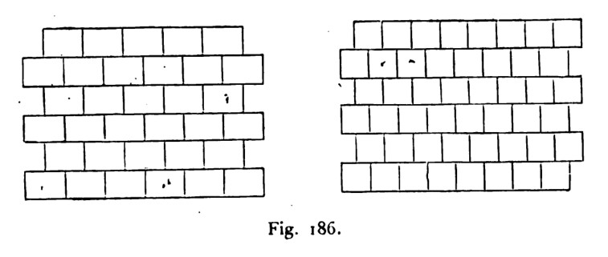
Fig. 186 · scan leaf 274. Open the source page .
Diagram-skeleton reconstruction; brick proportions and the finite crop are selected here.
16 occurrences96 strokes108 admitted seams0 / 0 blocked / open
Construction, identities and limits 487 distinct native objects in the reusable program; 610 including sample and seam law. 45,751 JSON bytes. All are relation/placeholder objects; there are 0 numeric participants.
The joined ink graph has 1 connected components and cycle rank 21. These are graph diagnostics, not face counts or an aesthetic score. The finite patch has 20 out-of-window seam obligations. 0 repeated endpoint-pair edge participations remain explicit.
Source fidelity is an authored judgement. No image recognition or pixel comparison chose this recipe. The selected display basis is R=(1,0), U=(0,1); these coordinates are absent from the executable graph.
Native packet · Graph-derived program inspection · SVG
Basket rectangles and square gaps Accepted stroke; occurrence 1 Accepted stroke; occurrence 1 Accepted stroke; occurrence 1 Accepted stroke; occurrence 1 Accepted stroke; occurrence 1 Accepted stroke; occurrence 1 Accepted stroke; occurrence 1 Accepted stroke; occurrence 1 Accepted stroke; occurrence 1 Accepted stroke; occurrence 1 Accepted stroke; occurrence 1 Accepted stroke; occurrence 1 Accepted stroke; occurrence 1 Accepted stroke; occurrence 1 Accepted stroke; occurrence 1 Accepted stroke; occurrence 1 Accepted stroke; occurrence 1 Accepted stroke; occurrence 1 Accepted stroke; occurrence 1 Accepted stroke; occurrence 1 Accepted stroke; occurrence 1 Accepted stroke; occurrence 1 Accepted stroke; occurrence 1 Accepted stroke; occurrence 1 Accepted stroke; occurrence 2 Accepted stroke; occurrence 2 Accepted stroke; occurrence 2 Accepted stroke; occurrence 2 Accepted stroke; occurrence 2 Accepted stroke; occurrence 2 Accepted stroke; occurrence 2 Accepted stroke; occurrence 2 Accepted stroke; occurrence 2 Accepted stroke; occurrence 2 Accepted stroke; occurrence 2 Accepted stroke; occurrence 2 Accepted stroke; occurrence 2 Accepted stroke; occurrence 2 Accepted stroke; occurrence 2 Accepted stroke; occurrence 2 Accepted stroke; occurrence 2 Accepted stroke; occurrence 2 Accepted stroke; occurrence 2 Accepted stroke; occurrence 2 Accepted stroke; occurrence 2 Accepted stroke; occurrence 2 Accepted stroke; occurrence 2 Accepted stroke; occurrence 2 Accepted stroke; occurrence 3 Accepted stroke; occurrence 3 Accepted stroke; occurrence 3 Accepted stroke; occurrence 3 Accepted stroke; occurrence 3 Accepted stroke; occurrence 3 Accepted stroke; occurrence 3 Accepted stroke; occurrence 3 Accepted stroke; occurrence 3 Accepted stroke; occurrence 3 Accepted stroke; occurrence 3 Accepted stroke; occurrence 3 Accepted stroke; occurrence 3 Accepted stroke; occurrence 3 Accepted stroke; occurrence 3 Accepted stroke; occurrence 3 Accepted stroke; occurrence 3 Accepted stroke; occurrence 3 Accepted stroke; occurrence 3 Accepted stroke; occurrence 3 Accepted stroke; occurrence 3 Accepted stroke; occurrence 3 Accepted stroke; occurrence 3 Accepted stroke; occurrence 3 Accepted stroke; occurrence 4 Accepted stroke; occurrence 4 Accepted stroke; occurrence 4 Accepted stroke; occurrence 4 Accepted stroke; occurrence 4 Accepted stroke; occurrence 4 Accepted stroke; occurrence 4 Accepted stroke; occurrence 4 Accepted stroke; occurrence 4 Accepted stroke; occurrence 4 Accepted stroke; occurrence 4 Accepted stroke; occurrence 4 Accepted stroke; occurrence 4 Accepted stroke; occurrence 4 Accepted stroke; occurrence 4 Accepted stroke; occurrence 4 Accepted stroke; occurrence 4 Accepted stroke; occurrence 4 Accepted stroke; occurrence 4 Accepted stroke; occurrence 4 Accepted stroke; occurrence 4 Accepted stroke; occurrence 4 Accepted stroke; occurrence 4 Accepted stroke; occurrence 4 Accepted stroke; occurrence 5 Accepted stroke; occurrence 5 Accepted stroke; occurrence 5 Accepted stroke; occurrence 5 Accepted stroke; occurrence 5 Accepted stroke; occurrence 5 Accepted stroke; occurrence 5 Accepted stroke; occurrence 5 Accepted stroke; occurrence 5 Accepted stroke; occurrence 5 Accepted stroke; occurrence 5 Accepted stroke; occurrence 5 Accepted stroke; occurrence 5 Accepted stroke; occurrence 5 Accepted stroke; occurrence 5 Accepted stroke; occurrence 5 Accepted stroke; occurrence 5 Accepted stroke; occurrence 5 Accepted stroke; occurrence 5 Accepted stroke; occurrence 5 Accepted stroke; occurrence 5 Accepted stroke; occurrence 5 Accepted stroke; occurrence 5 Accepted stroke; occurrence 5 Accepted stroke; occurrence 6 Accepted stroke; occurrence 6 Accepted stroke; occurrence 6 Accepted stroke; occurrence 6 Accepted stroke; occurrence 6 Accepted stroke; occurrence 6 Accepted stroke; occurrence 6 Accepted stroke; occurrence 6 Accepted stroke; occurrence 6 Accepted stroke; occurrence 6 Accepted stroke; occurrence 6 Accepted stroke; occurrence 6 Accepted stroke; occurrence 6 Accepted stroke; occurrence 6 Accepted stroke; occurrence 6 Accepted stroke; occurrence 6 Accepted stroke; occurrence 6 Accepted stroke; occurrence 6 Accepted stroke; occurrence 6 Accepted stroke; occurrence 6 Accepted stroke; occurrence 6 Accepted stroke; occurrence 6 Accepted stroke; occurrence 6 Accepted stroke; occurrence 6 Accepted stroke; occurrence 7 Accepted stroke; occurrence 7 Accepted stroke; occurrence 7 Accepted stroke; occurrence 7 Accepted stroke; occurrence 7 Accepted stroke; occurrence 7 Accepted stroke; occurrence 7 Accepted stroke; occurrence 7 Accepted stroke; occurrence 7 Accepted stroke; occurrence 7 Accepted stroke; occurrence 7 Accepted stroke; occurrence 7 Accepted stroke; occurrence 7 Accepted stroke; occurrence 7 Accepted stroke; occurrence 7 Accepted stroke; occurrence 7 Accepted stroke; occurrence 7 Accepted stroke; occurrence 7 Accepted stroke; occurrence 7 Accepted stroke; occurrence 7 Accepted stroke; occurrence 7 Accepted stroke; occurrence 7 Accepted stroke; occurrence 7 Accepted stroke; occurrence 7 Accepted stroke; occurrence 8 Accepted stroke; occurrence 8 Accepted stroke; occurrence 8 Accepted stroke; occurrence 8 Accepted stroke; occurrence 8 Accepted stroke; occurrence 8 Accepted stroke; occurrence 8 Accepted stroke; occurrence 8 Accepted stroke; occurrence 8 Accepted stroke; occurrence 8 Accepted stroke; occurrence 8 Accepted stroke; occurrence 8 Accepted stroke; occurrence 8 Accepted stroke; occurrence 8 Accepted stroke; occurrence 8 Accepted stroke; occurrence 8 Accepted stroke; occurrence 8 Accepted stroke; occurrence 8 Accepted stroke; occurrence 8 Accepted stroke; occurrence 8 Accepted stroke; occurrence 8 Accepted stroke; occurrence 8 Accepted stroke; occurrence 8 Accepted stroke; occurrence 8 Accepted stroke; occurrence 9 Accepted stroke; occurrence 9 Accepted stroke; occurrence 9 Accepted stroke; occurrence 9 Accepted stroke; occurrence 9 Accepted stroke; occurrence 9 Accepted stroke; occurrence 9 Accepted stroke; occurrence 9 Accepted stroke; occurrence 9 Accepted stroke; occurrence 9 Accepted stroke; occurrence 9 Accepted stroke; occurrence 9 Accepted stroke; occurrence 9 Accepted stroke; occurrence 9 Accepted stroke; occurrence 9 Accepted stroke; occurrence 9 Accepted stroke; occurrence 9 Accepted stroke; occurrence 9 Accepted stroke; occurrence 9 Accepted stroke; occurrence 9 Accepted stroke; occurrence 9 Accepted stroke; occurrence 9 Accepted stroke; occurrence 9 Accepted stroke; occurrence 9 Accepted stroke; occurrence 10 Accepted stroke; occurrence 10 Accepted stroke; occurrence 10 Accepted stroke; occurrence 10 Accepted stroke; occurrence 10 Accepted stroke; occurrence 10 Accepted stroke; occurrence 10 Accepted stroke; occurrence 10 Accepted stroke; occurrence 10 Accepted stroke; occurrence 10 Accepted stroke; occurrence 10 Accepted stroke; occurrence 10 Accepted stroke; occurrence 10 Accepted stroke; occurrence 10 Accepted stroke; occurrence 10 Accepted stroke; occurrence 10 Accepted stroke; occurrence 10 Accepted stroke; occurrence 10 Accepted stroke; occurrence 10 Accepted stroke; occurrence 10 Accepted stroke; occurrence 10 Accepted stroke; occurrence 10 Accepted stroke; occurrence 10 Accepted stroke; occurrence 10 Accepted stroke; occurrence 11 Accepted stroke; occurrence 11 Accepted stroke; occurrence 11 Accepted stroke; occurrence 11 Accepted stroke; occurrence 11 Accepted stroke; occurrence 11 Accepted stroke; occurrence 11 Accepted stroke; occurrence 11 Accepted stroke; occurrence 11 Accepted stroke; occurrence 11 Accepted stroke; occurrence 11 Accepted stroke; occurrence 11 Accepted stroke; occurrence 11 Accepted stroke; occurrence 11 Accepted stroke; occurrence 11 Accepted stroke; occurrence 11 Accepted stroke; occurrence 11 Accepted stroke; occurrence 11 Accepted stroke; occurrence 11 Accepted stroke; occurrence 11 Accepted stroke; occurrence 11 Accepted stroke; occurrence 11 Accepted stroke; occurrence 11 Accepted stroke; occurrence 11 Accepted stroke; occurrence 12 Accepted stroke; occurrence 12 Accepted stroke; occurrence 12 Accepted stroke; occurrence 12 Accepted stroke; occurrence 12 Accepted stroke; occurrence 12 Accepted stroke; occurrence 12 Accepted stroke; occurrence 12 Accepted stroke; occurrence 12 Accepted stroke; occurrence 12 Accepted stroke; occurrence 12 Accepted stroke; occurrence 12 Accepted stroke; occurrence 12 Accepted stroke; occurrence 12 Accepted stroke; occurrence 12 Accepted stroke; occurrence 12 Accepted stroke; occurrence 12 Accepted stroke; occurrence 12 Accepted stroke; occurrence 12 Accepted stroke; occurrence 12 Accepted stroke; occurrence 12 Accepted stroke; occurrence 12 Accepted stroke; occurrence 12 Accepted stroke; occurrence 12 Accepted stroke; occurrence 13 Accepted stroke; occurrence 13 Accepted stroke; occurrence 13 Accepted stroke; occurrence 13 Accepted stroke; occurrence 13 Accepted stroke; occurrence 13 Accepted stroke; occurrence 13 Accepted stroke; occurrence 13 Accepted stroke; occurrence 13 Accepted stroke; occurrence 13 Accepted stroke; occurrence 13 Accepted stroke; occurrence 13 Accepted stroke; occurrence 13 Accepted stroke; occurrence 13 Accepted stroke; occurrence 13 Accepted stroke; occurrence 13 Accepted stroke; occurrence 13 Accepted stroke; occurrence 13 Accepted stroke; occurrence 13 Accepted stroke; occurrence 13 Accepted stroke; occurrence 13 Accepted stroke; occurrence 13 Accepted stroke; occurrence 13 Accepted stroke; occurrence 13 Accepted stroke; occurrence 14 Accepted stroke; occurrence 14 Accepted stroke; occurrence 14 Accepted stroke; occurrence 14 Accepted stroke; occurrence 14 Accepted stroke; occurrence 14 Accepted stroke; occurrence 14 Accepted stroke; occurrence 14 Accepted stroke; occurrence 14 Accepted stroke; occurrence 14 Accepted stroke; occurrence 14 Accepted stroke; occurrence 14 Accepted stroke; occurrence 14 Accepted stroke; occurrence 14 Accepted stroke; occurrence 14 Accepted stroke; occurrence 14 Accepted stroke; occurrence 14 Accepted stroke; occurrence 14 Accepted stroke; occurrence 14 Accepted stroke; occurrence 14 Accepted stroke; occurrence 14 Accepted stroke; occurrence 14 Accepted stroke; occurrence 14 Accepted stroke; occurrence 14 Accepted stroke; occurrence 15 Accepted stroke; occurrence 15 Accepted stroke; occurrence 15 Accepted stroke; occurrence 15 Accepted stroke; occurrence 15 Accepted stroke; occurrence 15 Accepted stroke; occurrence 15 Accepted stroke; occurrence 15 Accepted stroke; occurrence 15 Accepted stroke; occurrence 15 Accepted stroke; occurrence 15 Accepted stroke; occurrence 15 Accepted stroke; occurrence 15 Accepted stroke; occurrence 15 Accepted stroke; occurrence 15 Accepted stroke; occurrence 15 Accepted stroke; occurrence 15 Accepted stroke; occurrence 15 Accepted stroke; occurrence 15 Accepted stroke; occurrence 15 Accepted stroke; occurrence 15 Accepted stroke; occurrence 15 Accepted stroke; occurrence 15 Accepted stroke; occurrence 15 Accepted stroke; occurrence 16 Accepted stroke; occurrence 16 Accepted stroke; occurrence 16 Accepted stroke; occurrence 16 Accepted stroke; occurrence 16 Accepted stroke; occurrence 16 Accepted stroke; occurrence 16 Accepted stroke; occurrence 16 Accepted stroke; occurrence 16 Accepted stroke; occurrence 16 Accepted stroke; occurrence 16 Accepted stroke; occurrence 16 Accepted stroke; occurrence 16 Accepted stroke; occurrence 16 Accepted stroke; occurrence 16 Accepted stroke; occurrence 16 Accepted stroke; occurrence 16 Accepted stroke; occurrence 16 Accepted stroke; occurrence 16 Accepted stroke; occurrence 16 Accepted stroke; occurrence 16 Accepted stroke; occurrence 16 Accepted stroke; occurrence 16 Accepted stroke; occurrence 16 Actual site with 2 stroke participations Actual site with 2 stroke participations Actual site with 4 stroke participations Actual site with 4 stroke participations Actual site with 4 stroke participations Actual site with 4 stroke participations Actual site with 4 stroke participations Actual site with 6 stroke participations Actual site with 6 stroke participations Actual site with 4 stroke participations Actual site with 4 stroke participations Actual site with 8 stroke participations Actual site with 6 stroke participations Actual site with 6 stroke participations Actual site with 4 stroke participations Actual site with 2 stroke participations Actual site with 2 stroke participations Actual site with 4 stroke participations Actual site with 4 stroke participations Actual site with 4 stroke participations Actual site with 4 stroke participations Actual site with 6 stroke participations Actual site with 6 stroke participations Actual site with 4 stroke participations Actual site with 4 stroke participations Actual site with 8 stroke participations Actual site with 6 stroke participations Actual site with 6 stroke participations Actual site with 2 stroke participations Actual site with 4 stroke participations Actual site with 4 stroke participations Actual site with 4 stroke participations Actual site with 4 stroke participations Actual site with 6 stroke participations Actual site with 6 stroke participations Actual site with 4 stroke participations Actual site with 4 stroke participations Actual site with 8 stroke participations Actual site with 6 stroke participations Actual site with 6 stroke participations Actual site with 2 stroke participations Actual site with 4 stroke participations Actual site with 4 stroke participations Actual site with 4 stroke participations Actual site with 2 stroke participations Actual site with 2 stroke participations Actual site with 4 stroke participations Actual site with 4 stroke participations Actual site with 4 stroke participations Actual site with 4 stroke participations Actual site with 6 stroke participations Actual site with 6 stroke participations Actual site with 4 stroke participations Actual site with 4 stroke participations Actual site with 4 stroke participations Actual site with 6 stroke participations Actual site with 6 stroke participations Actual site with 4 stroke participations Actual site with 4 stroke participations Actual site with 8 stroke participations Actual site with 6 stroke participations Actual site with 6 stroke participations Actual site with 4 stroke participations Actual site with 2 stroke participations Actual site with 4 stroke participations Actual site with 4 stroke participations Actual site with 6 stroke participations Actual site with 6 stroke participations Actual site with 4 stroke participations Actual site with 4 stroke participations Actual site with 8 stroke participations Actual site with 6 stroke participations Actual site with 6 stroke participations Actual site with 4 stroke participations Actual site with 4 stroke participations Actual site with 6 stroke participations Actual site with 6 stroke participations Actual site with 4 stroke participations Actual site with 4 stroke participations Actual site with 8 stroke participations Actual site with 6 stroke participations Actual site with 6 stroke participations Actual site with 4 stroke participations Actual site with 4 stroke participations Actual site with 2 stroke participations Actual site with 4 stroke participations Actual site with 4 stroke participations Actual site with 4 stroke participations Actual site with 4 stroke participations Actual site with 6 stroke participations Actual site with 6 stroke participations Actual site with 4 stroke participations Actual site with 4 stroke participations Actual site with 4 stroke participations Actual site with 6 stroke participations Actual site with 6 stroke participations Actual site with 4 stroke participations Actual site with 4 stroke participations Actual site with 8 stroke participations Actual site with 6 stroke participations Actual site with 6 stroke participations Actual site with 4 stroke participations Actual site with 2 stroke participations Actual site with 4 stroke participations Actual site with 4 stroke participations Actual site with 6 stroke participations Actual site with 6 stroke participations Actual site with 4 stroke participations Actual site with 4 stroke participations Actual site with 8 stroke participations Actual site with 6 stroke participations Actual site with 6 stroke participations Actual site with 4 stroke participations Actual site with 4 stroke participations Actual site with 6 stroke participations Actual site with 6 stroke participations Actual site with 4 stroke participations Actual site with 4 stroke participations Actual site with 8 stroke participations Actual site with 6 stroke participations Actual site with 6 stroke participations Actual site with 4 stroke participations Actual site with 4 stroke participations Actual site with 2 stroke participations Actual site with 4 stroke participations Actual site with 4 stroke participations Actual site with 4 stroke participations Actual site with 4 stroke participations Actual site with 6 stroke participations Actual site with 6 stroke participations Actual site with 4 stroke participations Actual site with 4 stroke participations Actual site with 4 stroke participations Actual site with 6 stroke participations Actual site with 6 stroke participations Actual site with 4 stroke participations Actual site with 4 stroke participations Actual site with 4 stroke participations Actual site with 2 stroke participations Actual site with 4 stroke participations Actual site with 2 stroke participations Actual site with 2 stroke participations Actual site with 4 stroke participations Actual site with 4 stroke participations Actual site with 6 stroke participations Actual site with 6 stroke participations Actual site with 4 stroke participations Actual site with 4 stroke participations Actual site with 4 stroke participations Actual site with 2 stroke participations Actual site with 4 stroke participations Actual site with 4 stroke participations Actual site with 4 stroke participations Actual site with 6 stroke participations Actual site with 6 stroke participations Actual site with 4 stroke participations Actual site with 4 stroke participations Actual site with 4 stroke participations Actual site with 2 stroke participations Actual site with 4 stroke participations Actual site with 4 stroke participations Actual site with 4 stroke participations Actual site with 2 stroke participations Actual site with 4 stroke participations Actual site with 4 stroke participations Actual site with 4 stroke participations Actual site with 2 stroke participations Actual site with 2 stroke participations Actual site with 4 stroke participations Accepted native output · one optional screen realization 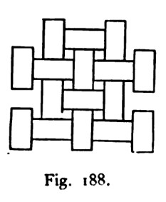
Fig. 188 · scan leaf 275. Open the source page .
Source-derived rectangular/square arrangement with chosen proportions; not a line-for-line tracing.
16 occurrences384 strokes459 admitted seams0 / 0 blocked / open
Construction, identities and limits 637 distinct native objects in the reusable program; 1,028 including sample and seam law. 77,724 JSON bytes. All are relation/placeholder objects; there are 0 numeric participants.
The joined ink graph has 1 connected components and cycle rank 216. These are graph diagnostics, not face counts or an aesthetic score. The finite patch has 85 out-of-window seam obligations. 136 repeated endpoint-pair edge participations remain explicit.
Source fidelity is an authored judgement. No image recognition or pixel comparison chose this recipe. The selected display basis is R=(1,0), U=(0,1); these coordinates are absent from the executable graph.
Native packet · Graph-derived program inspection · SVG
Squares meet diamonds Accepted stroke; occurrence 1 Accepted stroke; occurrence 1 Accepted stroke; occurrence 1 Accepted stroke; occurrence 1 Accepted stroke; occurrence 1 Accepted stroke; occurrence 1 Accepted stroke; occurrence 1 Accepted stroke; occurrence 1 Accepted stroke; occurrence 1 Accepted stroke; occurrence 1 Accepted stroke; occurrence 1 Accepted stroke; occurrence 1 Accepted stroke; occurrence 1 Accepted stroke; occurrence 1 Accepted stroke; occurrence 1 Accepted stroke; occurrence 1 Accepted stroke; occurrence 1 Accepted stroke; occurrence 1 Accepted stroke; occurrence 1 Accepted stroke; occurrence 1 Accepted stroke; occurrence 1 Accepted stroke; occurrence 1 Accepted stroke; occurrence 1 Accepted stroke; occurrence 1 Accepted stroke; occurrence 2 Accepted stroke; occurrence 2 Accepted stroke; occurrence 2 Accepted stroke; occurrence 2 Accepted stroke; occurrence 2 Accepted stroke; occurrence 2 Accepted stroke; occurrence 2 Accepted stroke; occurrence 2 Accepted stroke; occurrence 2 Accepted stroke; occurrence 2 Accepted stroke; occurrence 2 Accepted stroke; occurrence 2 Accepted stroke; occurrence 2 Accepted stroke; occurrence 2 Accepted stroke; occurrence 2 Accepted stroke; occurrence 2 Accepted stroke; occurrence 2 Accepted stroke; occurrence 2 Accepted stroke; occurrence 2 Accepted stroke; occurrence 2 Accepted stroke; occurrence 2 Accepted stroke; occurrence 2 Accepted stroke; occurrence 2 Accepted stroke; occurrence 2 Accepted stroke; occurrence 3 Accepted stroke; occurrence 3 Accepted stroke; occurrence 3 Accepted stroke; occurrence 3 Accepted stroke; occurrence 3 Accepted stroke; occurrence 3 Accepted stroke; occurrence 3 Accepted stroke; occurrence 3 Accepted stroke; occurrence 3 Accepted stroke; occurrence 3 Accepted stroke; occurrence 3 Accepted stroke; occurrence 3 Accepted stroke; occurrence 3 Accepted stroke; occurrence 3 Accepted stroke; occurrence 3 Accepted stroke; occurrence 3 Accepted stroke; occurrence 3 Accepted stroke; occurrence 3 Accepted stroke; occurrence 3 Accepted stroke; occurrence 3 Accepted stroke; occurrence 3 Accepted stroke; occurrence 3 Accepted stroke; occurrence 3 Accepted stroke; occurrence 3 Accepted stroke; occurrence 4 Accepted stroke; occurrence 4 Accepted stroke; occurrence 4 Accepted stroke; occurrence 4 Accepted stroke; occurrence 4 Accepted stroke; occurrence 4 Accepted stroke; occurrence 4 Accepted stroke; occurrence 4 Accepted stroke; occurrence 4 Accepted stroke; occurrence 4 Accepted stroke; occurrence 4 Accepted stroke; occurrence 4 Accepted stroke; occurrence 4 Accepted stroke; occurrence 4 Accepted stroke; occurrence 4 Accepted stroke; occurrence 4 Accepted stroke; occurrence 4 Accepted stroke; occurrence 4 Accepted stroke; occurrence 4 Accepted stroke; occurrence 4 Accepted stroke; occurrence 4 Accepted stroke; occurrence 4 Accepted stroke; occurrence 4 Accepted stroke; occurrence 4 Accepted stroke; occurrence 5 Accepted stroke; occurrence 5 Accepted stroke; occurrence 5 Accepted stroke; occurrence 5 Accepted stroke; occurrence 5 Accepted stroke; occurrence 5 Accepted stroke; occurrence 5 Accepted stroke; occurrence 5 Accepted stroke; occurrence 5 Accepted stroke; occurrence 5 Accepted stroke; occurrence 5 Accepted stroke; occurrence 5 Accepted stroke; occurrence 5 Accepted stroke; occurrence 5 Accepted stroke; occurrence 5 Accepted stroke; occurrence 5 Accepted stroke; occurrence 5 Accepted stroke; occurrence 5 Accepted stroke; occurrence 5 Accepted stroke; occurrence 5 Accepted stroke; occurrence 5 Accepted stroke; occurrence 5 Accepted stroke; occurrence 5 Accepted stroke; occurrence 5 Accepted stroke; occurrence 6 Accepted stroke; occurrence 6 Accepted stroke; occurrence 6 Accepted stroke; occurrence 6 Accepted stroke; occurrence 6 Accepted stroke; occurrence 6 Accepted stroke; occurrence 6 Accepted stroke; occurrence 6 Accepted stroke; occurrence 6 Accepted stroke; occurrence 6 Accepted stroke; occurrence 6 Accepted stroke; occurrence 6 Accepted stroke; occurrence 6 Accepted stroke; occurrence 6 Accepted stroke; occurrence 6 Accepted stroke; occurrence 6 Accepted stroke; occurrence 6 Accepted stroke; occurrence 6 Accepted stroke; occurrence 6 Accepted stroke; occurrence 6 Accepted stroke; occurrence 6 Accepted stroke; occurrence 6 Accepted stroke; occurrence 6 Accepted stroke; occurrence 6 Accepted stroke; occurrence 7 Accepted stroke; occurrence 7 Accepted stroke; occurrence 7 Accepted stroke; occurrence 7 Accepted stroke; occurrence 7 Accepted stroke; occurrence 7 Accepted stroke; occurrence 7 Accepted stroke; occurrence 7 Accepted stroke; occurrence 7 Accepted stroke; occurrence 7 Accepted stroke; occurrence 7 Accepted stroke; occurrence 7 Accepted stroke; occurrence 7 Accepted stroke; occurrence 7 Accepted stroke; occurrence 7 Accepted stroke; occurrence 7 Accepted stroke; occurrence 7 Accepted stroke; occurrence 7 Accepted stroke; occurrence 7 Accepted stroke; occurrence 7 Accepted stroke; occurrence 7 Accepted stroke; occurrence 7 Accepted stroke; occurrence 7 Accepted stroke; occurrence 7 Accepted stroke; occurrence 8 Accepted stroke; occurrence 8 Accepted stroke; occurrence 8 Accepted stroke; occurrence 8 Accepted stroke; occurrence 8 Accepted stroke; occurrence 8 Accepted stroke; occurrence 8 Accepted stroke; occurrence 8 Accepted stroke; occurrence 8 Accepted stroke; occurrence 8 Accepted stroke; occurrence 8 Accepted stroke; occurrence 8 Accepted stroke; occurrence 8 Accepted stroke; occurrence 8 Accepted stroke; occurrence 8 Accepted stroke; occurrence 8 Accepted stroke; occurrence 8 Accepted stroke; occurrence 8 Accepted stroke; occurrence 8 Accepted stroke; occurrence 8 Accepted stroke; occurrence 8 Accepted stroke; occurrence 8 Accepted stroke; occurrence 8 Accepted stroke; occurrence 8 Accepted stroke; occurrence 9 Accepted stroke; occurrence 9 Accepted stroke; occurrence 9 Accepted stroke; occurrence 9 Accepted stroke; occurrence 9 Accepted stroke; occurrence 9 Accepted stroke; occurrence 9 Accepted stroke; occurrence 9 Accepted stroke; occurrence 9 Accepted stroke; occurrence 9 Accepted stroke; occurrence 9 Accepted stroke; occurrence 9 Accepted stroke; occurrence 9 Accepted stroke; occurrence 9 Accepted stroke; occurrence 9 Accepted stroke; occurrence 9 Accepted stroke; occurrence 9 Accepted stroke; occurrence 9 Accepted stroke; occurrence 9 Accepted stroke; occurrence 9 Accepted stroke; occurrence 9 Accepted stroke; occurrence 9 Accepted stroke; occurrence 9 Accepted stroke; occurrence 9 Accepted stroke; occurrence 10 Accepted stroke; occurrence 10 Accepted stroke; occurrence 10 Accepted stroke; occurrence 10 Accepted stroke; occurrence 10 Accepted stroke; occurrence 10 Accepted stroke; occurrence 10 Accepted stroke; occurrence 10 Accepted stroke; occurrence 10 Accepted stroke; occurrence 10 Accepted stroke; occurrence 10 Accepted stroke; occurrence 10 Accepted stroke; occurrence 10 Accepted stroke; occurrence 10 Accepted stroke; occurrence 10 Accepted stroke; occurrence 10 Accepted stroke; occurrence 10 Accepted stroke; occurrence 10 Accepted stroke; occurrence 10 Accepted stroke; occurrence 10 Accepted stroke; occurrence 10 Accepted stroke; occurrence 10 Accepted stroke; occurrence 10 Accepted stroke; occurrence 10 Accepted stroke; occurrence 11 Accepted stroke; occurrence 11 Accepted stroke; occurrence 11 Accepted stroke; occurrence 11 Accepted stroke; occurrence 11 Accepted stroke; occurrence 11 Accepted stroke; occurrence 11 Accepted stroke; occurrence 11 Accepted stroke; occurrence 11 Accepted stroke; occurrence 11 Accepted stroke; occurrence 11 Accepted stroke; occurrence 11 Accepted stroke; occurrence 11 Accepted stroke; occurrence 11 Accepted stroke; occurrence 11 Accepted stroke; occurrence 11 Accepted stroke; occurrence 11 Accepted stroke; occurrence 11 Accepted stroke; occurrence 11 Accepted stroke; occurrence 11 Accepted stroke; occurrence 11 Accepted stroke; occurrence 11 Accepted stroke; occurrence 11 Accepted stroke; occurrence 11 Accepted stroke; occurrence 12 Accepted stroke; occurrence 12 Accepted stroke; occurrence 12 Accepted stroke; occurrence 12 Accepted stroke; occurrence 12 Accepted stroke; occurrence 12 Accepted stroke; occurrence 12 Accepted stroke; occurrence 12 Accepted stroke; occurrence 12 Accepted stroke; occurrence 12 Accepted stroke; occurrence 12 Accepted stroke; occurrence 12 Accepted stroke; occurrence 12 Accepted stroke; occurrence 12 Accepted stroke; occurrence 12 Accepted stroke; occurrence 12 Accepted stroke; occurrence 12 Accepted stroke; occurrence 12 Accepted stroke; occurrence 12 Accepted stroke; occurrence 12 Accepted stroke; occurrence 12 Accepted stroke; occurrence 12 Accepted stroke; occurrence 12 Accepted stroke; occurrence 12 Accepted stroke; occurrence 13 Accepted stroke; occurrence 13 Accepted stroke; occurrence 13 Accepted stroke; occurrence 13 Accepted stroke; occurrence 13 Accepted stroke; occurrence 13 Accepted stroke; occurrence 13 Accepted stroke; occurrence 13 Accepted stroke; occurrence 13 Accepted stroke; occurrence 13 Accepted stroke; occurrence 13 Accepted stroke; occurrence 13 Accepted stroke; occurrence 13 Accepted stroke; occurrence 13 Accepted stroke; occurrence 13 Accepted stroke; occurrence 13 Accepted stroke; occurrence 13 Accepted stroke; occurrence 13 Accepted stroke; occurrence 13 Accepted stroke; occurrence 13 Accepted stroke; occurrence 13 Accepted stroke; occurrence 13 Accepted stroke; occurrence 13 Accepted stroke; occurrence 13 Accepted stroke; occurrence 14 Accepted stroke; occurrence 14 Accepted stroke; occurrence 14 Accepted stroke; occurrence 14 Accepted stroke; occurrence 14 Accepted stroke; occurrence 14 Accepted stroke; occurrence 14 Accepted stroke; occurrence 14 Accepted stroke; occurrence 14 Accepted stroke; occurrence 14 Accepted stroke; occurrence 14 Accepted stroke; occurrence 14 Accepted stroke; occurrence 14 Accepted stroke; occurrence 14 Accepted stroke; occurrence 14 Accepted stroke; occurrence 14 Accepted stroke; occurrence 14 Accepted stroke; occurrence 14 Accepted stroke; occurrence 14 Accepted stroke; occurrence 14 Accepted stroke; occurrence 14 Accepted stroke; occurrence 14 Accepted stroke; occurrence 14 Accepted stroke; occurrence 14 Accepted stroke; occurrence 15 Accepted stroke; occurrence 15 Accepted stroke; occurrence 15 Accepted stroke; occurrence 15 Accepted stroke; occurrence 15 Accepted stroke; occurrence 15 Accepted stroke; occurrence 15 Accepted stroke; occurrence 15 Accepted stroke; occurrence 15 Accepted stroke; occurrence 15 Accepted stroke; occurrence 15 Accepted stroke; occurrence 15 Accepted stroke; occurrence 15 Accepted stroke; occurrence 15 Accepted stroke; occurrence 15 Accepted stroke; occurrence 15 Accepted stroke; occurrence 15 Accepted stroke; occurrence 15 Accepted stroke; occurrence 15 Accepted stroke; occurrence 15 Accepted stroke; occurrence 15 Accepted stroke; occurrence 15 Accepted stroke; occurrence 15 Accepted stroke; occurrence 15 Accepted stroke; occurrence 16 Accepted stroke; occurrence 16 Accepted stroke; occurrence 16 Accepted stroke; occurrence 16 Accepted stroke; occurrence 16 Accepted stroke; occurrence 16 Accepted stroke; occurrence 16 Accepted stroke; occurrence 16 Accepted stroke; occurrence 16 Accepted stroke; occurrence 16 Accepted stroke; occurrence 16 Accepted stroke; occurrence 16 Accepted stroke; occurrence 16 Accepted stroke; occurrence 16 Accepted stroke; occurrence 16 Accepted stroke; occurrence 16 Accepted stroke; occurrence 16 Accepted stroke; occurrence 16 Accepted stroke; occurrence 16 Accepted stroke; occurrence 16 Accepted stroke; occurrence 16 Accepted stroke; occurrence 16 Accepted stroke; occurrence 16 Accepted stroke; occurrence 16 Actual site with 2 stroke participations Actual site with 2 stroke participations Actual site with 2 stroke participations Actual site with 4 stroke participations Actual site with 2 stroke participations Actual site with 4 stroke participations Actual site with 2 stroke participations Actual site with 2 stroke participations Actual site with 2 stroke participations Actual site with 4 stroke participations Actual site with 2 stroke participations Actual site with 4 stroke participations Actual site with 2 stroke participations Actual site with 4 stroke participations Actual site with 2 stroke participations Actual site with 4 stroke participations Actual site with 4 stroke participations Actual site with 2 stroke participations Actual site with 4 stroke participations Actual site with 2 stroke participations Actual site with 2 stroke participations Actual site with 2 stroke participations Actual site with 2 stroke participations Actual site with 4 stroke participations Actual site with 2 stroke participations Actual site with 4 stroke participations Actual site with 2 stroke participations Actual site with 2 stroke participations Actual site with 4 stroke participations Actual site with 2 stroke participations Actual site with 4 stroke participations Actual site with 2 stroke participations Actual site with 4 stroke participations Actual site with 2 stroke participations Actual site with 4 stroke participations Actual site with 4 stroke participations Actual site with 2 stroke participations Actual site with 4 stroke participations Actual site with 2 stroke participations Actual site with 2 stroke participations Actual site with 2 stroke participations Actual site with 4 stroke participations Actual site with 2 stroke participations Actual site with 4 stroke participations Actual site with 2 stroke participations Actual site with 2 stroke participations Actual site with 4 stroke participations Actual site with 2 stroke participations Actual site with 4 stroke participations Actual site with 2 stroke participations Actual site with 4 stroke participations Actual site with 2 stroke participations Actual site with 4 stroke participations Actual site with 4 stroke participations Actual site with 2 stroke participations Actual site with 4 stroke participations Actual site with 2 stroke participations Actual site with 2 stroke participations Actual site with 2 stroke participations Actual site with 4 stroke participations Actual site with 2 stroke participations Actual site with 4 stroke participations Actual site with 2 stroke participations Actual site with 2 stroke participations Actual site with 4 stroke participations Actual site with 2 stroke participations Actual site with 2 stroke participations Actual site with 2 stroke participations Actual site with 4 stroke participations Actual site with 2 stroke participations Actual site with 4 stroke participations Actual site with 2 stroke participations Actual site with 2 stroke participations Actual site with 4 stroke participations Actual site with 2 stroke participations Actual site with 2 stroke participations Actual site with 4 stroke participations Actual site with 2 stroke participations Actual site with 4 stroke participations Actual site with 2 stroke participations Actual site with 2 stroke participations Actual site with 2 stroke participations Actual site with 4 stroke participations Actual site with 2 stroke participations Actual site with 4 stroke participations Actual site with 2 stroke participations Actual site with 4 stroke participations Actual site with 2 stroke participations Actual site with 4 stroke participations Actual site with 4 stroke participations Actual site with 4 stroke participations Actual site with 2 stroke participations Actual site with 2 stroke participations Actual site with 2 stroke participations Actual site with 4 stroke participations Actual site with 2 stroke participations Actual site with 4 stroke participations Actual site with 2 stroke participations Actual site with 2 stroke participations Actual site with 4 stroke participations Actual site with 2 stroke participations Actual site with 4 stroke participations Actual site with 2 stroke participations Actual site with 4 stroke participations Actual site with 2 stroke participations Actual site with 4 stroke participations Actual site with 4 stroke participations Actual site with 4 stroke participations Actual site with 2 stroke participations Actual site with 2 stroke participations Actual site with 4 stroke participations Actual site with 2 stroke participations Actual site with 4 stroke participations Actual site with 2 stroke participations Actual site with 2 stroke participations Actual site with 4 stroke participations Actual site with 2 stroke participations Actual site with 4 stroke participations Actual site with 2 stroke participations Actual site with 4 stroke participations Actual site with 2 stroke participations Actual site with 4 stroke participations Actual site with 4 stroke participations Actual site with 4 stroke participations Actual site with 2 stroke participations Actual site with 2 stroke participations Actual site with 4 stroke participations Actual site with 2 stroke participations Actual site with 4 stroke participations Actual site with 2 stroke participations Actual site with 2 stroke participations Actual site with 4 stroke participations Actual site with 2 stroke participations Actual site with 2 stroke participations Actual site with 2 stroke participations Actual site with 4 stroke participations Actual site with 2 stroke participations Actual site with 4 stroke participations Actual site with 2 stroke participations Actual site with 4 stroke participations Actual site with 2 stroke participations Actual site with 2 stroke participations Actual site with 4 stroke participations Actual site with 2 stroke participations Actual site with 4 stroke participations Actual site with 2 stroke participations Actual site with 2 stroke participations Actual site with 2 stroke participations Actual site with 4 stroke participations Actual site with 2 stroke participations Actual site with 4 stroke participations Actual site with 2 stroke participations Actual site with 4 stroke participations Actual site with 2 stroke participations Actual site with 4 stroke participations Actual site with 4 stroke participations Actual site with 4 stroke participations Actual site with 2 stroke participations Actual site with 2 stroke participations Actual site with 2 stroke participations Actual site with 4 stroke participations Actual site with 2 stroke participations Actual site with 4 stroke participations Actual site with 2 stroke participations Actual site with 2 stroke participations Actual site with 4 stroke participations Actual site with 2 stroke participations Actual site with 4 stroke participations Actual site with 2 stroke participations Actual site with 4 stroke participations Actual site with 2 stroke participations Actual site with 4 stroke participations Actual site with 4 stroke participations Actual site with 4 stroke participations Actual site with 2 stroke participations Actual site with 2 stroke participations Actual site with 4 stroke participations Actual site with 2 stroke participations Actual site with 4 stroke participations Actual site with 2 stroke participations Actual site with 2 stroke participations Actual site with 4 stroke participations Actual site with 2 stroke participations Actual site with 4 stroke participations Actual site with 2 stroke participations Actual site with 4 stroke participations Actual site with 2 stroke participations Actual site with 4 stroke participations Actual site with 4 stroke participations Actual site with 4 stroke participations Actual site with 2 stroke participations Actual site with 2 stroke participations Actual site with 4 stroke participations Actual site with 2 stroke participations Actual site with 4 stroke participations Actual site with 2 stroke participations Actual site with 2 stroke participations Actual site with 4 stroke participations Actual site with 2 stroke participations Actual site with 2 stroke participations Actual site with 2 stroke participations Actual site with 4 stroke participations Actual site with 2 stroke participations Actual site with 4 stroke participations Actual site with 2 stroke participations Actual site with 4 stroke participations Actual site with 2 stroke participations Actual site with 2 stroke participations Actual site with 4 stroke participations Actual site with 2 stroke participations Actual site with 4 stroke participations Actual site with 2 stroke participations Actual site with 2 stroke participations Actual site with 2 stroke participations Actual site with 4 stroke participations Actual site with 2 stroke participations Actual site with 4 stroke participations Actual site with 2 stroke participations Actual site with 2 stroke participations Actual site with 2 stroke participations Actual site with 4 stroke participations Actual site with 4 stroke participations Actual site with 2 stroke participations Actual site with 2 stroke participations Actual site with 2 stroke participations Actual site with 2 stroke participations Actual site with 4 stroke participations Actual site with 2 stroke participations Actual site with 4 stroke participations Actual site with 2 stroke participations Actual site with 2 stroke participations Actual site with 4 stroke participations Actual site with 2 stroke participations Actual site with 4 stroke participations Actual site with 2 stroke participations Actual site with 2 stroke participations Actual site with 2 stroke participations Actual site with 4 stroke participations Actual site with 4 stroke participations Actual site with 2 stroke participations Actual site with 2 stroke participations Actual site with 2 stroke participations Actual site with 4 stroke participations Actual site with 2 stroke participations Actual site with 4 stroke participations Actual site with 2 stroke participations Actual site with 2 stroke participations Actual site with 4 stroke participations Actual site with 2 stroke participations Actual site with 4 stroke participations Actual site with 2 stroke participations Actual site with 2 stroke participations Actual site with 2 stroke participations Actual site with 4 stroke participations Actual site with 4 stroke participations Actual site with 2 stroke participations Actual site with 2 stroke participations Actual site with 2 stroke participations Actual site with 4 stroke participations Actual site with 2 stroke participations Actual site with 4 stroke participations Actual site with 2 stroke participations Actual site with 2 stroke participations Actual site with 4 stroke participations Actual site with 2 stroke participations Actual site with 2 stroke participations Actual site with 2 stroke participations Actual site with 2 stroke participations Actual site with 2 stroke participations Actual site with 4 stroke participations Actual site with 2 stroke participations Actual site with 2 stroke participations Accepted native output · one optional screen realization 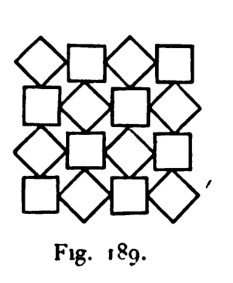
Fig. 189 · scan leaf 275. Open the source page .
Adaptation of the square/corner-square opposition; no claim of the source's exact spacing or metric square equivalence.
16 occurrences384 strokes204 admitted seams0 / 0 blocked / open
Construction, identities and limits 717 distinct native objects in the reusable program; 894 including sample and seam law. 67,491 JSON bytes. All are relation/placeholder objects; there are 0 numeric participants.
The joined ink graph has 1 connected components and cycle rank 113. These are graph diagnostics, not face counts or an aesthetic score. The finite patch has 20 out-of-window seam obligations. 0 repeated endpoint-pair edge participations remain explicit.
Source fidelity is an authored judgement. No image recognition or pixel comparison chose this recipe. The selected display basis is R=(1,0), U=(0,1); these coordinates are absent from the executable graph.
Native packet · Graph-derived program inspection · SVG
Honeycomb from three reused contours Accepted stroke; occurrence 1 Accepted stroke; occurrence 1 Accepted stroke; occurrence 1 Accepted stroke; occurrence 1 Accepted stroke; occurrence 1 Accepted stroke; occurrence 1 Accepted stroke; occurrence 1 Accepted stroke; occurrence 1 Accepted stroke; occurrence 1 Accepted stroke; occurrence 1 Accepted stroke; occurrence 1 Accepted stroke; occurrence 1 Accepted stroke; occurrence 1 Accepted stroke; occurrence 1 Accepted stroke; occurrence 1 Accepted stroke; occurrence 1 Accepted stroke; occurrence 1 Accepted stroke; occurrence 1 Accepted stroke; occurrence 2 Accepted stroke; occurrence 2 Accepted stroke; occurrence 2 Accepted stroke; occurrence 2 Accepted stroke; occurrence 2 Accepted stroke; occurrence 2 Accepted stroke; occurrence 2 Accepted stroke; occurrence 2 Accepted stroke; occurrence 2 Accepted stroke; occurrence 2 Accepted stroke; occurrence 2 Accepted stroke; occurrence 2 Accepted stroke; occurrence 2 Accepted stroke; occurrence 2 Accepted stroke; occurrence 2 Accepted stroke; occurrence 2 Accepted stroke; occurrence 2 Accepted stroke; occurrence 2 Accepted stroke; occurrence 3 Accepted stroke; occurrence 3 Accepted stroke; occurrence 3 Accepted stroke; occurrence 3 Accepted stroke; occurrence 3 Accepted stroke; occurrence 3 Accepted stroke; occurrence 3 Accepted stroke; occurrence 3 Accepted stroke; occurrence 3 Accepted stroke; occurrence 3 Accepted stroke; occurrence 3 Accepted stroke; occurrence 3 Accepted stroke; occurrence 3 Accepted stroke; occurrence 3 Accepted stroke; occurrence 3 Accepted stroke; occurrence 3 Accepted stroke; occurrence 3 Accepted stroke; occurrence 3 Accepted stroke; occurrence 4 Accepted stroke; occurrence 4 Accepted stroke; occurrence 4 Accepted stroke; occurrence 4 Accepted stroke; occurrence 4 Accepted stroke; occurrence 4 Accepted stroke; occurrence 4 Accepted stroke; occurrence 4 Accepted stroke; occurrence 4 Accepted stroke; occurrence 4 Accepted stroke; occurrence 4 Accepted stroke; occurrence 4 Accepted stroke; occurrence 4 Accepted stroke; occurrence 4 Accepted stroke; occurrence 4 Accepted stroke; occurrence 4 Accepted stroke; occurrence 4 Accepted stroke; occurrence 4 Accepted stroke; occurrence 5 Accepted stroke; occurrence 5 Accepted stroke; occurrence 5 Accepted stroke; occurrence 5 Accepted stroke; occurrence 5 Accepted stroke; occurrence 5 Accepted stroke; occurrence 5 Accepted stroke; occurrence 5 Accepted stroke; occurrence 5 Accepted stroke; occurrence 5 Accepted stroke; occurrence 5 Accepted stroke; occurrence 5 Accepted stroke; occurrence 5 Accepted stroke; occurrence 5 Accepted stroke; occurrence 5 Accepted stroke; occurrence 5 Accepted stroke; occurrence 5 Accepted stroke; occurrence 5 Accepted stroke; occurrence 6 Accepted stroke; occurrence 6 Accepted stroke; occurrence 6 Accepted stroke; occurrence 6 Accepted stroke; occurrence 6 Accepted stroke; occurrence 6 Accepted stroke; occurrence 6 Accepted stroke; occurrence 6 Accepted stroke; occurrence 6 Accepted stroke; occurrence 6 Accepted stroke; occurrence 6 Accepted stroke; occurrence 6 Accepted stroke; occurrence 6 Accepted stroke; occurrence 6 Accepted stroke; occurrence 6 Accepted stroke; occurrence 6 Accepted stroke; occurrence 6 Accepted stroke; occurrence 6 Accepted stroke; occurrence 7 Accepted stroke; occurrence 7 Accepted stroke; occurrence 7 Accepted stroke; occurrence 7 Accepted stroke; occurrence 7 Accepted stroke; occurrence 7 Accepted stroke; occurrence 7 Accepted stroke; occurrence 7 Accepted stroke; occurrence 7 Accepted stroke; occurrence 7 Accepted stroke; occurrence 7 Accepted stroke; occurrence 7 Accepted stroke; occurrence 7 Accepted stroke; occurrence 7 Accepted stroke; occurrence 7 Accepted stroke; occurrence 7 Accepted stroke; occurrence 7 Accepted stroke; occurrence 7 Accepted stroke; occurrence 8 Accepted stroke; occurrence 8 Accepted stroke; occurrence 8 Accepted stroke; occurrence 8 Accepted stroke; occurrence 8 Accepted stroke; occurrence 8 Accepted stroke; occurrence 8 Accepted stroke; occurrence 8 Accepted stroke; occurrence 8 Accepted stroke; occurrence 8 Accepted stroke; occurrence 8 Accepted stroke; occurrence 8 Accepted stroke; occurrence 8 Accepted stroke; occurrence 8 Accepted stroke; occurrence 8 Accepted stroke; occurrence 8 Accepted stroke; occurrence 8 Accepted stroke; occurrence 8 Accepted stroke; occurrence 9 Accepted stroke; occurrence 9 Accepted stroke; occurrence 9 Accepted stroke; occurrence 9 Accepted stroke; occurrence 9 Accepted stroke; occurrence 9 Accepted stroke; occurrence 9 Accepted stroke; occurrence 9 Accepted stroke; occurrence 9 Accepted stroke; occurrence 9 Accepted stroke; occurrence 9 Accepted stroke; occurrence 9 Accepted stroke; occurrence 9 Accepted stroke; occurrence 9 Accepted stroke; occurrence 9 Accepted stroke; occurrence 9 Accepted stroke; occurrence 9 Accepted stroke; occurrence 9 Accepted stroke; occurrence 10 Accepted stroke; occurrence 10 Accepted stroke; occurrence 10 Accepted stroke; occurrence 10 Accepted stroke; occurrence 10 Accepted stroke; occurrence 10 Accepted stroke; occurrence 10 Accepted stroke; occurrence 10 Accepted stroke; occurrence 10 Accepted stroke; occurrence 10 Accepted stroke; occurrence 10 Accepted stroke; occurrence 10 Accepted stroke; occurrence 10 Accepted stroke; occurrence 10 Accepted stroke; occurrence 10 Accepted stroke; occurrence 10 Accepted stroke; occurrence 10 Accepted stroke; occurrence 10 Accepted stroke; occurrence 11 Accepted stroke; occurrence 11 Accepted stroke; occurrence 11 Accepted stroke; occurrence 11 Accepted stroke; occurrence 11 Accepted stroke; occurrence 11 Accepted stroke; occurrence 11 Accepted stroke; occurrence 11 Accepted stroke; occurrence 11 Accepted stroke; occurrence 11 Accepted stroke; occurrence 11 Accepted stroke; occurrence 11 Accepted stroke; occurrence 11 Accepted stroke; occurrence 11 Accepted stroke; occurrence 11 Accepted stroke; occurrence 11 Accepted stroke; occurrence 11 Accepted stroke; occurrence 11 Accepted stroke; occurrence 12 Accepted stroke; occurrence 12 Accepted stroke; occurrence 12 Accepted stroke; occurrence 12 Accepted stroke; occurrence 12 Accepted stroke; occurrence 12 Accepted stroke; occurrence 12 Accepted stroke; occurrence 12 Accepted stroke; occurrence 12 Accepted stroke; occurrence 12 Accepted stroke; occurrence 12 Accepted stroke; occurrence 12 Accepted stroke; occurrence 12 Accepted stroke; occurrence 12 Accepted stroke; occurrence 12 Accepted stroke; occurrence 12 Accepted stroke; occurrence 12 Accepted stroke; occurrence 12 Accepted stroke; occurrence 13 Accepted stroke; occurrence 13 Accepted stroke; occurrence 13 Accepted stroke; occurrence 13 Accepted stroke; occurrence 13 Accepted stroke; occurrence 13 Accepted stroke; occurrence 13 Accepted stroke; occurrence 13 Accepted stroke; occurrence 13 Accepted stroke; occurrence 13 Accepted stroke; occurrence 13 Accepted stroke; occurrence 13 Accepted stroke; occurrence 13 Accepted stroke; occurrence 13 Accepted stroke; occurrence 13 Accepted stroke; occurrence 13 Accepted stroke; occurrence 13 Accepted stroke; occurrence 13 Accepted stroke; occurrence 14 Accepted stroke; occurrence 14 Accepted stroke; occurrence 14 Accepted stroke; occurrence 14 Accepted stroke; occurrence 14 Accepted stroke; occurrence 14 Accepted stroke; occurrence 14 Accepted stroke; occurrence 14 Accepted stroke; occurrence 14 Accepted stroke; occurrence 14 Accepted stroke; occurrence 14 Accepted stroke; occurrence 14 Accepted stroke; occurrence 14 Accepted stroke; occurrence 14 Accepted stroke; occurrence 14 Accepted stroke; occurrence 14 Accepted stroke; occurrence 14 Accepted stroke; occurrence 14 Accepted stroke; occurrence 15 Accepted stroke; occurrence 15 Accepted stroke; occurrence 15 Accepted stroke; occurrence 15 Accepted stroke; occurrence 15 Accepted stroke; occurrence 15 Accepted stroke; occurrence 15 Accepted stroke; occurrence 15 Accepted stroke; occurrence 15 Accepted stroke; occurrence 15 Accepted stroke; occurrence 15 Accepted stroke; occurrence 15 Accepted stroke; occurrence 15 Accepted stroke; occurrence 15 Accepted stroke; occurrence 15 Accepted stroke; occurrence 15 Accepted stroke; occurrence 15 Accepted stroke; occurrence 15 Accepted stroke; occurrence 16 Accepted stroke; occurrence 16 Accepted stroke; occurrence 16 Accepted stroke; occurrence 16 Accepted stroke; occurrence 16 Accepted stroke; occurrence 16 Accepted stroke; occurrence 16 Accepted stroke; occurrence 16 Accepted stroke; occurrence 16 Accepted stroke; occurrence 16 Accepted stroke; occurrence 16 Accepted stroke; occurrence 16 Accepted stroke; occurrence 16 Accepted stroke; occurrence 16 Accepted stroke; occurrence 16 Accepted stroke; occurrence 16 Accepted stroke; occurrence 16 Accepted stroke; occurrence 16 Actual site with 4 stroke participations Actual site with 4 stroke participations Actual site with 2 stroke participations Actual site with 2 stroke participations Actual site with 2 stroke participations Actual site with 2 stroke participations Actual site with 6 stroke participations Actual site with 6 stroke participations Actual site with 4 stroke participations Actual site with 4 stroke participations Actual site with 6 stroke participations Actual site with 6 stroke participations Actual site with 6 stroke participations Actual site with 6 stroke participations Actual site with 4 stroke participations Actual site with 2 stroke participations Actual site with 2 stroke participations Actual site with 6 stroke participations Actual site with 6 stroke participations Actual site with 4 stroke participations Actual site with 6 stroke participations Actual site with 6 stroke participations Actual site with 6 stroke participations Actual site with 6 stroke participations Actual site with 4 stroke participations Actual site with 2 stroke participations Actual site with 2 stroke participations Actual site with 6 stroke participations Actual site with 6 stroke participations Actual site with 4 stroke participations Actual site with 6 stroke participations Actual site with 6 stroke participations Actual site with 6 stroke participations Actual site with 6 stroke participations Actual site with 4 stroke participations Actual site with 2 stroke participations Actual site with 2 stroke participations Actual site with 4 stroke participations Actual site with 6 stroke participations Actual site with 2 stroke participations Actual site with 2 stroke participations Actual site with 4 stroke participations Actual site with 6 stroke participations Actual site with 2 stroke participations Actual site with 4 stroke participations Actual site with 2 stroke participations Actual site with 2 stroke participations Actual site with 6 stroke participations Actual site with 6 stroke participations Actual site with 4 stroke participations Actual site with 6 stroke participations Actual site with 6 stroke participations Actual site with 6 stroke participations Actual site with 6 stroke participations Actual site with 6 stroke participations Actual site with 6 stroke participations Actual site with 6 stroke participations Actual site with 6 stroke participations Actual site with 6 stroke participations Actual site with 6 stroke participations Actual site with 6 stroke participations Actual site with 6 stroke participations Actual site with 6 stroke participations Actual site with 6 stroke participations Actual site with 6 stroke participations Actual site with 6 stroke participations Actual site with 4 stroke participations Actual site with 6 stroke participations Actual site with 2 stroke participations Actual site with 4 stroke participations Actual site with 6 stroke participations Actual site with 2 stroke participations Actual site with 4 stroke participations Actual site with 2 stroke participations Actual site with 2 stroke participations Actual site with 6 stroke participations Actual site with 6 stroke participations Actual site with 4 stroke participations Actual site with 6 stroke participations Actual site with 6 stroke participations Actual site with 6 stroke participations Actual site with 6 stroke participations Actual site with 6 stroke participations Actual site with 6 stroke participations Actual site with 6 stroke participations Actual site with 6 stroke participations Actual site with 6 stroke participations Actual site with 6 stroke participations Actual site with 6 stroke participations Actual site with 6 stroke participations Actual site with 6 stroke participations Actual site with 6 stroke participations Actual site with 6 stroke participations Actual site with 6 stroke participations Actual site with 4 stroke participations Actual site with 6 stroke participations Actual site with 2 stroke participations Actual site with 4 stroke participations Actual site with 6 stroke participations Actual site with 2 stroke participations Actual site with 4 stroke participations Actual site with 2 stroke participations Actual site with 2 stroke participations Actual site with 6 stroke participations Actual site with 4 stroke participations Actual site with 2 stroke participations Actual site with 4 stroke participations Actual site with 2 stroke participations Actual site with 2 stroke participations Actual site with 6 stroke participations Actual site with 6 stroke participations Actual site with 4 stroke participations Actual site with 4 stroke participations Actual site with 2 stroke participations Actual site with 2 stroke participations Actual site with 6 stroke participations Actual site with 6 stroke participations Actual site with 4 stroke participations Actual site with 4 stroke participations Actual site with 2 stroke participations Actual site with 2 stroke participations Actual site with 6 stroke participations Actual site with 4 stroke participations Actual site with 4 stroke participations Actual site with 2 stroke participations Actual site with 2 stroke participations Actual site with 2 stroke participations Actual site with 2 stroke participations Accepted native output · one optional screen realization 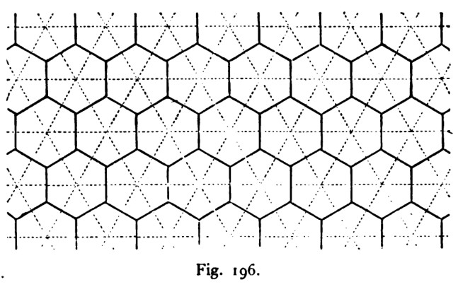
Fig. 196 · scan leaf 277. Open the source page .
Reconstruction of the honeycomb incidence pattern. Regular-looking hexagons come from the optional triangular display, not a native angle or length theorem.
16 occurrences288 strokes351 admitted seams0 / 0 blocked / open
Construction, identities and limits 668 distinct native objects in the reusable program; 994 including sample and seam law. 75,301 JSON bytes. All are relation/placeholder objects; there are 0 numeric participants.
The joined ink graph has 1 connected components and cycle rank 161. These are graph diagnostics, not face counts or an aesthetic score. The finite patch has 81 out-of-window seam obligations. 113 repeated endpoint-pair edge participations remain explicit.
Source fidelity is an authored judgement. No image recognition or pixel comparison chose this recipe. The selected display basis is R=(1,0), U=(0.5,0.866); these coordinates are absent from the executable graph.
Native packet · Graph-derived program inspection · SVG
Hexagons with triangular interstices Accepted stroke; occurrence 1 Accepted stroke; occurrence 1 Accepted stroke; occurrence 1 Accepted stroke; occurrence 1 Accepted stroke; occurrence 1 Accepted stroke; occurrence 1 Accepted stroke; occurrence 2 Accepted stroke; occurrence 2 Accepted stroke; occurrence 2 Accepted stroke; occurrence 2 Accepted stroke; occurrence 2 Accepted stroke; occurrence 2 Accepted stroke; occurrence 3 Accepted stroke; occurrence 3 Accepted stroke; occurrence 3 Accepted stroke; occurrence 3 Accepted stroke; occurrence 3 Accepted stroke; occurrence 3 Accepted stroke; occurrence 4 Accepted stroke; occurrence 4 Accepted stroke; occurrence 4 Accepted stroke; occurrence 4 Accepted stroke; occurrence 4 Accepted stroke; occurrence 4 Accepted stroke; occurrence 5 Accepted stroke; occurrence 5 Accepted stroke; occurrence 5 Accepted stroke; occurrence 5 Accepted stroke; occurrence 5 Accepted stroke; occurrence 5 Accepted stroke; occurrence 6 Accepted stroke; occurrence 6 Accepted stroke; occurrence 6 Accepted stroke; occurrence 6 Accepted stroke; occurrence 6 Accepted stroke; occurrence 6 Accepted stroke; occurrence 7 Accepted stroke; occurrence 7 Accepted stroke; occurrence 7 Accepted stroke; occurrence 7 Accepted stroke; occurrence 7 Accepted stroke; occurrence 7 Accepted stroke; occurrence 8 Accepted stroke; occurrence 8 Accepted stroke; occurrence 8 Accepted stroke; occurrence 8 Accepted stroke; occurrence 8 Accepted stroke; occurrence 8 Accepted stroke; occurrence 9 Accepted stroke; occurrence 9 Accepted stroke; occurrence 9 Accepted stroke; occurrence 9 Accepted stroke; occurrence 9 Accepted stroke; occurrence 9 Accepted stroke; occurrence 10 Accepted stroke; occurrence 10 Accepted stroke; occurrence 10 Accepted stroke; occurrence 10 Accepted stroke; occurrence 10 Accepted stroke; occurrence 10 Accepted stroke; occurrence 11 Accepted stroke; occurrence 11 Accepted stroke; occurrence 11 Accepted stroke; occurrence 11 Accepted stroke; occurrence 11 Accepted stroke; occurrence 11 Accepted stroke; occurrence 12 Accepted stroke; occurrence 12 Accepted stroke; occurrence 12 Accepted stroke; occurrence 12 Accepted stroke; occurrence 12 Accepted stroke; occurrence 12 Accepted stroke; occurrence 13 Accepted stroke; occurrence 13 Accepted stroke; occurrence 13 Accepted stroke; occurrence 13 Accepted stroke; occurrence 13 Accepted stroke; occurrence 13 Accepted stroke; occurrence 14 Accepted stroke; occurrence 14 Accepted stroke; occurrence 14 Accepted stroke; occurrence 14 Accepted stroke; occurrence 14 Accepted stroke; occurrence 14 Accepted stroke; occurrence 15 Accepted stroke; occurrence 15 Accepted stroke; occurrence 15 Accepted stroke; occurrence 15 Accepted stroke; occurrence 15 Accepted stroke; occurrence 15 Accepted stroke; occurrence 16 Accepted stroke; occurrence 16 Accepted stroke; occurrence 16 Accepted stroke; occurrence 16 Accepted stroke; occurrence 16 Accepted stroke; occurrence 16 Actual site with 4 stroke participations Actual site with 4 stroke participations Actual site with 2 stroke participations Actual site with 2 stroke participations Actual site with 2 stroke participations Actual site with 2 stroke participations Actual site with 4 stroke participations Actual site with 4 stroke participations Actual site with 4 stroke participations Actual site with 2 stroke participations Actual site with 2 stroke participations Actual site with 4 stroke participations Actual site with 4 stroke participations Actual site with 4 stroke participations Actual site with 2 stroke participations Actual site with 2 stroke participations Actual site with 2 stroke participations Actual site with 4 stroke participations Actual site with 4 stroke participations Actual site with 2 stroke participations Actual site with 2 stroke participations Actual site with 4 stroke participations Actual site with 4 stroke participations Actual site with 2 stroke participations Actual site with 2 stroke participations Actual site with 4 stroke participations Actual site with 4 stroke participations Actual site with 4 stroke participations Actual site with 4 stroke participations Actual site with 4 stroke participations Actual site with 4 stroke participations Actual site with 2 stroke participations Actual site with 4 stroke participations Actual site with 4 stroke participations Actual site with 2 stroke participations Actual site with 4 stroke participations Actual site with 4 stroke participations Actual site with 2 stroke participations Actual site with 2 stroke participations Actual site with 4 stroke participations Actual site with 4 stroke participations Actual site with 4 stroke participations Actual site with 4 stroke participations Actual site with 4 stroke participations Actual site with 4 stroke participations Actual site with 2 stroke participations Actual site with 4 stroke participations Actual site with 4 stroke participations Actual site with 2 stroke participations Actual site with 4 stroke participations Actual site with 2 stroke participations Actual site with 2 stroke participations Actual site with 2 stroke participations Actual site with 4 stroke participations Actual site with 2 stroke participations Actual site with 2 stroke participations Actual site with 4 stroke participations Actual site with 2 stroke participations Actual site with 2 stroke participations Actual site with 2 stroke participations Actual site with 2 stroke participations Actual site with 2 stroke participations Actual site with 2 stroke participations Accepted native output · one optional screen realization 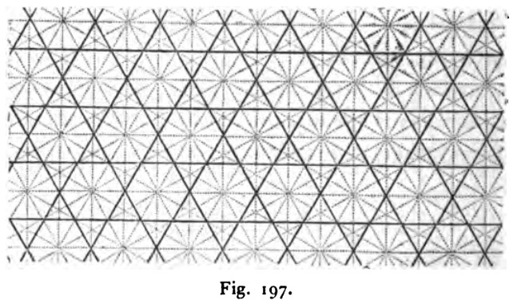
Fig. 197 · scan leaf 277. Open the source page .
Trihexagonal topology reconstruction with a selected triangular display basis; regular-polygon calibration remains outside the program.
16 occurrences96 strokes61 admitted seams0 / 0 blocked / open
Construction, identities and limits 458 distinct native objects in the reusable program; 554 including sample and seam law. 41,514 JSON bytes. All are relation/placeholder objects; there are 0 numeric participants.
The joined ink graph has 1 connected components and cycle rank 34. These are graph diagnostics, not face counts or an aesthetic score. The finite patch has 19 out-of-window seam obligations. 0 repeated endpoint-pair edge participations remain explicit.
Source fidelity is an authored judgement. No image recognition or pixel comparison chose this recipe. The selected display basis is R=(1,0), U=(0.5,0.866); these coordinates are absent from the executable graph.
Native packet · Graph-derived program inspection · SVG
Octagons leave small squares Accepted stroke; occurrence 1 Accepted stroke; occurrence 1 Accepted stroke; occurrence 1 Accepted stroke; occurrence 1 Accepted stroke; occurrence 1 Accepted stroke; occurrence 1 Accepted stroke; occurrence 1 Accepted stroke; occurrence 1 Accepted stroke; occurrence 2 Accepted stroke; occurrence 2 Accepted stroke; occurrence 2 Accepted stroke; occurrence 2 Accepted stroke; occurrence 2 Accepted stroke; occurrence 2 Accepted stroke; occurrence 2 Accepted stroke; occurrence 2 Accepted stroke; occurrence 3 Accepted stroke; occurrence 3 Accepted stroke; occurrence 3 Accepted stroke; occurrence 3 Accepted stroke; occurrence 3 Accepted stroke; occurrence 3 Accepted stroke; occurrence 3 Accepted stroke; occurrence 3 Accepted stroke; occurrence 4 Accepted stroke; occurrence 4 Accepted stroke; occurrence 4 Accepted stroke; occurrence 4 Accepted stroke; occurrence 4 Accepted stroke; occurrence 4 Accepted stroke; occurrence 4 Accepted stroke; occurrence 4 Accepted stroke; occurrence 5 Accepted stroke; occurrence 5 Accepted stroke; occurrence 5 Accepted stroke; occurrence 5 Accepted stroke; occurrence 5 Accepted stroke; occurrence 5 Accepted stroke; occurrence 5 Accepted stroke; occurrence 5 Accepted stroke; occurrence 6 Accepted stroke; occurrence 6 Accepted stroke; occurrence 6 Accepted stroke; occurrence 6 Accepted stroke; occurrence 6 Accepted stroke; occurrence 6 Accepted stroke; occurrence 6 Accepted stroke; occurrence 6 Accepted stroke; occurrence 7 Accepted stroke; occurrence 7 Accepted stroke; occurrence 7 Accepted stroke; occurrence 7 Accepted stroke; occurrence 7 Accepted stroke; occurrence 7 Accepted stroke; occurrence 7 Accepted stroke; occurrence 7 Accepted stroke; occurrence 8 Accepted stroke; occurrence 8 Accepted stroke; occurrence 8 Accepted stroke; occurrence 8 Accepted stroke; occurrence 8 Accepted stroke; occurrence 8 Accepted stroke; occurrence 8 Accepted stroke; occurrence 8 Accepted stroke; occurrence 9 Accepted stroke; occurrence 9 Accepted stroke; occurrence 9 Accepted stroke; occurrence 9 Accepted stroke; occurrence 9 Accepted stroke; occurrence 9 Accepted stroke; occurrence 9 Accepted stroke; occurrence 9 Accepted stroke; occurrence 10 Accepted stroke; occurrence 10 Accepted stroke; occurrence 10 Accepted stroke; occurrence 10 Accepted stroke; occurrence 10 Accepted stroke; occurrence 10 Accepted stroke; occurrence 10 Accepted stroke; occurrence 10 Accepted stroke; occurrence 11 Accepted stroke; occurrence 11 Accepted stroke; occurrence 11 Accepted stroke; occurrence 11 Accepted stroke; occurrence 11 Accepted stroke; occurrence 11 Accepted stroke; occurrence 11 Accepted stroke; occurrence 11 Accepted stroke; occurrence 12 Accepted stroke; occurrence 12 Accepted stroke; occurrence 12 Accepted stroke; occurrence 12 Accepted stroke; occurrence 12 Accepted stroke; occurrence 12 Accepted stroke; occurrence 12 Accepted stroke; occurrence 12 Accepted stroke; occurrence 13 Accepted stroke; occurrence 13 Accepted stroke; occurrence 13 Accepted stroke; occurrence 13 Accepted stroke; occurrence 13 Accepted stroke; occurrence 13 Accepted stroke; occurrence 13 Accepted stroke; occurrence 13 Accepted stroke; occurrence 14 Accepted stroke; occurrence 14 Accepted stroke; occurrence 14 Accepted stroke; occurrence 14 Accepted stroke; occurrence 14 Accepted stroke; occurrence 14 Accepted stroke; occurrence 14 Accepted stroke; occurrence 14 Accepted stroke; occurrence 15 Accepted stroke; occurrence 15 Accepted stroke; occurrence 15 Accepted stroke; occurrence 15 Accepted stroke; occurrence 15 Accepted stroke; occurrence 15 Accepted stroke; occurrence 15 Accepted stroke; occurrence 15 Accepted stroke; occurrence 16 Accepted stroke; occurrence 16 Accepted stroke; occurrence 16 Accepted stroke; occurrence 16 Accepted stroke; occurrence 16 Accepted stroke; occurrence 16 Accepted stroke; occurrence 16 Accepted stroke; occurrence 16 Actual site with 2 stroke participations Actual site with 2 stroke participations Actual site with 4 stroke participations Actual site with 4 stroke participations Actual site with 4 stroke participations Actual site with 4 stroke participations Actual site with 2 stroke participations Actual site with 2 stroke participations Actual site with 2 stroke participations Actual site with 2 stroke participations Actual site with 4 stroke participations Actual site with 4 stroke participations Actual site with 4 stroke participations Actual site with 4 stroke participations Actual site with 2 stroke participations Actual site with 2 stroke participations Actual site with 4 stroke participations Actual site with 4 stroke participations Actual site with 4 stroke participations Actual site with 4 stroke participations Actual site with 2 stroke participations Actual site with 2 stroke participations Actual site with 2 stroke participations Actual site with 2 stroke participations Actual site with 4 stroke participations Actual site with 4 stroke participations Actual site with 4 stroke participations Actual site with 4 stroke participations Actual site with 4 stroke participations Actual site with 4 stroke participations Actual site with 2 stroke participations Actual site with 2 stroke participations Actual site with 4 stroke participations Actual site with 4 stroke participations Actual site with 4 stroke participations Actual site with 4 stroke participations Actual site with 4 stroke participations Actual site with 4 stroke participations Actual site with 4 stroke participations Actual site with 4 stroke participations Actual site with 2 stroke participations Actual site with 2 stroke participations Actual site with 4 stroke participations Actual site with 4 stroke participations Actual site with 4 stroke participations Actual site with 4 stroke participations Actual site with 4 stroke participations Actual site with 4 stroke participations Actual site with 2 stroke participations Actual site with 2 stroke participations Actual site with 4 stroke participations Actual site with 4 stroke participations Actual site with 4 stroke participations Actual site with 4 stroke participations Actual site with 4 stroke participations Actual site with 4 stroke participations Actual site with 4 stroke participations Actual site with 4 stroke participations Actual site with 2 stroke participations Actual site with 2 stroke participations Actual site with 4 stroke participations Actual site with 4 stroke participations Actual site with 4 stroke participations Actual site with 4 stroke participations Actual site with 2 stroke participations Actual site with 2 stroke participations Actual site with 2 stroke participations Actual site with 2 stroke participations Actual site with 4 stroke participations Actual site with 4 stroke participations Actual site with 2 stroke participations Actual site with 2 stroke participations Actual site with 4 stroke participations Actual site with 4 stroke participations Actual site with 2 stroke participations Actual site with 2 stroke participations Actual site with 2 stroke participations Actual site with 2 stroke participations Actual site with 2 stroke participations Actual site with 2 stroke participations Accepted native output · one optional screen realization 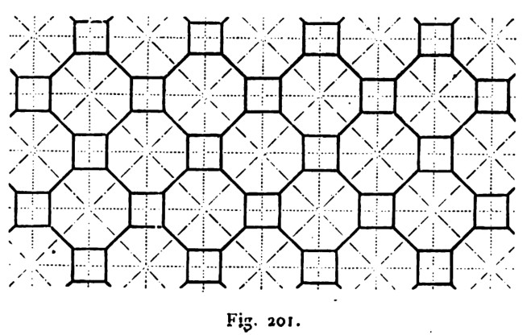
Fig. 201 · scan leaf 278. Open the source page .
Octagon/square diagram skeleton. Eight equal Euclidean sides are not asserted; the chamfer and straight-side proportions are selected.
16 occurrences128 strokes76 admitted seams0 / 0 blocked / open
Construction, identities and limits 496 distinct native objects in the reusable program; 601 including sample and seam law. 45,131 JSON bytes. All are relation/placeholder objects; there are 0 numeric participants.
The joined ink graph has 1 connected components and cycle rank 49. These are graph diagnostics, not face counts or an aesthetic score. The finite patch has 20 out-of-window seam obligations. 24 repeated endpoint-pair edge participations remain explicit.
Source fidelity is an authored judgement. No image recognition or pixel comparison chose this recipe. The selected display basis is R=(1,0), U=(0,1); these coordinates are absent from the executable graph.
Native packet · Graph-derived program inspection · SVG
Alternating-width orthogonal bands Accepted stroke; occurrence 1 Accepted stroke; occurrence 1 Accepted stroke; occurrence 1 Accepted stroke; occurrence 1 Accepted stroke; occurrence 1 Accepted stroke; occurrence 1 Accepted stroke; occurrence 1 Accepted stroke; occurrence 1 Accepted stroke; occurrence 2 Accepted stroke; occurrence 2 Accepted stroke; occurrence 2 Accepted stroke; occurrence 2 Accepted stroke; occurrence 2 Accepted stroke; occurrence 2 Accepted stroke; occurrence 2 Accepted stroke; occurrence 2 Accepted stroke; occurrence 3 Accepted stroke; occurrence 3 Accepted stroke; occurrence 3 Accepted stroke; occurrence 3 Accepted stroke; occurrence 3 Accepted stroke; occurrence 3 Accepted stroke; occurrence 3 Accepted stroke; occurrence 3 Accepted stroke; occurrence 4 Accepted stroke; occurrence 4 Accepted stroke; occurrence 4 Accepted stroke; occurrence 4 Accepted stroke; occurrence 4 Accepted stroke; occurrence 4 Accepted stroke; occurrence 4 Accepted stroke; occurrence 4 Accepted stroke; occurrence 5 Accepted stroke; occurrence 5 Accepted stroke; occurrence 5 Accepted stroke; occurrence 5 Accepted stroke; occurrence 5 Accepted stroke; occurrence 5 Accepted stroke; occurrence 5 Accepted stroke; occurrence 5 Accepted stroke; occurrence 6 Accepted stroke; occurrence 6 Accepted stroke; occurrence 6 Accepted stroke; occurrence 6 Accepted stroke; occurrence 6 Accepted stroke; occurrence 6 Accepted stroke; occurrence 6 Accepted stroke; occurrence 6 Accepted stroke; occurrence 7 Accepted stroke; occurrence 7 Accepted stroke; occurrence 7 Accepted stroke; occurrence 7 Accepted stroke; occurrence 7 Accepted stroke; occurrence 7 Accepted stroke; occurrence 7 Accepted stroke; occurrence 7 Accepted stroke; occurrence 8 Accepted stroke; occurrence 8 Accepted stroke; occurrence 8 Accepted stroke; occurrence 8 Accepted stroke; occurrence 8 Accepted stroke; occurrence 8 Accepted stroke; occurrence 8 Accepted stroke; occurrence 8 Accepted stroke; occurrence 9 Accepted stroke; occurrence 9 Accepted stroke; occurrence 9 Accepted stroke; occurrence 9 Accepted stroke; occurrence 9 Accepted stroke; occurrence 9 Accepted stroke; occurrence 9 Accepted stroke; occurrence 9 Accepted stroke; occurrence 10 Accepted stroke; occurrence 10 Accepted stroke; occurrence 10 Accepted stroke; occurrence 10 Accepted stroke; occurrence 10 Accepted stroke; occurrence 10 Accepted stroke; occurrence 10 Accepted stroke; occurrence 10 Accepted stroke; occurrence 11 Accepted stroke; occurrence 11 Accepted stroke; occurrence 11 Accepted stroke; occurrence 11 Accepted stroke; occurrence 11 Accepted stroke; occurrence 11 Accepted stroke; occurrence 11 Accepted stroke; occurrence 11 Accepted stroke; occurrence 12 Accepted stroke; occurrence 12 Accepted stroke; occurrence 12 Accepted stroke; occurrence 12 Accepted stroke; occurrence 12 Accepted stroke; occurrence 12 Accepted stroke; occurrence 12 Accepted stroke; occurrence 12 Accepted stroke; occurrence 13 Accepted stroke; occurrence 13 Accepted stroke; occurrence 13 Accepted stroke; occurrence 13 Accepted stroke; occurrence 13 Accepted stroke; occurrence 13 Accepted stroke; occurrence 13 Accepted stroke; occurrence 13 Accepted stroke; occurrence 14 Accepted stroke; occurrence 14 Accepted stroke; occurrence 14 Accepted stroke; occurrence 14 Accepted stroke; occurrence 14 Accepted stroke; occurrence 14 Accepted stroke; occurrence 14 Accepted stroke; occurrence 14 Accepted stroke; occurrence 15 Accepted stroke; occurrence 15 Accepted stroke; occurrence 15 Accepted stroke; occurrence 15 Accepted stroke; occurrence 15 Accepted stroke; occurrence 15 Accepted stroke; occurrence 15 Accepted stroke; occurrence 15 Accepted stroke; occurrence 16 Accepted stroke; occurrence 16 Accepted stroke; occurrence 16 Accepted stroke; occurrence 16 Accepted stroke; occurrence 16 Accepted stroke; occurrence 16 Accepted stroke; occurrence 16 Accepted stroke; occurrence 16 Actual site with 2 stroke participations Actual site with 3 stroke participations Actual site with 3 stroke participations Actual site with 3 stroke participations Actual site with 4 stroke participations Actual site with 4 stroke participations Actual site with 3 stroke participations Actual site with 4 stroke participations Actual site with 3 stroke participations Actual site with 3 stroke participations Actual site with 4 stroke participations Actual site with 4 stroke participations Actual site with 4 stroke participations Actual site with 4 stroke participations Actual site with 3 stroke participations Actual site with 3 stroke participations Actual site with 4 stroke participations Actual site with 4 stroke participations Actual site with 4 stroke participations Actual site with 4 stroke participations Actual site with 3 stroke participations Actual site with 1 stroke participations Actual site with 4 stroke participations Actual site with 1 stroke participations Actual site with 4 stroke participations Actual site with 4 stroke participations Actual site with 3 stroke participations Actual site with 4 stroke participations Actual site with 4 stroke participations Actual site with 3 stroke participations Actual site with 4 stroke participations Actual site with 4 stroke participations Actual site with 4 stroke participations Actual site with 4 stroke participations Actual site with 4 stroke participations Actual site with 4 stroke participations Actual site with 4 stroke participations Actual site with 4 stroke participations Actual site with 4 stroke participations Actual site with 1 stroke participations Actual site with 4 stroke participations Actual site with 1 stroke participations Actual site with 4 stroke participations Actual site with 4 stroke participations Actual site with 3 stroke participations Actual site with 4 stroke participations Actual site with 4 stroke participations Actual site with 3 stroke participations Actual site with 4 stroke participations Actual site with 4 stroke participations Actual site with 4 stroke participations Actual site with 4 stroke participations Actual site with 4 stroke participations Actual site with 4 stroke participations Actual site with 4 stroke participations Actual site with 4 stroke participations Actual site with 4 stroke participations Actual site with 1 stroke participations Actual site with 4 stroke participations Actual site with 1 stroke participations Actual site with 4 stroke participations Actual site with 4 stroke participations Actual site with 3 stroke participations Actual site with 4 stroke participations Actual site with 4 stroke participations Actual site with 1 stroke participations Actual site with 1 stroke participations Actual site with 4 stroke participations Actual site with 4 stroke participations Actual site with 1 stroke participations Actual site with 1 stroke participations Actual site with 4 stroke participations Actual site with 4 stroke participations Actual site with 1 stroke participations Actual site with 1 stroke participations Actual site with 1 stroke participations Actual site with 4 stroke participations Actual site with 1 stroke participations Actual site with 1 stroke participations Actual site with 1 stroke participations Accepted native output · one optional screen realization 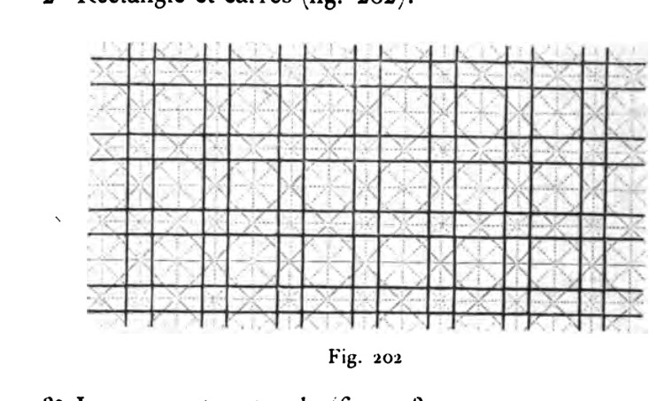
Fig. 202 · scan leaf 279. Open the source page .
Diagram reconstruction with an authored narrow/wide relation; the source's proportions are not copied exactly.
16 occurrences128 strokes169 admitted seams0 / 0 blocked / open
Construction, identities and limits 529 distinct native objects in the reusable program; 707 including sample and seam law. 53,220 JSON bytes. All are relation/placeholder objects; there are 0 numeric participants.
The joined ink graph has 1 connected components and cycle rank 49. These are graph diagnostics, not face counts or an aesthetic score. The finite patch has 39 out-of-window seam obligations. 0 repeated endpoint-pair edge participations remain explicit.
Source fidelity is an authored judgement. No image recognition or pixel comparison chose this recipe. The selected display basis is R=(1,0), U=(0,1); these coordinates are absent from the executable graph.
Native packet · Graph-derived program inspection · SVG
Cranked diagonal trellis Accepted stroke; occurrence 1 Accepted stroke; occurrence 1 Accepted stroke; occurrence 1 Accepted stroke; occurrence 1 Accepted stroke; occurrence 1 Accepted stroke; occurrence 1 Accepted stroke; occurrence 1 Accepted stroke; occurrence 1 Accepted stroke; occurrence 1 Accepted stroke; occurrence 1 Accepted stroke; occurrence 2 Accepted stroke; occurrence 2 Accepted stroke; occurrence 2 Accepted stroke; occurrence 2 Accepted stroke; occurrence 2 Accepted stroke; occurrence 2 Accepted stroke; occurrence 2 Accepted stroke; occurrence 2 Accepted stroke; occurrence 2 Accepted stroke; occurrence 2 Accepted stroke; occurrence 3 Accepted stroke; occurrence 3 Accepted stroke; occurrence 3 Accepted stroke; occurrence 3 Accepted stroke; occurrence 3 Accepted stroke; occurrence 3 Accepted stroke; occurrence 3 Accepted stroke; occurrence 3 Accepted stroke; occurrence 3 Accepted stroke; occurrence 3 Accepted stroke; occurrence 4 Accepted stroke; occurrence 4 Accepted stroke; occurrence 4 Accepted stroke; occurrence 4 Accepted stroke; occurrence 4 Accepted stroke; occurrence 4 Accepted stroke; occurrence 4 Accepted stroke; occurrence 4 Accepted stroke; occurrence 4 Accepted stroke; occurrence 4 Accepted stroke; occurrence 5 Accepted stroke; occurrence 5 Accepted stroke; occurrence 5 Accepted stroke; occurrence 5 Accepted stroke; occurrence 5 Accepted stroke; occurrence 5 Accepted stroke; occurrence 5 Accepted stroke; occurrence 5 Accepted stroke; occurrence 5 Accepted stroke; occurrence 5 Accepted stroke; occurrence 6 Accepted stroke; occurrence 6 Accepted stroke; occurrence 6 Accepted stroke; occurrence 6 Accepted stroke; occurrence 6 Accepted stroke; occurrence 6 Accepted stroke; occurrence 6 Accepted stroke; occurrence 6 Accepted stroke; occurrence 6 Accepted stroke; occurrence 6 Accepted stroke; occurrence 7 Accepted stroke; occurrence 7 Accepted stroke; occurrence 7 Accepted stroke; occurrence 7 Accepted stroke; occurrence 7 Accepted stroke; occurrence 7 Accepted stroke; occurrence 7 Accepted stroke; occurrence 7 Accepted stroke; occurrence 7 Accepted stroke; occurrence 7 Accepted stroke; occurrence 8 Accepted stroke; occurrence 8 Accepted stroke; occurrence 8 Accepted stroke; occurrence 8 Accepted stroke; occurrence 8 Accepted stroke; occurrence 8 Accepted stroke; occurrence 8 Accepted stroke; occurrence 8 Accepted stroke; occurrence 8 Accepted stroke; occurrence 8 Accepted stroke; occurrence 9 Accepted stroke; occurrence 9 Accepted stroke; occurrence 9 Accepted stroke; occurrence 9 Accepted stroke; occurrence 9 Accepted stroke; occurrence 9 Accepted stroke; occurrence 9 Accepted stroke; occurrence 9 Accepted stroke; occurrence 9 Accepted stroke; occurrence 9 Accepted stroke; occurrence 10 Accepted stroke; occurrence 10 Accepted stroke; occurrence 10 Accepted stroke; occurrence 10 Accepted stroke; occurrence 10 Accepted stroke; occurrence 10 Accepted stroke; occurrence 10 Accepted stroke; occurrence 10 Accepted stroke; occurrence 10 Accepted stroke; occurrence 10 Accepted stroke; occurrence 11 Accepted stroke; occurrence 11 Accepted stroke; occurrence 11 Accepted stroke; occurrence 11 Accepted stroke; occurrence 11 Accepted stroke; occurrence 11 Accepted stroke; occurrence 11 Accepted stroke; occurrence 11 Accepted stroke; occurrence 11 Accepted stroke; occurrence 11 Accepted stroke; occurrence 12 Accepted stroke; occurrence 12 Accepted stroke; occurrence 12 Accepted stroke; occurrence 12 Accepted stroke; occurrence 12 Accepted stroke; occurrence 12 Accepted stroke; occurrence 12 Accepted stroke; occurrence 12 Accepted stroke; occurrence 12 Accepted stroke; occurrence 12 Accepted stroke; occurrence 13 Accepted stroke; occurrence 13 Accepted stroke; occurrence 13 Accepted stroke; occurrence 13 Accepted stroke; occurrence 13 Accepted stroke; occurrence 13 Accepted stroke; occurrence 13 Accepted stroke; occurrence 13 Accepted stroke; occurrence 13 Accepted stroke; occurrence 13 Accepted stroke; occurrence 14 Accepted stroke; occurrence 14 Accepted stroke; occurrence 14 Accepted stroke; occurrence 14 Accepted stroke; occurrence 14 Accepted stroke; occurrence 14 Accepted stroke; occurrence 14 Accepted stroke; occurrence 14 Accepted stroke; occurrence 14 Accepted stroke; occurrence 14 Accepted stroke; occurrence 15 Accepted stroke; occurrence 15 Accepted stroke; occurrence 15 Accepted stroke; occurrence 15 Accepted stroke; occurrence 15 Accepted stroke; occurrence 15 Accepted stroke; occurrence 15 Accepted stroke; occurrence 15 Accepted stroke; occurrence 15 Accepted stroke; occurrence 15 Accepted stroke; occurrence 16 Accepted stroke; occurrence 16 Accepted stroke; occurrence 16 Accepted stroke; occurrence 16 Accepted stroke; occurrence 16 Accepted stroke; occurrence 16 Accepted stroke; occurrence 16 Accepted stroke; occurrence 16 Accepted stroke; occurrence 16 Accepted stroke; occurrence 16 Actual site with 2 stroke participations Actual site with 2 stroke participations Actual site with 2 stroke participations Actual site with 2 stroke participations Actual site with 2 stroke participations Actual site with 3 stroke participations Actual site with 2 stroke participations Actual site with 2 stroke participations Actual site with 2 stroke participations Actual site with 2 stroke participations Actual site with 3 stroke participations Actual site with 2 stroke participations Actual site with 2 stroke participations Actual site with 2 stroke participations Actual site with 2 stroke participations Actual site with 3 stroke participations Actual site with 2 stroke participations Actual site with 2 stroke participations Actual site with 2 stroke participations Actual site with 2 stroke participations Actual site with 4 stroke participations Actual site with 2 stroke participations Actual site with 2 stroke participations Actual site with 2 stroke participations Actual site with 2 stroke participations Actual site with 3 stroke participations Actual site with 2 stroke participations Actual site with 2 stroke participations Actual site with 2 stroke participations Actual site with 2 stroke participations Actual site with 4 stroke participations Actual site with 2 stroke participations Actual site with 2 stroke participations Actual site with 2 stroke participations Actual site with 2 stroke participations Actual site with 1 stroke participations Actual site with 2 stroke participations Actual site with 2 stroke participations Actual site with 2 stroke participations Actual site with 2 stroke participations Actual site with 4 stroke participations Actual site with 2 stroke participations Actual site with 2 stroke participations Actual site with 2 stroke participations Actual site with 2 stroke participations Actual site with 2 stroke participations Actual site with 2 stroke participations Actual site with 2 stroke participations Actual site with 2 stroke participations Actual site with 3 stroke participations Actual site with 2 stroke participations Actual site with 2 stroke participations Actual site with 2 stroke participations Actual site with 2 stroke participations Actual site with 2 stroke participations Actual site with 2 stroke participations Actual site with 2 stroke participations Actual site with 2 stroke participations Actual site with 4 stroke participations Actual site with 2 stroke participations Actual site with 2 stroke participations Actual site with 2 stroke participations Actual site with 2 stroke participations Actual site with 2 stroke participations Actual site with 2 stroke participations Actual site with 2 stroke participations Actual site with 2 stroke participations Actual site with 4 stroke participations Actual site with 2 stroke participations Actual site with 2 stroke participations Actual site with 2 stroke participations Actual site with 2 stroke participations Actual site with 1 stroke participations Actual site with 2 stroke participations Actual site with 2 stroke participations Actual site with 2 stroke participations Actual site with 2 stroke participations Actual site with 4 stroke participations Actual site with 2 stroke participations Actual site with 2 stroke participations Actual site with 2 stroke participations Actual site with 2 stroke participations Actual site with 2 stroke participations Actual site with 2 stroke participations Actual site with 2 stroke participations Actual site with 2 stroke participations Actual site with 3 stroke participations Actual site with 2 stroke participations Actual site with 2 stroke participations Actual site with 2 stroke participations Actual site with 2 stroke participations Actual site with 2 stroke participations Actual site with 2 stroke participations Actual site with 2 stroke participations Actual site with 2 stroke participations Actual site with 4 stroke participations Actual site with 2 stroke participations Actual site with 2 stroke participations Actual site with 2 stroke participations Actual site with 2 stroke participations Actual site with 2 stroke participations Actual site with 2 stroke participations Actual site with 2 stroke participations Actual site with 2 stroke participations Actual site with 4 stroke participations Actual site with 2 stroke participations Actual site with 2 stroke participations Actual site with 2 stroke participations Actual site with 2 stroke participations Actual site with 1 stroke participations Actual site with 2 stroke participations Actual site with 2 stroke participations Actual site with 2 stroke participations Actual site with 2 stroke participations Actual site with 4 stroke participations Actual site with 2 stroke participations Actual site with 2 stroke participations Actual site with 2 stroke participations Actual site with 2 stroke participations Actual site with 2 stroke participations Actual site with 2 stroke participations Actual site with 2 stroke participations Actual site with 2 stroke participations Actual site with 1 stroke participations Actual site with 2 stroke participations Actual site with 2 stroke participations Actual site with 2 stroke participations Actual site with 2 stroke participations Actual site with 2 stroke participations Actual site with 2 stroke participations Actual site with 2 stroke participations Actual site with 2 stroke participations Actual site with 1 stroke participations Actual site with 2 stroke participations Actual site with 2 stroke participations Actual site with 2 stroke participations Actual site with 2 stroke participations Actual site with 2 stroke participations Actual site with 2 stroke participations Actual site with 2 stroke participations Actual site with 2 stroke participations Actual site with 1 stroke participations Actual site with 2 stroke participations Actual site with 2 stroke participations Actual site with 2 stroke participations Actual site with 2 stroke participations Actual site with 1 stroke participations Actual site with 2 stroke participations Actual site with 2 stroke participations Actual site with 2 stroke participations Actual site with 2 stroke participations Actual site with 1 stroke participations Accepted native output · one optional screen realization 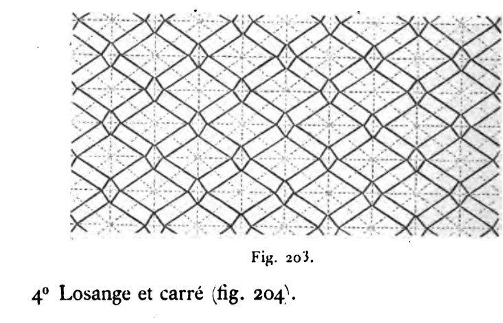
Fig. 203 · scan leaf 279. Open the source page .
Source-inspired lozenge/rectangle trellis. Bend proportions and the explicit endpoint-only incidence are this reconstruction's choices.
16 occurrences160 strokes73 admitted seams0 / 0 blocked / open
Construction, identities and limits 571 distinct native objects in the reusable program; 678 including sample and seam law. 51,068 JSON bytes. All are relation/placeholder objects; there are 0 numeric participants.
The joined ink graph has 1 connected components and cycle rank 9. These are graph diagnostics, not face counts or an aesthetic score. The finite patch has 23 out-of-window seam obligations. 0 repeated endpoint-pair edge participations remain explicit.
Source fidelity is an authored judgement. No image recognition or pixel comparison chose this recipe. The selected display basis is R=(1,0), U=(0,1); these coordinates are absent from the executable graph.
Native packet · Graph-derived program inspection · SVG
Greek-key border control Accepted stroke; occurrence 1 Accepted stroke; occurrence 1 Accepted stroke; occurrence 1 Accepted stroke; occurrence 1 Accepted stroke; occurrence 1 Accepted stroke; occurrence 1 Accepted stroke; occurrence 1 Accepted stroke; occurrence 1 Accepted stroke; occurrence 1 Accepted stroke; occurrence 1 Accepted stroke; occurrence 1 Accepted stroke; occurrence 1 Accepted stroke; occurrence 1 Accepted stroke; occurrence 1 Accepted stroke; occurrence 1 Accepted stroke; occurrence 1 Accepted stroke; occurrence 1 Accepted stroke; occurrence 1 Accepted stroke; occurrence 1 Accepted stroke; occurrence 1 Accepted stroke; occurrence 2 Accepted stroke; occurrence 2 Accepted stroke; occurrence 2 Accepted stroke; occurrence 2 Accepted stroke; occurrence 2 Accepted stroke; occurrence 2 Accepted stroke; occurrence 2 Accepted stroke; occurrence 2 Accepted stroke; occurrence 2 Accepted stroke; occurrence 2 Accepted stroke; occurrence 2 Accepted stroke; occurrence 2 Accepted stroke; occurrence 2 Accepted stroke; occurrence 2 Accepted stroke; occurrence 2 Accepted stroke; occurrence 2 Accepted stroke; occurrence 2 Accepted stroke; occurrence 2 Accepted stroke; occurrence 2 Accepted stroke; occurrence 2 Accepted stroke; occurrence 3 Accepted stroke; occurrence 3 Accepted stroke; occurrence 3 Accepted stroke; occurrence 3 Accepted stroke; occurrence 3 Accepted stroke; occurrence 3 Accepted stroke; occurrence 3 Accepted stroke; occurrence 3 Accepted stroke; occurrence 3 Accepted stroke; occurrence 3 Accepted stroke; occurrence 3 Accepted stroke; occurrence 3 Accepted stroke; occurrence 3 Accepted stroke; occurrence 3 Accepted stroke; occurrence 3 Accepted stroke; occurrence 3 Accepted stroke; occurrence 3 Accepted stroke; occurrence 3 Accepted stroke; occurrence 3 Accepted stroke; occurrence 3 Accepted stroke; occurrence 4 Accepted stroke; occurrence 4 Accepted stroke; occurrence 4 Accepted stroke; occurrence 4 Accepted stroke; occurrence 4 Accepted stroke; occurrence 4 Accepted stroke; occurrence 4 Accepted stroke; occurrence 4 Accepted stroke; occurrence 4 Accepted stroke; occurrence 4 Accepted stroke; occurrence 4 Accepted stroke; occurrence 4 Accepted stroke; occurrence 4 Accepted stroke; occurrence 4 Accepted stroke; occurrence 4 Accepted stroke; occurrence 4 Accepted stroke; occurrence 4 Accepted stroke; occurrence 4 Accepted stroke; occurrence 4 Accepted stroke; occurrence 4 Accepted stroke; occurrence 5 Accepted stroke; occurrence 5 Accepted stroke; occurrence 5 Accepted stroke; occurrence 5 Accepted stroke; occurrence 5 Accepted stroke; occurrence 5 Accepted stroke; occurrence 5 Accepted stroke; occurrence 5 Accepted stroke; occurrence 5 Accepted stroke; occurrence 5 Accepted stroke; occurrence 5 Accepted stroke; occurrence 5 Accepted stroke; occurrence 5 Accepted stroke; occurrence 5 Accepted stroke; occurrence 5 Accepted stroke; occurrence 5 Accepted stroke; occurrence 5 Accepted stroke; occurrence 5 Accepted stroke; occurrence 5 Accepted stroke; occurrence 5 Accepted stroke; occurrence 6 Accepted stroke; occurrence 6 Accepted stroke; occurrence 6 Accepted stroke; occurrence 6 Accepted stroke; occurrence 6 Accepted stroke; occurrence 6 Accepted stroke; occurrence 6 Accepted stroke; occurrence 6 Accepted stroke; occurrence 6 Accepted stroke; occurrence 6 Accepted stroke; occurrence 6 Accepted stroke; occurrence 6 Accepted stroke; occurrence 6 Accepted stroke; occurrence 6 Accepted stroke; occurrence 6 Accepted stroke; occurrence 6 Accepted stroke; occurrence 6 Accepted stroke; occurrence 6 Accepted stroke; occurrence 6 Accepted stroke; occurrence 6 Accepted stroke; occurrence 7 Accepted stroke; occurrence 7 Accepted stroke; occurrence 7 Accepted stroke; occurrence 7 Accepted stroke; occurrence 7 Accepted stroke; occurrence 7 Accepted stroke; occurrence 7 Accepted stroke; occurrence 7 Accepted stroke; occurrence 7 Accepted stroke; occurrence 7 Accepted stroke; occurrence 7 Accepted stroke; occurrence 7 Accepted stroke; occurrence 7 Accepted stroke; occurrence 7 Accepted stroke; occurrence 7 Accepted stroke; occurrence 7 Accepted stroke; occurrence 7 Accepted stroke; occurrence 7 Accepted stroke; occurrence 7 Accepted stroke; occurrence 7 Accepted stroke; occurrence 8 Accepted stroke; occurrence 8 Accepted stroke; occurrence 8 Accepted stroke; occurrence 8 Accepted stroke; occurrence 8 Accepted stroke; occurrence 8 Accepted stroke; occurrence 8 Accepted stroke; occurrence 8 Accepted stroke; occurrence 8 Accepted stroke; occurrence 8 Accepted stroke; occurrence 8 Accepted stroke; occurrence 8 Accepted stroke; occurrence 8 Accepted stroke; occurrence 8 Accepted stroke; occurrence 8 Accepted stroke; occurrence 8 Accepted stroke; occurrence 8 Accepted stroke; occurrence 8 Accepted stroke; occurrence 8 Accepted stroke; occurrence 8 Accepted stroke; occurrence 9 Accepted stroke; occurrence 9 Accepted stroke; occurrence 9 Accepted stroke; occurrence 9 Accepted stroke; occurrence 9 Accepted stroke; occurrence 9 Accepted stroke; occurrence 9 Accepted stroke; occurrence 9 Accepted stroke; occurrence 9 Accepted stroke; occurrence 9 Accepted stroke; occurrence 9 Accepted stroke; occurrence 9 Accepted stroke; occurrence 9 Accepted stroke; occurrence 9 Accepted stroke; occurrence 9 Accepted stroke; occurrence 9 Accepted stroke; occurrence 9 Accepted stroke; occurrence 9 Accepted stroke; occurrence 9 Accepted stroke; occurrence 9 Accepted stroke; occurrence 10 Accepted stroke; occurrence 10 Accepted stroke; occurrence 10 Accepted stroke; occurrence 10 Accepted stroke; occurrence 10 Accepted stroke; occurrence 10 Accepted stroke; occurrence 10 Accepted stroke; occurrence 10 Accepted stroke; occurrence 10 Accepted stroke; occurrence 10 Accepted stroke; occurrence 10 Accepted stroke; occurrence 10 Accepted stroke; occurrence 10 Accepted stroke; occurrence 10 Accepted stroke; occurrence 10 Accepted stroke; occurrence 10 Accepted stroke; occurrence 10 Accepted stroke; occurrence 10 Accepted stroke; occurrence 10 Accepted stroke; occurrence 10 Accepted stroke; occurrence 11 Accepted stroke; occurrence 11 Accepted stroke; occurrence 11 Accepted stroke; occurrence 11 Accepted stroke; occurrence 11 Accepted stroke; occurrence 11 Accepted stroke; occurrence 11 Accepted stroke; occurrence 11 Accepted stroke; occurrence 11 Accepted stroke; occurrence 11 Accepted stroke; occurrence 11 Accepted stroke; occurrence 11 Accepted stroke; occurrence 11 Accepted stroke; occurrence 11 Accepted stroke; occurrence 11 Accepted stroke; occurrence 11 Accepted stroke; occurrence 11 Accepted stroke; occurrence 11 Accepted stroke; occurrence 11 Accepted stroke; occurrence 11 Accepted stroke; occurrence 12 Accepted stroke; occurrence 12 Accepted stroke; occurrence 12 Accepted stroke; occurrence 12 Accepted stroke; occurrence 12 Accepted stroke; occurrence 12 Accepted stroke; occurrence 12 Accepted stroke; occurrence 12 Accepted stroke; occurrence 12 Accepted stroke; occurrence 12 Accepted stroke; occurrence 12 Accepted stroke; occurrence 12 Accepted stroke; occurrence 12 Accepted stroke; occurrence 12 Accepted stroke; occurrence 12 Accepted stroke; occurrence 12 Accepted stroke; occurrence 12 Accepted stroke; occurrence 12 Accepted stroke; occurrence 12 Accepted stroke; occurrence 12 Actual site with 1 stroke participations Actual site with 2 stroke participations Actual site with 2 stroke participations Actual site with 2 stroke participations Actual site with 2 stroke participations Actual site with 2 stroke participations Actual site with 2 stroke participations Actual site with 2 stroke participations Actual site with 2 stroke participations Actual site with 2 stroke participations Actual site with 2 stroke participations Actual site with 2 stroke participations Actual site with 2 stroke participations Actual site with 2 stroke participations Actual site with 2 stroke participations Actual site with 2 stroke participations Actual site with 2 stroke participations Actual site with 2 stroke participations Actual site with 2 stroke participations Actual site with 1 stroke participations Actual site with 2 stroke participations Actual site with 1 stroke participations Actual site with 2 stroke participations Actual site with 2 stroke participations Actual site with 2 stroke participations Actual site with 2 stroke participations Actual site with 2 stroke participations Actual site with 2 stroke participations Actual site with 2 stroke participations Actual site with 2 stroke participations Actual site with 2 stroke participations Actual site with 2 stroke participations Actual site with 2 stroke participations Actual site with 2 stroke participations Actual site with 2 stroke participations Actual site with 2 stroke participations Actual site with 2 stroke participations Actual site with 2 stroke participations Actual site with 2 stroke participations Actual site with 2 stroke participations Actual site with 2 stroke participations Actual site with 2 stroke participations Actual site with 2 stroke participations Actual site with 2 stroke participations Actual site with 2 stroke participations Actual site with 2 stroke participations Actual site with 2 stroke participations Actual site with 2 stroke participations Actual site with 2 stroke participations Actual site with 2 stroke participations Actual site with 2 stroke participations Actual site with 2 stroke participations Actual site with 2 stroke participations Actual site with 2 stroke participations Actual site with 2 stroke participations Actual site with 2 stroke participations Actual site with 2 stroke participations Actual site with 2 stroke participations Actual site with 2 stroke participations Actual site with 2 stroke participations Actual site with 2 stroke participations Actual site with 2 stroke participations Actual site with 2 stroke participations Actual site with 2 stroke participations Actual site with 2 stroke participations Actual site with 2 stroke participations Actual site with 2 stroke participations Actual site with 2 stroke participations Actual site with 2 stroke participations Actual site with 2 stroke participations Actual site with 2 stroke participations Actual site with 2 stroke participations Actual site with 2 stroke participations Actual site with 2 stroke participations Actual site with 2 stroke participations Actual site with 2 stroke participations Actual site with 2 stroke participations Actual site with 2 stroke participations Actual site with 2 stroke participations Actual site with 2 stroke participations Actual site with 1 stroke participations Actual site with 1 stroke participations Actual site with 1 stroke participations Actual site with 1 stroke participations Actual site with 2 stroke participations Actual site with 2 stroke participations Actual site with 2 stroke participations Actual site with 2 stroke participations Actual site with 2 stroke participations Actual site with 2 stroke participations Actual site with 2 stroke participations Actual site with 2 stroke participations Actual site with 2 stroke participations Actual site with 2 stroke participations Actual site with 2 stroke participations Actual site with 2 stroke participations Actual site with 2 stroke participations Actual site with 2 stroke participations Actual site with 2 stroke participations Actual site with 2 stroke participations Actual site with 2 stroke participations Actual site with 2 stroke participations Actual site with 1 stroke participations Actual site with 2 stroke participations Actual site with 1 stroke participations Actual site with 2 stroke participations Actual site with 2 stroke participations Actual site with 2 stroke participations Actual site with 2 stroke participations Actual site with 2 stroke participations Actual site with 2 stroke participations Actual site with 2 stroke participations Actual site with 2 stroke participations Actual site with 2 stroke participations Actual site with 2 stroke participations Actual site with 2 stroke participations Actual site with 2 stroke participations Actual site with 2 stroke participations Actual site with 2 stroke participations Actual site with 2 stroke participations Actual site with 2 stroke participations Actual site with 2 stroke participations Actual site with 2 stroke participations Actual site with 2 stroke participations Actual site with 2 stroke participations Actual site with 2 stroke participations Actual site with 2 stroke participations Actual site with 2 stroke participations Actual site with 2 stroke participations Actual site with 2 stroke participations Actual site with 2 stroke participations Actual site with 2 stroke participations Actual site with 2 stroke participations Actual site with 2 stroke participations Actual site with 2 stroke participations Actual site with 2 stroke participations Actual site with 2 stroke participations Actual site with 2 stroke participations Actual site with 2 stroke participations Actual site with 2 stroke participations Actual site with 2 stroke participations Actual site with 2 stroke participations Actual site with 2 stroke participations Actual site with 2 stroke participations Actual site with 2 stroke participations Actual site with 2 stroke participations Actual site with 2 stroke participations Actual site with 2 stroke participations Actual site with 2 stroke participations Actual site with 2 stroke participations Actual site with 2 stroke participations Actual site with 2 stroke participations Actual site with 2 stroke participations Actual site with 2 stroke participations Actual site with 2 stroke participations Actual site with 2 stroke participations Actual site with 2 stroke participations Actual site with 2 stroke participations Actual site with 2 stroke participations Actual site with 2 stroke participations Actual site with 2 stroke participations Actual site with 2 stroke participations Actual site with 2 stroke participations Actual site with 1 stroke participations Actual site with 1 stroke participations Actual site with 1 stroke participations Actual site with 1 stroke participations Actual site with 2 stroke participations Actual site with 2 stroke participations Actual site with 2 stroke participations Actual site with 2 stroke participations Actual site with 2 stroke participations Actual site with 2 stroke participations Actual site with 2 stroke participations Actual site with 2 stroke participations Actual site with 2 stroke participations Actual site with 2 stroke participations Actual site with 2 stroke participations Actual site with 2 stroke participations Actual site with 2 stroke participations Actual site with 2 stroke participations Actual site with 2 stroke participations Actual site with 2 stroke participations Actual site with 2 stroke participations Actual site with 2 stroke participations Actual site with 1 stroke participations Actual site with 2 stroke participations Actual site with 1 stroke participations Actual site with 2 stroke participations Actual site with 2 stroke participations Actual site with 2 stroke participations Actual site with 2 stroke participations Actual site with 2 stroke participations Actual site with 2 stroke participations Actual site with 2 stroke participations Actual site with 2 stroke participations Actual site with 2 stroke participations Actual site with 2 stroke participations Actual site with 2 stroke participations Actual site with 2 stroke participations Actual site with 2 stroke participations Actual site with 2 stroke participations Actual site with 2 stroke participations Actual site with 2 stroke participations Actual site with 2 stroke participations Actual site with 2 stroke participations Actual site with 2 stroke participations Actual site with 2 stroke participations Actual site with 2 stroke participations Actual site with 2 stroke participations Actual site with 2 stroke participations Actual site with 2 stroke participations Actual site with 2 stroke participations Actual site with 2 stroke participations Actual site with 2 stroke participations Actual site with 2 stroke participations Actual site with 2 stroke participations Actual site with 2 stroke participations Actual site with 2 stroke participations Actual site with 2 stroke participations Actual site with 2 stroke participations Actual site with 2 stroke participations Actual site with 2 stroke participations Actual site with 2 stroke participations Actual site with 2 stroke participations Actual site with 2 stroke participations Actual site with 2 stroke participations Actual site with 2 stroke participations Actual site with 2 stroke participations Actual site with 2 stroke participations Actual site with 2 stroke participations Actual site with 2 stroke participations Actual site with 2 stroke participations Actual site with 2 stroke participations Actual site with 2 stroke participations Actual site with 2 stroke participations Actual site with 2 stroke participations Actual site with 2 stroke participations Actual site with 2 stroke participations Actual site with 2 stroke participations Actual site with 2 stroke participations Actual site with 2 stroke participations Actual site with 2 stroke participations Actual site with 2 stroke participations Actual site with 2 stroke participations Actual site with 2 stroke participations Actual site with 1 stroke participations Actual site with 1 stroke participations Actual site with 1 stroke participations Accepted native output · one optional screen realization Plate 1, fig. 1 (rectilinear border) · scan leaf 392. Open the source page .
Source-inspired rectilinear Greek-key control, not a tracing of the particular historic border. The second repetition direction is added for this field experiment.
12 occurrences240 strokes27 admitted seams0 / 0 blocked / open
Construction, identities and limits 775 distinct native objects in the reusable program; 847 including sample and seam law. 64,059 JSON bytes. All are relation/placeholder objects; there are 0 numeric participants.
The joined ink graph has 9 connected components and cycle rank 0. These are graph diagnostics, not face counts or an aesthetic score. The finite patch has 9 out-of-window seam obligations. 0 repeated endpoint-pair edge participations remain explicit.
Source fidelity is an authored judgement. No image recognition or pixel comparison chose this recipe. The selected display basis is R=(1,0), U=(0,1); these coordinates are absent from the executable graph.
Native packet · Graph-derived program inspection · SVG
Direct bent-cross compartments Accepted stroke; occurrence 1 Accepted stroke; occurrence 1 Accepted stroke; occurrence 1 Accepted stroke; occurrence 1 Accepted stroke; occurrence 1 Accepted stroke; occurrence 1 Accepted stroke; occurrence 1 Accepted stroke; occurrence 1 Accepted stroke; occurrence 1 Accepted stroke; occurrence 1 Accepted stroke; occurrence 2 Accepted stroke; occurrence 2 Accepted stroke; occurrence 2 Accepted stroke; occurrence 2 Accepted stroke; occurrence 2 Accepted stroke; occurrence 2 Accepted stroke; occurrence 2 Accepted stroke; occurrence 2 Accepted stroke; occurrence 2 Accepted stroke; occurrence 2 Accepted stroke; occurrence 3 Accepted stroke; occurrence 3 Accepted stroke; occurrence 3 Accepted stroke; occurrence 3 Accepted stroke; occurrence 3 Accepted stroke; occurrence 3 Accepted stroke; occurrence 3 Accepted stroke; occurrence 3 Accepted stroke; occurrence 3 Accepted stroke; occurrence 3 Accepted stroke; occurrence 4 Accepted stroke; occurrence 4 Accepted stroke; occurrence 4 Accepted stroke; occurrence 4 Accepted stroke; occurrence 4 Accepted stroke; occurrence 4 Accepted stroke; occurrence 4 Accepted stroke; occurrence 4 Accepted stroke; occurrence 4 Accepted stroke; occurrence 4 Accepted stroke; occurrence 5 Accepted stroke; occurrence 5 Accepted stroke; occurrence 5 Accepted stroke; occurrence 5 Accepted stroke; occurrence 5 Accepted stroke; occurrence 5 Accepted stroke; occurrence 5 Accepted stroke; occurrence 5 Accepted stroke; occurrence 5 Accepted stroke; occurrence 5 Accepted stroke; occurrence 6 Accepted stroke; occurrence 6 Accepted stroke; occurrence 6 Accepted stroke; occurrence 6 Accepted stroke; occurrence 6 Accepted stroke; occurrence 6 Accepted stroke; occurrence 6 Accepted stroke; occurrence 6 Accepted stroke; occurrence 6 Accepted stroke; occurrence 6 Accepted stroke; occurrence 7 Accepted stroke; occurrence 7 Accepted stroke; occurrence 7 Accepted stroke; occurrence 7 Accepted stroke; occurrence 7 Accepted stroke; occurrence 7 Accepted stroke; occurrence 7 Accepted stroke; occurrence 7 Accepted stroke; occurrence 7 Accepted stroke; occurrence 7 Accepted stroke; occurrence 8 Accepted stroke; occurrence 8 Accepted stroke; occurrence 8 Accepted stroke; occurrence 8 Accepted stroke; occurrence 8 Accepted stroke; occurrence 8 Accepted stroke; occurrence 8 Accepted stroke; occurrence 8 Accepted stroke; occurrence 8 Accepted stroke; occurrence 8 Accepted stroke; occurrence 9 Accepted stroke; occurrence 9 Accepted stroke; occurrence 9 Accepted stroke; occurrence 9 Accepted stroke; occurrence 9 Accepted stroke; occurrence 9 Accepted stroke; occurrence 9 Accepted stroke; occurrence 9 Accepted stroke; occurrence 9 Accepted stroke; occurrence 9 Accepted stroke; occurrence 10 Accepted stroke; occurrence 10 Accepted stroke; occurrence 10 Accepted stroke; occurrence 10 Accepted stroke; occurrence 10 Accepted stroke; occurrence 10 Accepted stroke; occurrence 10 Accepted stroke; occurrence 10 Accepted stroke; occurrence 10 Accepted stroke; occurrence 10 Accepted stroke; occurrence 11 Accepted stroke; occurrence 11 Accepted stroke; occurrence 11 Accepted stroke; occurrence 11 Accepted stroke; occurrence 11 Accepted stroke; occurrence 11 Accepted stroke; occurrence 11 Accepted stroke; occurrence 11 Accepted stroke; occurrence 11 Accepted stroke; occurrence 11 Accepted stroke; occurrence 12 Accepted stroke; occurrence 12 Accepted stroke; occurrence 12 Accepted stroke; occurrence 12 Accepted stroke; occurrence 12 Accepted stroke; occurrence 12 Accepted stroke; occurrence 12 Accepted stroke; occurrence 12 Accepted stroke; occurrence 12 Accepted stroke; occurrence 12 Accepted stroke; occurrence 13 Accepted stroke; occurrence 13 Accepted stroke; occurrence 13 Accepted stroke; occurrence 13 Accepted stroke; occurrence 13 Accepted stroke; occurrence 13 Accepted stroke; occurrence 13 Accepted stroke; occurrence 13 Accepted stroke; occurrence 13 Accepted stroke; occurrence 13 Accepted stroke; occurrence 14 Accepted stroke; occurrence 14 Accepted stroke; occurrence 14 Accepted stroke; occurrence 14 Accepted stroke; occurrence 14 Accepted stroke; occurrence 14 Accepted stroke; occurrence 14 Accepted stroke; occurrence 14 Accepted stroke; occurrence 14 Accepted stroke; occurrence 14 Accepted stroke; occurrence 15 Accepted stroke; occurrence 15 Accepted stroke; occurrence 15 Accepted stroke; occurrence 15 Accepted stroke; occurrence 15 Accepted stroke; occurrence 15 Accepted stroke; occurrence 15 Accepted stroke; occurrence 15 Accepted stroke; occurrence 15 Accepted stroke; occurrence 15 Accepted stroke; occurrence 16 Accepted stroke; occurrence 16 Accepted stroke; occurrence 16 Accepted stroke; occurrence 16 Accepted stroke; occurrence 16 Accepted stroke; occurrence 16 Accepted stroke; occurrence 16 Accepted stroke; occurrence 16 Accepted stroke; occurrence 16 Accepted stroke; occurrence 16 Actual site with 2 stroke participations Actual site with 2 stroke participations Actual site with 2 stroke participations Actual site with 2 stroke participations Actual site with 2 stroke participations Actual site with 3 stroke participations Actual site with 2 stroke participations Actual site with 2 stroke participations Actual site with 2 stroke participations Actual site with 2 stroke participations Actual site with 3 stroke participations Actual site with 2 stroke participations Actual site with 2 stroke participations Actual site with 2 stroke participations Actual site with 2 stroke participations Actual site with 3 stroke participations Actual site with 2 stroke participations Actual site with 2 stroke participations Actual site with 2 stroke participations Actual site with 2 stroke participations Actual site with 4 stroke participations Actual site with 2 stroke participations Actual site with 2 stroke participations Actual site with 2 stroke participations Actual site with 2 stroke participations Actual site with 3 stroke participations Actual site with 2 stroke participations Actual site with 2 stroke participations Actual site with 2 stroke participations Actual site with 2 stroke participations Actual site with 4 stroke participations Actual site with 2 stroke participations Actual site with 2 stroke participations Actual site with 2 stroke participations Actual site with 2 stroke participations Actual site with 1 stroke participations Actual site with 2 stroke participations Actual site with 2 stroke participations Actual site with 2 stroke participations Actual site with 2 stroke participations Actual site with 4 stroke participations Actual site with 2 stroke participations Actual site with 2 stroke participations Actual site with 2 stroke participations Actual site with 2 stroke participations Actual site with 2 stroke participations Actual site with 2 stroke participations Actual site with 2 stroke participations Actual site with 2 stroke participations Actual site with 3 stroke participations Actual site with 2 stroke participations Actual site with 2 stroke participations Actual site with 2 stroke participations Actual site with 2 stroke participations Actual site with 2 stroke participations Actual site with 2 stroke participations Actual site with 2 stroke participations Actual site with 2 stroke participations Actual site with 4 stroke participations Actual site with 2 stroke participations Actual site with 2 stroke participations Actual site with 2 stroke participations Actual site with 2 stroke participations Actual site with 2 stroke participations Actual site with 2 stroke participations Actual site with 2 stroke participations Actual site with 2 stroke participations Actual site with 4 stroke participations Actual site with 2 stroke participations Actual site with 2 stroke participations Actual site with 2 stroke participations Actual site with 2 stroke participations Actual site with 1 stroke participations Actual site with 2 stroke participations Actual site with 2 stroke participations Actual site with 2 stroke participations Actual site with 2 stroke participations Actual site with 4 stroke participations Actual site with 2 stroke participations Actual site with 2 stroke participations Actual site with 2 stroke participations Actual site with 2 stroke participations Actual site with 2 stroke participations Actual site with 2 stroke participations Actual site with 2 stroke participations Actual site with 2 stroke participations Actual site with 3 stroke participations Actual site with 2 stroke participations Actual site with 2 stroke participations Actual site with 2 stroke participations Actual site with 2 stroke participations Actual site with 2 stroke participations Actual site with 2 stroke participations Actual site with 2 stroke participations Actual site with 2 stroke participations Actual site with 4 stroke participations Actual site with 2 stroke participations Actual site with 2 stroke participations Actual site with 2 stroke participations Actual site with 2 stroke participations Actual site with 2 stroke participations Actual site with 2 stroke participations Actual site with 2 stroke participations Actual site with 2 stroke participations Actual site with 4 stroke participations Actual site with 2 stroke participations Actual site with 2 stroke participations Actual site with 2 stroke participations Actual site with 2 stroke participations Actual site with 1 stroke participations Actual site with 2 stroke participations Actual site with 2 stroke participations Actual site with 2 stroke participations Actual site with 2 stroke participations Actual site with 4 stroke participations Actual site with 2 stroke participations Actual site with 2 stroke participations Actual site with 2 stroke participations Actual site with 2 stroke participations Actual site with 2 stroke participations Actual site with 2 stroke participations Actual site with 2 stroke participations Actual site with 2 stroke participations Actual site with 1 stroke participations Actual site with 2 stroke participations Actual site with 2 stroke participations Actual site with 2 stroke participations Actual site with 2 stroke participations Actual site with 2 stroke participations Actual site with 2 stroke participations Actual site with 2 stroke participations Actual site with 2 stroke participations Actual site with 1 stroke participations Actual site with 2 stroke participations Actual site with 2 stroke participations Actual site with 2 stroke participations Actual site with 2 stroke participations Actual site with 2 stroke participations Actual site with 2 stroke participations Actual site with 2 stroke participations Actual site with 2 stroke participations Actual site with 1 stroke participations Actual site with 2 stroke participations Actual site with 2 stroke participations Actual site with 2 stroke participations Actual site with 2 stroke participations Actual site with 1 stroke participations Actual site with 2 stroke participations Actual site with 2 stroke participations Actual site with 2 stroke participations Actual site with 2 stroke participations Actual site with 1 stroke participations Accepted native output · one optional screen realization 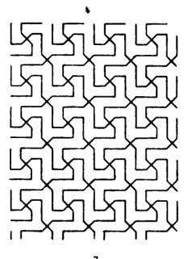
Plate 9, fig. 4 · scan leaf 408. Open the source page .
Reconstructed bent-cross grammar inspired by the source; exact channel widths and handedness are selected, not traced.
16 occurrences160 strokes73 admitted seams0 / 0 blocked / open
Construction, identities and limits 499 distinct native objects in the reusable program; 606 including sample and seam law. 45,437 JSON bytes. All are relation/placeholder objects; there are 0 numeric participants.
The joined ink graph has 1 connected components and cycle rank 9. These are graph diagnostics, not face counts or an aesthetic score. The finite patch has 23 out-of-window seam obligations. 0 repeated endpoint-pair edge participations remain explicit.
Source fidelity is an authored judgement. No image recognition or pixel comparison chose this recipe. The selected display basis is R=(1,0), U=(0,1); these coordinates are absent from the executable graph.
Native packet · Graph-derived program inspection · SVG
B11 · imported native field Returned rows of bent crosses The same two-passage motif is read through alternating identity and left/right-reflection substitutions. A two-phase row cycle, not a renderer switch, chooses the actual transform binding.
Returned rows of bent crosses Accepted stroke; occurrence 1 Accepted stroke; occurrence 1 Accepted stroke; occurrence 1 Accepted stroke; occurrence 1 Accepted stroke; occurrence 1 Accepted stroke; occurrence 1 Accepted stroke; occurrence 1 Accepted stroke; occurrence 1 Accepted stroke; occurrence 1 Accepted stroke; occurrence 1 Accepted stroke; occurrence 2 Accepted stroke; occurrence 2 Accepted stroke; occurrence 2 Accepted stroke; occurrence 2 Accepted stroke; occurrence 2 Accepted stroke; occurrence 2 Accepted stroke; occurrence 2 Accepted stroke; occurrence 2 Accepted stroke; occurrence 2 Accepted stroke; occurrence 2 Accepted stroke; occurrence 3 Accepted stroke; occurrence 3 Accepted stroke; occurrence 3 Accepted stroke; occurrence 3 Accepted stroke; occurrence 3 Accepted stroke; occurrence 3 Accepted stroke; occurrence 3 Accepted stroke; occurrence 3 Accepted stroke; occurrence 3 Accepted stroke; occurrence 3 Accepted stroke; occurrence 4 Accepted stroke; occurrence 4 Accepted stroke; occurrence 4 Accepted stroke; occurrence 4 Accepted stroke; occurrence 4 Accepted stroke; occurrence 4 Accepted stroke; occurrence 4 Accepted stroke; occurrence 4 Accepted stroke; occurrence 4 Accepted stroke; occurrence 4 Accepted stroke; occurrence 5 Accepted stroke; occurrence 5 Accepted stroke; occurrence 5 Accepted stroke; occurrence 5 Accepted stroke; occurrence 5 Accepted stroke; occurrence 5 Accepted stroke; occurrence 5 Accepted stroke; occurrence 5 Accepted stroke; occurrence 5 Accepted stroke; occurrence 5 Accepted stroke; occurrence 6 Accepted stroke; occurrence 6 Accepted stroke; occurrence 6 Accepted stroke; occurrence 6 Accepted stroke; occurrence 6 Accepted stroke; occurrence 6 Accepted stroke; occurrence 6 Accepted stroke; occurrence 6 Accepted stroke; occurrence 6 Accepted stroke; occurrence 6 Accepted stroke; occurrence 7 Accepted stroke; occurrence 7 Accepted stroke; occurrence 7 Accepted stroke; occurrence 7 Accepted stroke; occurrence 7 Accepted stroke; occurrence 7 Accepted stroke; occurrence 7 Accepted stroke; occurrence 7 Accepted stroke; occurrence 7 Accepted stroke; occurrence 7 Accepted stroke; occurrence 8 Accepted stroke; occurrence 8 Accepted stroke; occurrence 8 Accepted stroke; occurrence 8 Accepted stroke; occurrence 8 Accepted stroke; occurrence 8 Accepted stroke; occurrence 8 Accepted stroke; occurrence 8 Accepted stroke; occurrence 8 Accepted stroke; occurrence 8 Accepted stroke; occurrence 9 Accepted stroke; occurrence 9 Accepted stroke; occurrence 9 Accepted stroke; occurrence 9 Accepted stroke; occurrence 9 Accepted stroke; occurrence 9 Accepted stroke; occurrence 9 Accepted stroke; occurrence 9 Accepted stroke; occurrence 9 Accepted stroke; occurrence 9 Accepted stroke; occurrence 10 Accepted stroke; occurrence 10 Accepted stroke; occurrence 10 Accepted stroke; occurrence 10 Accepted stroke; occurrence 10 Accepted stroke; occurrence 10 Accepted stroke; occurrence 10 Accepted stroke; occurrence 10 Accepted stroke; occurrence 10 Accepted stroke; occurrence 10 Accepted stroke; occurrence 11 Accepted stroke; occurrence 11 Accepted stroke; occurrence 11 Accepted stroke; occurrence 11 Accepted stroke; occurrence 11 Accepted stroke; occurrence 11 Accepted stroke; occurrence 11 Accepted stroke; occurrence 11 Accepted stroke; occurrence 11 Accepted stroke; occurrence 11 Accepted stroke; occurrence 12 Accepted stroke; occurrence 12 Accepted stroke; occurrence 12 Accepted stroke; occurrence 12 Accepted stroke; occurrence 12 Accepted stroke; occurrence 12 Accepted stroke; occurrence 12 Accepted stroke; occurrence 12 Accepted stroke; occurrence 12 Accepted stroke; occurrence 12 Accepted stroke; occurrence 13 Accepted stroke; occurrence 13 Accepted stroke; occurrence 13 Accepted stroke; occurrence 13 Accepted stroke; occurrence 13 Accepted stroke; occurrence 13 Accepted stroke; occurrence 13 Accepted stroke; occurrence 13 Accepted stroke; occurrence 13 Accepted stroke; occurrence 13 Accepted stroke; occurrence 14 Accepted stroke; occurrence 14 Accepted stroke; occurrence 14 Accepted stroke; occurrence 14 Accepted stroke; occurrence 14 Accepted stroke; occurrence 14 Accepted stroke; occurrence 14 Accepted stroke; occurrence 14 Accepted stroke; occurrence 14 Accepted stroke; occurrence 14 Accepted stroke; occurrence 15 Accepted stroke; occurrence 15 Accepted stroke; occurrence 15 Accepted stroke; occurrence 15 Accepted stroke; occurrence 15 Accepted stroke; occurrence 15 Accepted stroke; occurrence 15 Accepted stroke; occurrence 15 Accepted stroke; occurrence 15 Accepted stroke; occurrence 15 Accepted stroke; occurrence 16 Accepted stroke; occurrence 16 Accepted stroke; occurrence 16 Accepted stroke; occurrence 16 Accepted stroke; occurrence 16 Accepted stroke; occurrence 16 Accepted stroke; occurrence 16 Accepted stroke; occurrence 16 Accepted stroke; occurrence 16 Accepted stroke; occurrence 16 Actual site with 2 stroke participations Actual site with 2 stroke participations Actual site with 2 stroke participations Actual site with 2 stroke participations Actual site with 2 stroke participations Actual site with 3 stroke participations Actual site with 2 stroke participations Actual site with 2 stroke participations Actual site with 2 stroke participations Actual site with 2 stroke participations Actual site with 4 stroke participations Actual site with 2 stroke participations Actual site with 2 stroke participations Actual site with 2 stroke participations Actual site with 2 stroke participations Actual site with 3 stroke participations Actual site with 2 stroke participations Actual site with 2 stroke participations Actual site with 2 stroke participations Actual site with 2 stroke participations Actual site with 4 stroke participations Actual site with 2 stroke participations Actual site with 2 stroke participations Actual site with 2 stroke participations Actual site with 2 stroke participations Actual site with 3 stroke participations Actual site with 2 stroke participations Actual site with 2 stroke participations Actual site with 2 stroke participations Actual site with 2 stroke participations Actual site with 4 stroke participations Actual site with 2 stroke participations Actual site with 2 stroke participations Actual site with 2 stroke participations Actual site with 2 stroke participations Actual site with 1 stroke participations Actual site with 2 stroke participations Actual site with 2 stroke participations Actual site with 2 stroke participations Actual site with 2 stroke participations Actual site with 3 stroke participations Actual site with 2 stroke participations Actual site with 2 stroke participations Actual site with 2 stroke participations Actual site with 2 stroke participations Actual site with 1 stroke participations Actual site with 2 stroke participations Actual site with 2 stroke participations Actual site with 2 stroke participations Actual site with 2 stroke participations Actual site with 3 stroke participations Actual site with 2 stroke participations Actual site with 2 stroke participations Actual site with 2 stroke participations Actual site with 2 stroke participations Actual site with 2 stroke participations Actual site with 2 stroke participations Actual site with 2 stroke participations Actual site with 2 stroke participations Actual site with 4 stroke participations Actual site with 2 stroke participations Actual site with 2 stroke participations Actual site with 2 stroke participations Actual site with 2 stroke participations Actual site with 2 stroke participations Actual site with 2 stroke participations Actual site with 2 stroke participations Actual site with 2 stroke participations Actual site with 4 stroke participations Actual site with 2 stroke participations Actual site with 2 stroke participations Actual site with 2 stroke participations Actual site with 2 stroke participations Actual site with 2 stroke participations Actual site with 2 stroke participations Actual site with 2 stroke participations Actual site with 2 stroke participations Actual site with 4 stroke participations Actual site with 2 stroke participations Actual site with 2 stroke participations Actual site with 2 stroke participations Actual site with 2 stroke participations Actual site with 2 stroke participations Actual site with 2 stroke participations Actual site with 2 stroke participations Actual site with 2 stroke participations Actual site with 4 stroke participations Actual site with 2 stroke participations Actual site with 2 stroke participations Actual site with 2 stroke participations Actual site with 2 stroke participations Actual site with 2 stroke participations Actual site with 2 stroke participations Actual site with 2 stroke participations Actual site with 2 stroke participations Actual site with 4 stroke participations Actual site with 2 stroke participations Actual site with 2 stroke participations Actual site with 2 stroke participations Actual site with 2 stroke participations Actual site with 2 stroke participations Actual site with 2 stroke participations Actual site with 2 stroke participations Actual site with 2 stroke participations Actual site with 4 stroke participations Actual site with 2 stroke participations Actual site with 2 stroke participations Actual site with 2 stroke participations Actual site with 2 stroke participations Actual site with 1 stroke participations Actual site with 2 stroke participations Actual site with 2 stroke participations Actual site with 2 stroke participations Actual site with 2 stroke participations Actual site with 3 stroke participations Actual site with 2 stroke participations Actual site with 2 stroke participations Actual site with 2 stroke participations Actual site with 2 stroke participations Actual site with 1 stroke participations Actual site with 2 stroke participations Actual site with 2 stroke participations Actual site with 2 stroke participations Actual site with 2 stroke participations Actual site with 1 stroke participations Actual site with 2 stroke participations Actual site with 2 stroke participations Actual site with 2 stroke participations Actual site with 2 stroke participations Actual site with 2 stroke participations Actual site with 2 stroke participations Actual site with 2 stroke participations Actual site with 2 stroke participations Actual site with 1 stroke participations Actual site with 2 stroke participations Actual site with 2 stroke participations Actual site with 2 stroke participations Actual site with 2 stroke participations Actual site with 2 stroke participations Actual site with 2 stroke participations Actual site with 2 stroke participations Actual site with 2 stroke participations Actual site with 1 stroke participations Actual site with 2 stroke participations Actual site with 2 stroke participations Actual site with 2 stroke participations Actual site with 2 stroke participations Actual site with 2 stroke participations Actual site with 2 stroke participations Actual site with 2 stroke participations Actual site with 2 stroke participations Actual site with 1 stroke participations Accepted native output · one optional screen realization 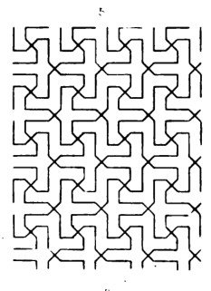
Plate 9, fig. 5 · scan leaf 408. Open the source page .
Source-inspired direct/returned conjugation experiment. Its explicit line network is an adaptation of the plate's construction rule.
16 occurrences160 strokes73 admitted seams0 / 0 blocked / open
Construction, identities and limits 510 distinct native objects in the reusable program; 969 including sample and seam law. 73,404 JSON bytes. All are relation/placeholder objects; there are 0 numeric participants.
The joined ink graph has 1 connected components and cycle rank 9. These are graph diagnostics, not face counts or an aesthetic score. The finite patch has 54 out-of-window seam obligations. 0 repeated endpoint-pair edge participations remain explicit.
Source fidelity is an authored judgement. No image recognition or pixel comparison chose this recipe. The selected display basis is R=(1,0), U=(0,1); these coordinates are absent from the executable graph.
Native packet · Graph-derived program inspection · SVG
Fourfold spiral-arm field Accepted stroke; occurrence 1 Accepted stroke; occurrence 1 Accepted stroke; occurrence 1 Accepted stroke; occurrence 1 Accepted stroke; occurrence 1 Accepted stroke; occurrence 1 Accepted stroke; occurrence 1 Accepted stroke; occurrence 1 Accepted stroke; occurrence 1 Accepted stroke; occurrence 1 Accepted stroke; occurrence 1 Accepted stroke; occurrence 1 Accepted stroke; occurrence 1 Accepted stroke; occurrence 1 Accepted stroke; occurrence 1 Accepted stroke; occurrence 1 Accepted stroke; occurrence 1 Accepted stroke; occurrence 1 Accepted stroke; occurrence 1 Accepted stroke; occurrence 1 Accepted stroke; occurrence 1 Accepted stroke; occurrence 1 Accepted stroke; occurrence 1 Accepted stroke; occurrence 1 Accepted stroke; occurrence 1 Accepted stroke; occurrence 1 Accepted stroke; occurrence 1 Accepted stroke; occurrence 1 Accepted stroke; occurrence 1 Accepted stroke; occurrence 1 Accepted stroke; occurrence 1 Accepted stroke; occurrence 1 Accepted stroke; occurrence 2 Accepted stroke; occurrence 2 Accepted stroke; occurrence 2 Accepted stroke; occurrence 2 Accepted stroke; occurrence 2 Accepted stroke; occurrence 2 Accepted stroke; occurrence 2 Accepted stroke; occurrence 2 Accepted stroke; occurrence 2 Accepted stroke; occurrence 2 Accepted stroke; occurrence 2 Accepted stroke; occurrence 2 Accepted stroke; occurrence 2 Accepted stroke; occurrence 2 Accepted stroke; occurrence 2 Accepted stroke; occurrence 2 Accepted stroke; occurrence 2 Accepted stroke; occurrence 2 Accepted stroke; occurrence 2 Accepted stroke; occurrence 2 Accepted stroke; occurrence 2 Accepted stroke; occurrence 2 Accepted stroke; occurrence 2 Accepted stroke; occurrence 2 Accepted stroke; occurrence 2 Accepted stroke; occurrence 2 Accepted stroke; occurrence 2 Accepted stroke; occurrence 2 Accepted stroke; occurrence 2 Accepted stroke; occurrence 2 Accepted stroke; occurrence 2 Accepted stroke; occurrence 2 Accepted stroke; occurrence 3 Accepted stroke; occurrence 3 Accepted stroke; occurrence 3 Accepted stroke; occurrence 3 Accepted stroke; occurrence 3 Accepted stroke; occurrence 3 Accepted stroke; occurrence 3 Accepted stroke; occurrence 3 Accepted stroke; occurrence 3 Accepted stroke; occurrence 3 Accepted stroke; occurrence 3 Accepted stroke; occurrence 3 Accepted stroke; occurrence 3 Accepted stroke; occurrence 3 Accepted stroke; occurrence 3 Accepted stroke; occurrence 3 Accepted stroke; occurrence 3 Accepted stroke; occurrence 3 Accepted stroke; occurrence 3 Accepted stroke; occurrence 3 Accepted stroke; occurrence 3 Accepted stroke; occurrence 3 Accepted stroke; occurrence 3 Accepted stroke; occurrence 3 Accepted stroke; occurrence 3 Accepted stroke; occurrence 3 Accepted stroke; occurrence 3 Accepted stroke; occurrence 3 Accepted stroke; occurrence 3 Accepted stroke; occurrence 3 Accepted stroke; occurrence 3 Accepted stroke; occurrence 3 Accepted stroke; occurrence 4 Accepted stroke; occurrence 4 Accepted stroke; occurrence 4 Accepted stroke; occurrence 4 Accepted stroke; occurrence 4 Accepted stroke; occurrence 4 Accepted stroke; occurrence 4 Accepted stroke; occurrence 4 Accepted stroke; occurrence 4 Accepted stroke; occurrence 4 Accepted stroke; occurrence 4 Accepted stroke; occurrence 4 Accepted stroke; occurrence 4 Accepted stroke; occurrence 4 Accepted stroke; occurrence 4 Accepted stroke; occurrence 4 Accepted stroke; occurrence 4 Accepted stroke; occurrence 4 Accepted stroke; occurrence 4 Accepted stroke; occurrence 4 Accepted stroke; occurrence 4 Accepted stroke; occurrence 4 Accepted stroke; occurrence 4 Accepted stroke; occurrence 4 Accepted stroke; occurrence 4 Accepted stroke; occurrence 4 Accepted stroke; occurrence 4 Accepted stroke; occurrence 4 Accepted stroke; occurrence 4 Accepted stroke; occurrence 4 Accepted stroke; occurrence 4 Accepted stroke; occurrence 4 Accepted stroke; occurrence 5 Accepted stroke; occurrence 5 Accepted stroke; occurrence 5 Accepted stroke; occurrence 5 Accepted stroke; occurrence 5 Accepted stroke; occurrence 5 Accepted stroke; occurrence 5 Accepted stroke; occurrence 5 Accepted stroke; occurrence 5 Accepted stroke; occurrence 5 Accepted stroke; occurrence 5 Accepted stroke; occurrence 5 Accepted stroke; occurrence 5 Accepted stroke; occurrence 5 Accepted stroke; occurrence 5 Accepted stroke; occurrence 5 Accepted stroke; occurrence 5 Accepted stroke; occurrence 5 Accepted stroke; occurrence 5 Accepted stroke; occurrence 5 Accepted stroke; occurrence 5 Accepted stroke; occurrence 5 Accepted stroke; occurrence 5 Accepted stroke; occurrence 5 Accepted stroke; occurrence 5 Accepted stroke; occurrence 5 Accepted stroke; occurrence 5 Accepted stroke; occurrence 5 Accepted stroke; occurrence 5 Accepted stroke; occurrence 5 Accepted stroke; occurrence 5 Accepted stroke; occurrence 5 Accepted stroke; occurrence 6 Accepted stroke; occurrence 6 Accepted stroke; occurrence 6 Accepted stroke; occurrence 6 Accepted stroke; occurrence 6 Accepted stroke; occurrence 6 Accepted stroke; occurrence 6 Accepted stroke; occurrence 6 Accepted stroke; occurrence 6 Accepted stroke; occurrence 6 Accepted stroke; occurrence 6 Accepted stroke; occurrence 6 Accepted stroke; occurrence 6 Accepted stroke; occurrence 6 Accepted stroke; occurrence 6 Accepted stroke; occurrence 6 Accepted stroke; occurrence 6 Accepted stroke; occurrence 6 Accepted stroke; occurrence 6 Accepted stroke; occurrence 6 Accepted stroke; occurrence 6 Accepted stroke; occurrence 6 Accepted stroke; occurrence 6 Accepted stroke; occurrence 6 Accepted stroke; occurrence 6 Accepted stroke; occurrence 6 Accepted stroke; occurrence 6 Accepted stroke; occurrence 6 Accepted stroke; occurrence 6 Accepted stroke; occurrence 6 Accepted stroke; occurrence 6 Accepted stroke; occurrence 6 Accepted stroke; occurrence 7 Accepted stroke; occurrence 7 Accepted stroke; occurrence 7 Accepted stroke; occurrence 7 Accepted stroke; occurrence 7 Accepted stroke; occurrence 7 Accepted stroke; occurrence 7 Accepted stroke; occurrence 7 Accepted stroke; occurrence 7 Accepted stroke; occurrence 7 Accepted stroke; occurrence 7 Accepted stroke; occurrence 7 Accepted stroke; occurrence 7 Accepted stroke; occurrence 7 Accepted stroke; occurrence 7 Accepted stroke; occurrence 7 Accepted stroke; occurrence 7 Accepted stroke; occurrence 7 Accepted stroke; occurrence 7 Accepted stroke; occurrence 7 Accepted stroke; occurrence 7 Accepted stroke; occurrence 7 Accepted stroke; occurrence 7 Accepted stroke; occurrence 7 Accepted stroke; occurrence 7 Accepted stroke; occurrence 7 Accepted stroke; occurrence 7 Accepted stroke; occurrence 7 Accepted stroke; occurrence 7 Accepted stroke; occurrence 7 Accepted stroke; occurrence 7 Accepted stroke; occurrence 7 Accepted stroke; occurrence 8 Accepted stroke; occurrence 8 Accepted stroke; occurrence 8 Accepted stroke; occurrence 8 Accepted stroke; occurrence 8 Accepted stroke; occurrence 8 Accepted stroke; occurrence 8 Accepted stroke; occurrence 8 Accepted stroke; occurrence 8 Accepted stroke; occurrence 8 Accepted stroke; occurrence 8 Accepted stroke; occurrence 8 Accepted stroke; occurrence 8 Accepted stroke; occurrence 8 Accepted stroke; occurrence 8 Accepted stroke; occurrence 8 Accepted stroke; occurrence 8 Accepted stroke; occurrence 8 Accepted stroke; occurrence 8 Accepted stroke; occurrence 8 Accepted stroke; occurrence 8 Accepted stroke; occurrence 8 Accepted stroke; occurrence 8 Accepted stroke; occurrence 8 Accepted stroke; occurrence 8 Accepted stroke; occurrence 8 Accepted stroke; occurrence 8 Accepted stroke; occurrence 8 Accepted stroke; occurrence 8 Accepted stroke; occurrence 8 Accepted stroke; occurrence 8 Accepted stroke; occurrence 8 Accepted stroke; occurrence 9 Accepted stroke; occurrence 9 Accepted stroke; occurrence 9 Accepted stroke; occurrence 9 Accepted stroke; occurrence 9 Accepted stroke; occurrence 9 Accepted stroke; occurrence 9 Accepted stroke; occurrence 9 Accepted stroke; occurrence 9 Accepted stroke; occurrence 9 Accepted stroke; occurrence 9 Accepted stroke; occurrence 9 Accepted stroke; occurrence 9 Accepted stroke; occurrence 9 Accepted stroke; occurrence 9 Accepted stroke; occurrence 9 Accepted stroke; occurrence 9 Accepted stroke; occurrence 9 Accepted stroke; occurrence 9 Accepted stroke; occurrence 9 Accepted stroke; occurrence 9 Accepted stroke; occurrence 9 Accepted stroke; occurrence 9 Accepted stroke; occurrence 9 Accepted stroke; occurrence 9 Accepted stroke; occurrence 9 Accepted stroke; occurrence 9 Accepted stroke; occurrence 9 Accepted stroke; occurrence 9 Accepted stroke; occurrence 9 Accepted stroke; occurrence 9 Accepted stroke; occurrence 9 Accepted stroke; occurrence 10 Accepted stroke; occurrence 10 Accepted stroke; occurrence 10 Accepted stroke; occurrence 10 Accepted stroke; occurrence 10 Accepted stroke; occurrence 10 Accepted stroke; occurrence 10 Accepted stroke; occurrence 10 Accepted stroke; occurrence 10 Accepted stroke; occurrence 10 Accepted stroke; occurrence 10 Accepted stroke; occurrence 10 Accepted stroke; occurrence 10 Accepted stroke; occurrence 10 Accepted stroke; occurrence 10 Accepted stroke; occurrence 10 Accepted stroke; occurrence 10 Accepted stroke; occurrence 10 Accepted stroke; occurrence 10 Accepted stroke; occurrence 10 Accepted stroke; occurrence 10 Accepted stroke; occurrence 10 Accepted stroke; occurrence 10 Accepted stroke; occurrence 10 Accepted stroke; occurrence 10 Accepted stroke; occurrence 10 Accepted stroke; occurrence 10 Accepted stroke; occurrence 10 Accepted stroke; occurrence 10 Accepted stroke; occurrence 10 Accepted stroke; occurrence 10 Accepted stroke; occurrence 10 Accepted stroke; occurrence 11 Accepted stroke; occurrence 11 Accepted stroke; occurrence 11 Accepted stroke; occurrence 11 Accepted stroke; occurrence 11 Accepted stroke; occurrence 11 Accepted stroke; occurrence 11 Accepted stroke; occurrence 11 Accepted stroke; occurrence 11 Accepted stroke; occurrence 11 Accepted stroke; occurrence 11 Accepted stroke; occurrence 11 Accepted stroke; occurrence 11 Accepted stroke; occurrence 11 Accepted stroke; occurrence 11 Accepted stroke; occurrence 11 Accepted stroke; occurrence 11 Accepted stroke; occurrence 11 Accepted stroke; occurrence 11 Accepted stroke; occurrence 11 Accepted stroke; occurrence 11 Accepted stroke; occurrence 11 Accepted stroke; occurrence 11 Accepted stroke; occurrence 11 Accepted stroke; occurrence 11 Accepted stroke; occurrence 11 Accepted stroke; occurrence 11 Accepted stroke; occurrence 11 Accepted stroke; occurrence 11 Accepted stroke; occurrence 11 Accepted stroke; occurrence 11 Accepted stroke; occurrence 11 Accepted stroke; occurrence 12 Accepted stroke; occurrence 12 Accepted stroke; occurrence 12 Accepted stroke; occurrence 12 Accepted stroke; occurrence 12 Accepted stroke; occurrence 12 Accepted stroke; occurrence 12 Accepted stroke; occurrence 12 Accepted stroke; occurrence 12 Accepted stroke; occurrence 12 Accepted stroke; occurrence 12 Accepted stroke; occurrence 12 Accepted stroke; occurrence 12 Accepted stroke; occurrence 12 Accepted stroke; occurrence 12 Accepted stroke; occurrence 12 Accepted stroke; occurrence 12 Accepted stroke; occurrence 12 Accepted stroke; occurrence 12 Accepted stroke; occurrence 12 Accepted stroke; occurrence 12 Accepted stroke; occurrence 12 Accepted stroke; occurrence 12 Accepted stroke; occurrence 12 Accepted stroke; occurrence 12 Accepted stroke; occurrence 12 Accepted stroke; occurrence 12 Accepted stroke; occurrence 12 Accepted stroke; occurrence 12 Accepted stroke; occurrence 12 Accepted stroke; occurrence 12 Accepted stroke; occurrence 12 Accepted stroke; occurrence 13 Accepted stroke; occurrence 13 Accepted stroke; occurrence 13 Accepted stroke; occurrence 13 Accepted stroke; occurrence 13 Accepted stroke; occurrence 13 Accepted stroke; occurrence 13 Accepted stroke; occurrence 13 Accepted stroke; occurrence 13 Accepted stroke; occurrence 13 Accepted stroke; occurrence 13 Accepted stroke; occurrence 13 Accepted stroke; occurrence 13 Accepted stroke; occurrence 13 Accepted stroke; occurrence 13 Accepted stroke; occurrence 13 Accepted stroke; occurrence 13 Accepted stroke; occurrence 13 Accepted stroke; occurrence 13 Accepted stroke; occurrence 13 Accepted stroke; occurrence 13 Accepted stroke; occurrence 13 Accepted stroke; occurrence 13 Accepted stroke; occurrence 13 Accepted stroke; occurrence 13 Accepted stroke; occurrence 13 Accepted stroke; occurrence 13 Accepted stroke; occurrence 13 Accepted stroke; occurrence 13 Accepted stroke; occurrence 13 Accepted stroke; occurrence 13 Accepted stroke; occurrence 13 Accepted stroke; occurrence 14 Accepted stroke; occurrence 14 Accepted stroke; occurrence 14 Accepted stroke; occurrence 14 Accepted stroke; occurrence 14 Accepted stroke; occurrence 14 Accepted stroke; occurrence 14 Accepted stroke; occurrence 14 Accepted stroke; occurrence 14 Accepted stroke; occurrence 14 Accepted stroke; occurrence 14 Accepted stroke; occurrence 14 Accepted stroke; occurrence 14 Accepted stroke; occurrence 14 Accepted stroke; occurrence 14 Accepted stroke; occurrence 14 Accepted stroke; occurrence 14 Accepted stroke; occurrence 14 Accepted stroke; occurrence 14 Accepted stroke; occurrence 14 Accepted stroke; occurrence 14 Accepted stroke; occurrence 14 Accepted stroke; occurrence 14 Accepted stroke; occurrence 14 Accepted stroke; occurrence 14 Accepted stroke; occurrence 14 Accepted stroke; occurrence 14 Accepted stroke; occurrence 14 Accepted stroke; occurrence 14 Accepted stroke; occurrence 14 Accepted stroke; occurrence 14 Accepted stroke; occurrence 14 Accepted stroke; occurrence 15 Accepted stroke; occurrence 15 Accepted stroke; occurrence 15 Accepted stroke; occurrence 15 Accepted stroke; occurrence 15 Accepted stroke; occurrence 15 Accepted stroke; occurrence 15 Accepted stroke; occurrence 15 Accepted stroke; occurrence 15 Accepted stroke; occurrence 15 Accepted stroke; occurrence 15 Accepted stroke; occurrence 15 Accepted stroke; occurrence 15 Accepted stroke; occurrence 15 Accepted stroke; occurrence 15 Accepted stroke; occurrence 15 Accepted stroke; occurrence 15 Accepted stroke; occurrence 15 Accepted stroke; occurrence 15 Accepted stroke; occurrence 15 Accepted stroke; occurrence 15 Accepted stroke; occurrence 15 Accepted stroke; occurrence 15 Accepted stroke; occurrence 15 Accepted stroke; occurrence 15 Accepted stroke; occurrence 15 Accepted stroke; occurrence 15 Accepted stroke; occurrence 15 Accepted stroke; occurrence 15 Accepted stroke; occurrence 15 Accepted stroke; occurrence 15 Accepted stroke; occurrence 15 Accepted stroke; occurrence 16 Accepted stroke; occurrence 16 Accepted stroke; occurrence 16 Accepted stroke; occurrence 16 Accepted stroke; occurrence 16 Accepted stroke; occurrence 16 Accepted stroke; occurrence 16 Accepted stroke; occurrence 16 Accepted stroke; occurrence 16 Accepted stroke; occurrence 16 Accepted stroke; occurrence 16 Accepted stroke; occurrence 16 Accepted stroke; occurrence 16 Accepted stroke; occurrence 16 Accepted stroke; occurrence 16 Accepted stroke; occurrence 16 Accepted stroke; occurrence 16 Accepted stroke; occurrence 16 Accepted stroke; occurrence 16 Accepted stroke; occurrence 16 Accepted stroke; occurrence 16 Accepted stroke; occurrence 16 Accepted stroke; occurrence 16 Accepted stroke; occurrence 16 Accepted stroke; occurrence 16 Accepted stroke; occurrence 16 Accepted stroke; occurrence 16 Accepted stroke; occurrence 16 Accepted stroke; occurrence 16 Accepted stroke; occurrence 16 Accepted stroke; occurrence 16 Accepted stroke; occurrence 16 Actual site with 1 stroke participations Actual site with 2 stroke participations Actual site with 2 stroke participations Actual site with 2 stroke participations Actual site with 2 stroke participations Actual site with 2 stroke participations Actual site with 2 stroke participations Actual site with 2 stroke participations Actual site with 1 stroke participations Actual site with 1 stroke participations Actual site with 2 stroke participations Actual site with 2 stroke participations Actual site with 2 stroke participations Actual site with 2 stroke participations Actual site with 2 stroke participations Actual site with 2 stroke participations Actual site with 2 stroke participations Actual site with 1 stroke participations Actual site with 2 stroke participations Actual site with 2 stroke participations Actual site with 2 stroke participations Actual site with 2 stroke participations Actual site with 2 stroke participations Actual site with 2 stroke participations Actual site with 2 stroke participations Actual site with 2 stroke participations Actual site with 1 stroke participations Actual site with 2 stroke participations Actual site with 2 stroke participations Actual site with 2 stroke participations Actual site with 2 stroke participations Actual site with 2 stroke participations Actual site with 2 stroke participations Actual site with 2 stroke participations Actual site with 2 stroke participations Actual site with 1 stroke participations Actual site with 2 stroke participations Actual site with 2 stroke participations Actual site with 2 stroke participations Actual site with 2 stroke participations Actual site with 2 stroke participations Actual site with 2 stroke participations Actual site with 2 stroke participations Actual site with 1 stroke participations Actual site with 1 stroke participations Actual site with 2 stroke participations Actual site with 2 stroke participations Actual site with 2 stroke participations Actual site with 2 stroke participations Actual site with 2 stroke participations Actual site with 2 stroke participations Actual site with 2 stroke participations Actual site with 1 stroke participations Actual site with 2 stroke participations Actual site with 2 stroke participations Actual site with 2 stroke participations Actual site with 2 stroke participations Actual site with 2 stroke participations Actual site with 2 stroke participations Actual site with 2 stroke participations Actual site with 2 stroke participations Actual site with 1 stroke participations Actual site with 2 stroke participations Actual site with 2 stroke participations Actual site with 2 stroke participations Actual site with 2 stroke participations Actual site with 2 stroke participations Actual site with 2 stroke participations Actual site with 2 stroke participations Actual site with 2 stroke participations Actual site with 1 stroke participations Actual site with 2 stroke participations Actual site with 2 stroke participations Actual site with 2 stroke participations Actual site with 2 stroke participations Actual site with 2 stroke participations Actual site with 2 stroke participations Actual site with 2 stroke participations Actual site with 1 stroke participations Actual site with 1 stroke participations Actual site with 2 stroke participations Actual site with 2 stroke participations Actual site with 2 stroke participations Actual site with 2 stroke participations Actual site with 2 stroke participations Actual site with 2 stroke participations Actual site with 2 stroke participations Actual site with 1 stroke participations Actual site with 2 stroke participations Actual site with 2 stroke participations Actual site with 2 stroke participations Actual site with 2 stroke participations Actual site with 2 stroke participations Actual site with 2 stroke participations Actual site with 2 stroke participations Actual site with 2 stroke participations Actual site with 1 stroke participations Actual site with 2 stroke participations Actual site with 2 stroke participations Actual site with 2 stroke participations Actual site with 2 stroke participations Actual site with 2 stroke participations Actual site with 2 stroke participations Actual site with 2 stroke participations Actual site with 2 stroke participations Actual site with 1 stroke participations Actual site with 2 stroke participations Actual site with 2 stroke participations Actual site with 2 stroke participations Actual site with 2 stroke participations Actual site with 2 stroke participations Actual site with 2 stroke participations Actual site with 2 stroke participations Actual site with 1 stroke participations Actual site with 1 stroke participations Actual site with 2 stroke participations Actual site with 2 stroke participations Actual site with 2 stroke participations Actual site with 2 stroke participations Actual site with 2 stroke participations Actual site with 2 stroke participations Actual site with 2 stroke participations Actual site with 1 stroke participations Actual site with 1 stroke participations Actual site with 2 stroke participations Actual site with 2 stroke participations Actual site with 2 stroke participations Actual site with 2 stroke participations Actual site with 2 stroke participations Actual site with 2 stroke participations Actual site with 2 stroke participations Actual site with 1 stroke participations Actual site with 2 stroke participations Actual site with 2 stroke participations Actual site with 2 stroke participations Actual site with 2 stroke participations Actual site with 2 stroke participations Actual site with 2 stroke participations Actual site with 2 stroke participations Actual site with 2 stroke participations Actual site with 1 stroke participations Actual site with 1 stroke participations Actual site with 2 stroke participations Actual site with 2 stroke participations Actual site with 2 stroke participations Actual site with 2 stroke participations Actual site with 2 stroke participations Actual site with 2 stroke participations Actual site with 2 stroke participations Actual site with 1 stroke participations Actual site with 2 stroke participations Actual site with 2 stroke participations Actual site with 2 stroke participations Actual site with 2 stroke participations Actual site with 2 stroke participations Actual site with 2 stroke participations Actual site with 2 stroke participations Actual site with 1 stroke participations Actual site with 2 stroke participations Actual site with 2 stroke participations Actual site with 2 stroke participations Actual site with 2 stroke participations Actual site with 2 stroke participations Actual site with 2 stroke participations Actual site with 2 stroke participations Actual site with 2 stroke participations Actual site with 1 stroke participations Actual site with 2 stroke participations Actual site with 2 stroke participations Actual site with 2 stroke participations Actual site with 2 stroke participations Actual site with 2 stroke participations Actual site with 2 stroke participations Actual site with 2 stroke participations Actual site with 2 stroke participations Actual site with 1 stroke participations Actual site with 2 stroke participations Actual site with 2 stroke participations Actual site with 2 stroke participations Actual site with 2 stroke participations Actual site with 2 stroke participations Actual site with 2 stroke participations Actual site with 2 stroke participations Actual site with 1 stroke participations Actual site with 2 stroke participations Actual site with 2 stroke participations Actual site with 2 stroke participations Actual site with 2 stroke participations Actual site with 2 stroke participations Actual site with 2 stroke participations Actual site with 2 stroke participations Actual site with 1 stroke participations Actual site with 2 stroke participations Actual site with 2 stroke participations Actual site with 2 stroke participations Actual site with 2 stroke participations Actual site with 2 stroke participations Actual site with 2 stroke participations Actual site with 2 stroke participations Actual site with 2 stroke participations Actual site with 1 stroke participations Actual site with 2 stroke participations Actual site with 2 stroke participations Actual site with 2 stroke participations Actual site with 2 stroke participations Actual site with 2 stroke participations Actual site with 2 stroke participations Actual site with 2 stroke participations Actual site with 2 stroke participations Actual site with 1 stroke participations Actual site with 2 stroke participations Actual site with 2 stroke participations Actual site with 2 stroke participations Actual site with 2 stroke participations Actual site with 2 stroke participations Actual site with 2 stroke participations Actual site with 2 stroke participations Actual site with 1 stroke participations Actual site with 2 stroke participations Actual site with 2 stroke participations Actual site with 2 stroke participations Actual site with 2 stroke participations Actual site with 2 stroke participations Actual site with 2 stroke participations Actual site with 2 stroke participations Actual site with 1 stroke participations Actual site with 2 stroke participations Actual site with 2 stroke participations Actual site with 2 stroke participations Actual site with 2 stroke participations Actual site with 2 stroke participations Actual site with 2 stroke participations Actual site with 2 stroke participations Actual site with 2 stroke participations Actual site with 1 stroke participations Actual site with 2 stroke participations Actual site with 2 stroke participations Actual site with 2 stroke participations Actual site with 2 stroke participations Actual site with 2 stroke participations Actual site with 2 stroke participations Actual site with 2 stroke participations Actual site with 2 stroke participations Actual site with 1 stroke participations Actual site with 2 stroke participations Actual site with 2 stroke participations Actual site with 2 stroke participations Actual site with 2 stroke participations Actual site with 2 stroke participations Actual site with 2 stroke participations Actual site with 2 stroke participations Actual site with 1 stroke participations Actual site with 2 stroke participations Actual site with 2 stroke participations Actual site with 2 stroke participations Actual site with 2 stroke participations Actual site with 2 stroke participations Actual site with 2 stroke participations Actual site with 2 stroke participations Actual site with 1 stroke participations Actual site with 1 stroke participations Actual site with 2 stroke participations Actual site with 2 stroke participations Actual site with 2 stroke participations Actual site with 2 stroke participations Actual site with 2 stroke participations Actual site with 2 stroke participations Actual site with 2 stroke participations Actual site with 1 stroke participations Actual site with 2 stroke participations Actual site with 2 stroke participations Actual site with 2 stroke participations Actual site with 2 stroke participations Actual site with 2 stroke participations Actual site with 2 stroke participations Actual site with 2 stroke participations Actual site with 2 stroke participations Actual site with 1 stroke participations Actual site with 1 stroke participations Actual site with 2 stroke participations Actual site with 2 stroke participations Actual site with 2 stroke participations Actual site with 2 stroke participations Actual site with 2 stroke participations Actual site with 2 stroke participations Actual site with 2 stroke participations Actual site with 1 stroke participations Actual site with 2 stroke participations Actual site with 2 stroke participations Actual site with 2 stroke participations Actual site with 2 stroke participations Actual site with 2 stroke participations Actual site with 2 stroke participations Actual site with 2 stroke participations Actual site with 1 stroke participations Actual site with 2 stroke participations Actual site with 2 stroke participations Actual site with 2 stroke participations Actual site with 2 stroke participations Actual site with 2 stroke participations Actual site with 2 stroke participations Actual site with 2 stroke participations Actual site with 2 stroke participations Actual site with 1 stroke participations Actual site with 2 stroke participations Actual site with 2 stroke participations Actual site with 2 stroke participations Actual site with 2 stroke participations Actual site with 2 stroke participations Actual site with 2 stroke participations Actual site with 2 stroke participations Actual site with 2 stroke participations Actual site with 1 stroke participations Actual site with 2 stroke participations Actual site with 2 stroke participations Actual site with 2 stroke participations Actual site with 2 stroke participations Actual site with 2 stroke participations Actual site with 2 stroke participations Actual site with 2 stroke participations Actual site with 1 stroke participations Actual site with 2 stroke participations Actual site with 2 stroke participations Actual site with 2 stroke participations Actual site with 2 stroke participations Actual site with 2 stroke participations Actual site with 2 stroke participations Actual site with 2 stroke participations Actual site with 1 stroke participations Actual site with 2 stroke participations Actual site with 2 stroke participations Actual site with 2 stroke participations Actual site with 2 stroke participations Actual site with 2 stroke participations Actual site with 2 stroke participations Actual site with 2 stroke participations Actual site with 2 stroke participations Actual site with 1 stroke participations Actual site with 2 stroke participations Actual site with 2 stroke participations Actual site with 2 stroke participations Actual site with 2 stroke participations Actual site with 2 stroke participations Actual site with 2 stroke participations Actual site with 2 stroke participations Actual site with 2 stroke participations Actual site with 1 stroke participations Actual site with 2 stroke participations Actual site with 2 stroke participations Actual site with 2 stroke participations Actual site with 2 stroke participations Actual site with 2 stroke participations Actual site with 2 stroke participations Actual site with 2 stroke participations Actual site with 1 stroke participations Actual site with 2 stroke participations Actual site with 2 stroke participations Actual site with 2 stroke participations Actual site with 2 stroke participations Actual site with 2 stroke participations Actual site with 2 stroke participations Actual site with 2 stroke participations Actual site with 1 stroke participations Actual site with 2 stroke participations Actual site with 2 stroke participations Actual site with 2 stroke participations Actual site with 2 stroke participations Actual site with 2 stroke participations Actual site with 2 stroke participations Actual site with 2 stroke participations Actual site with 2 stroke participations Actual site with 1 stroke participations Actual site with 2 stroke participations Actual site with 2 stroke participations Actual site with 2 stroke participations Actual site with 2 stroke participations Actual site with 2 stroke participations Actual site with 2 stroke participations Actual site with 2 stroke participations Actual site with 2 stroke participations Actual site with 1 stroke participations Actual site with 2 stroke participations Actual site with 2 stroke participations Actual site with 2 stroke participations Actual site with 2 stroke participations Actual site with 2 stroke participations Actual site with 2 stroke participations Actual site with 2 stroke participations Actual site with 1 stroke participations Actual site with 2 stroke participations Actual site with 2 stroke participations Actual site with 2 stroke participations Actual site with 2 stroke participations Actual site with 2 stroke participations Actual site with 2 stroke participations Actual site with 2 stroke participations Actual site with 1 stroke participations Actual site with 1 stroke participations Actual site with 2 stroke participations Actual site with 2 stroke participations Actual site with 2 stroke participations Actual site with 2 stroke participations Actual site with 2 stroke participations Actual site with 2 stroke participations Actual site with 2 stroke participations Actual site with 1 stroke participations Actual site with 2 stroke participations Actual site with 2 stroke participations Actual site with 2 stroke participations Actual site with 2 stroke participations Actual site with 2 stroke participations Actual site with 2 stroke participations Actual site with 2 stroke participations Actual site with 2 stroke participations Actual site with 1 stroke participations Actual site with 1 stroke participations Actual site with 2 stroke participations Actual site with 2 stroke participations Actual site with 2 stroke participations Actual site with 2 stroke participations Actual site with 2 stroke participations Actual site with 2 stroke participations Actual site with 2 stroke participations Actual site with 1 stroke participations Actual site with 2 stroke participations Actual site with 2 stroke participations Actual site with 2 stroke participations Actual site with 2 stroke participations Actual site with 2 stroke participations Actual site with 2 stroke participations Actual site with 2 stroke participations Actual site with 1 stroke participations Actual site with 2 stroke participations Actual site with 2 stroke participations Actual site with 2 stroke participations Actual site with 2 stroke participations Actual site with 2 stroke participations Actual site with 2 stroke participations Actual site with 2 stroke participations Actual site with 2 stroke participations Actual site with 1 stroke participations Actual site with 1 stroke participations Actual site with 2 stroke participations Actual site with 2 stroke participations Actual site with 2 stroke participations Actual site with 2 stroke participations Actual site with 2 stroke participations Actual site with 2 stroke participations Actual site with 2 stroke participations Actual site with 1 stroke participations Actual site with 2 stroke participations Actual site with 2 stroke participations Actual site with 2 stroke participations Actual site with 2 stroke participations Actual site with 2 stroke participations Actual site with 2 stroke participations Actual site with 2 stroke participations Actual site with 1 stroke participations Actual site with 2 stroke participations Actual site with 2 stroke participations Actual site with 2 stroke participations Actual site with 2 stroke participations Actual site with 2 stroke participations Actual site with 2 stroke participations Actual site with 2 stroke participations Actual site with 1 stroke participations Actual site with 2 stroke participations Actual site with 2 stroke participations Actual site with 2 stroke participations Actual site with 2 stroke participations Actual site with 2 stroke participations Actual site with 2 stroke participations Actual site with 2 stroke participations Actual site with 2 stroke participations Actual site with 1 stroke participations Actual site with 1 stroke participations Actual site with 2 stroke participations Actual site with 2 stroke participations Actual site with 2 stroke participations Actual site with 2 stroke participations Actual site with 2 stroke participations Actual site with 2 stroke participations Actual site with 2 stroke participations Actual site with 1 stroke participations Actual site with 2 stroke participations Actual site with 2 stroke participations Actual site with 2 stroke participations Actual site with 2 stroke participations Actual site with 2 stroke participations Actual site with 2 stroke participations Actual site with 2 stroke participations Actual site with 1 stroke participations Actual site with 2 stroke participations Actual site with 2 stroke participations Actual site with 2 stroke participations Actual site with 2 stroke participations Actual site with 2 stroke participations Actual site with 2 stroke participations Actual site with 2 stroke participations Actual site with 1 stroke participations Actual site with 2 stroke participations Actual site with 2 stroke participations Actual site with 2 stroke participations Actual site with 2 stroke participations Actual site with 2 stroke participations Actual site with 2 stroke participations Actual site with 2 stroke participations Actual site with 2 stroke participations Actual site with 1 stroke participations Actual site with 1 stroke participations Actual site with 2 stroke participations Actual site with 2 stroke participations Actual site with 2 stroke participations Actual site with 2 stroke participations Actual site with 2 stroke participations Actual site with 2 stroke participations Actual site with 2 stroke participations Actual site with 1 stroke participations Actual site with 2 stroke participations Actual site with 2 stroke participations Actual site with 2 stroke participations Actual site with 2 stroke participations Actual site with 2 stroke participations Actual site with 2 stroke participations Actual site with 2 stroke participations Actual site with 1 stroke participations Actual site with 2 stroke participations Actual site with 2 stroke participations Actual site with 2 stroke participations Actual site with 2 stroke participations Actual site with 2 stroke participations Actual site with 2 stroke participations Actual site with 2 stroke participations Actual site with 1 stroke participations Actual site with 1 stroke participations Actual site with 2 stroke participations Actual site with 2 stroke participations Actual site with 2 stroke participations Actual site with 2 stroke participations Actual site with 2 stroke participations Actual site with 2 stroke participations Actual site with 2 stroke participations Actual site with 1 stroke participations Actual site with 1 stroke participations Actual site with 2 stroke participations Actual site with 2 stroke participations Actual site with 2 stroke participations Actual site with 2 stroke participations Actual site with 2 stroke participations Actual site with 2 stroke participations Actual site with 2 stroke participations Actual site with 1 stroke participations Accepted native output · one optional screen realization 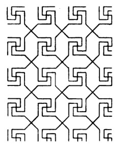
Plate 9, fig. 10 · scan leaf 408. Open the source page .
Source-inspired spiral-arm reconstruction. The source's star compartments and exact line continuations are not claimed to be reproduced completely.
16 occurrences512 strokes24 admitted seams0 / 0 blocked / open
Construction, identities and limits 4,354 distinct native objects in the reusable program; 4,417 including sample and seam law. 344,093 JSON bytes. All are relation/placeholder objects; there are 0 numeric participants.
The joined ink graph has 40 connected components and cycle rank 0. These are graph diagnostics, not face counts or an aesthetic score. The finite patch has 8 out-of-window seam obligations. 0 repeated endpoint-pair edge participations remain explicit.
Source fidelity is an authored judgement. No image recognition or pixel comparison chose this recipe. The selected display basis is R=(1,0), U=(0,1); these coordinates are absent from the executable graph.
Native packet · Graph-derived program inspection · SVG
B13 · imported native field Four-part revolved key scaffold One nested inward/outward key quarter is substituted around a common reference, then closed into a four-part contour. Parallel return channels preserve the key turns; repeated macrocells communicate through actual exposed corners.
Four-part revolved key scaffold Accepted stroke; occurrence 1 Accepted stroke; occurrence 1 Accepted stroke; occurrence 1 Accepted stroke; occurrence 1 Accepted stroke; occurrence 1 Accepted stroke; occurrence 1 Accepted stroke; occurrence 1 Accepted stroke; occurrence 1 Accepted stroke; occurrence 1 Accepted stroke; occurrence 1 Accepted stroke; occurrence 1 Accepted stroke; occurrence 1 Accepted stroke; occurrence 1 Accepted stroke; occurrence 1 Accepted stroke; occurrence 1 Accepted stroke; occurrence 1 Accepted stroke; occurrence 1 Accepted stroke; occurrence 1 Accepted stroke; occurrence 1 Accepted stroke; occurrence 1 Accepted stroke; occurrence 1 Accepted stroke; occurrence 1 Accepted stroke; occurrence 1 Accepted stroke; occurrence 1 Accepted stroke; occurrence 1 Accepted stroke; occurrence 1 Accepted stroke; occurrence 1 Accepted stroke; occurrence 1 Accepted stroke; occurrence 1 Accepted stroke; occurrence 1 Accepted stroke; occurrence 1 Accepted stroke; occurrence 1 Accepted stroke; occurrence 1 Accepted stroke; occurrence 1 Accepted stroke; occurrence 1 Accepted stroke; occurrence 1 Accepted stroke; occurrence 1 Accepted stroke; occurrence 1 Accepted stroke; occurrence 1 Accepted stroke; occurrence 1 Accepted stroke; occurrence 1 Accepted stroke; occurrence 1 Accepted stroke; occurrence 1 Accepted stroke; occurrence 1 Accepted stroke; occurrence 1 Accepted stroke; occurrence 1 Accepted stroke; occurrence 1 Accepted stroke; occurrence 1 Accepted stroke; occurrence 1 Accepted stroke; occurrence 1 Accepted stroke; occurrence 1 Accepted stroke; occurrence 1 Accepted stroke; occurrence 1 Accepted stroke; occurrence 1 Accepted stroke; occurrence 1 Accepted stroke; occurrence 1 Accepted stroke; occurrence 1 Accepted stroke; occurrence 1 Accepted stroke; occurrence 1 Accepted stroke; occurrence 1 Accepted stroke; occurrence 1 Accepted stroke; occurrence 1 Accepted stroke; occurrence 1 Accepted stroke; occurrence 1 Accepted stroke; occurrence 2 Accepted stroke; occurrence 2 Accepted stroke; occurrence 2 Accepted stroke; occurrence 2 Accepted stroke; occurrence 2 Accepted stroke; occurrence 2 Accepted stroke; occurrence 2 Accepted stroke; occurrence 2 Accepted stroke; occurrence 2 Accepted stroke; occurrence 2 Accepted stroke; occurrence 2 Accepted stroke; occurrence 2 Accepted stroke; occurrence 2 Accepted stroke; occurrence 2 Accepted stroke; occurrence 2 Accepted stroke; occurrence 2 Accepted stroke; occurrence 2 Accepted stroke; occurrence 2 Accepted stroke; occurrence 2 Accepted stroke; occurrence 2 Accepted stroke; occurrence 2 Accepted stroke; occurrence 2 Accepted stroke; occurrence 2 Accepted stroke; occurrence 2 Accepted stroke; occurrence 2 Accepted stroke; occurrence 2 Accepted stroke; occurrence 2 Accepted stroke; occurrence 2 Accepted stroke; occurrence 2 Accepted stroke; occurrence 2 Accepted stroke; occurrence 2 Accepted stroke; occurrence 2 Accepted stroke; occurrence 2 Accepted stroke; occurrence 2 Accepted stroke; occurrence 2 Accepted stroke; occurrence 2 Accepted stroke; occurrence 2 Accepted stroke; occurrence 2 Accepted stroke; occurrence 2 Accepted stroke; occurrence 2 Accepted stroke; occurrence 2 Accepted stroke; occurrence 2 Accepted stroke; occurrence 2 Accepted stroke; occurrence 2 Accepted stroke; occurrence 2 Accepted stroke; occurrence 2 Accepted stroke; occurrence 2 Accepted stroke; occurrence 2 Accepted stroke; occurrence 2 Accepted stroke; occurrence 2 Accepted stroke; occurrence 2 Accepted stroke; occurrence 2 Accepted stroke; occurrence 2 Accepted stroke; occurrence 2 Accepted stroke; occurrence 2 Accepted stroke; occurrence 2 Accepted stroke; occurrence 2 Accepted stroke; occurrence 2 Accepted stroke; occurrence 2 Accepted stroke; occurrence 2 Accepted stroke; occurrence 2 Accepted stroke; occurrence 2 Accepted stroke; occurrence 2 Accepted stroke; occurrence 2 Accepted stroke; occurrence 3 Accepted stroke; occurrence 3 Accepted stroke; occurrence 3 Accepted stroke; occurrence 3 Accepted stroke; occurrence 3 Accepted stroke; occurrence 3 Accepted stroke; occurrence 3 Accepted stroke; occurrence 3 Accepted stroke; occurrence 3 Accepted stroke; occurrence 3 Accepted stroke; occurrence 3 Accepted stroke; occurrence 3 Accepted stroke; occurrence 3 Accepted stroke; occurrence 3 Accepted stroke; occurrence 3 Accepted stroke; occurrence 3 Accepted stroke; occurrence 3 Accepted stroke; occurrence 3 Accepted stroke; occurrence 3 Accepted stroke; occurrence 3 Accepted stroke; occurrence 3 Accepted stroke; occurrence 3 Accepted stroke; occurrence 3 Accepted stroke; occurrence 3 Accepted stroke; occurrence 3 Accepted stroke; occurrence 3 Accepted stroke; occurrence 3 Accepted stroke; occurrence 3 Accepted stroke; occurrence 3 Accepted stroke; occurrence 3 Accepted stroke; occurrence 3 Accepted stroke; occurrence 3 Accepted stroke; occurrence 3 Accepted stroke; occurrence 3 Accepted stroke; occurrence 3 Accepted stroke; occurrence 3 Accepted stroke; occurrence 3 Accepted stroke; occurrence 3 Accepted stroke; occurrence 3 Accepted stroke; occurrence 3 Accepted stroke; occurrence 3 Accepted stroke; occurrence 3 Accepted stroke; occurrence 3 Accepted stroke; occurrence 3 Accepted stroke; occurrence 3 Accepted stroke; occurrence 3 Accepted stroke; occurrence 3 Accepted stroke; occurrence 3 Accepted stroke; occurrence 3 Accepted stroke; occurrence 3 Accepted stroke; occurrence 3 Accepted stroke; occurrence 3 Accepted stroke; occurrence 3 Accepted stroke; occurrence 3 Accepted stroke; occurrence 3 Accepted stroke; occurrence 3 Accepted stroke; occurrence 3 Accepted stroke; occurrence 3 Accepted stroke; occurrence 3 Accepted stroke; occurrence 3 Accepted stroke; occurrence 3 Accepted stroke; occurrence 3 Accepted stroke; occurrence 3 Accepted stroke; occurrence 3 Accepted stroke; occurrence 4 Accepted stroke; occurrence 4 Accepted stroke; occurrence 4 Accepted stroke; occurrence 4 Accepted stroke; occurrence 4 Accepted stroke; occurrence 4 Accepted stroke; occurrence 4 Accepted stroke; occurrence 4 Accepted stroke; occurrence 4 Accepted stroke; occurrence 4 Accepted stroke; occurrence 4 Accepted stroke; occurrence 4 Accepted stroke; occurrence 4 Accepted stroke; occurrence 4 Accepted stroke; occurrence 4 Accepted stroke; occurrence 4 Accepted stroke; occurrence 4 Accepted stroke; occurrence 4 Accepted stroke; occurrence 4 Accepted stroke; occurrence 4 Accepted stroke; occurrence 4 Accepted stroke; occurrence 4 Accepted stroke; occurrence 4 Accepted stroke; occurrence 4 Accepted stroke; occurrence 4 Accepted stroke; occurrence 4 Accepted stroke; occurrence 4 Accepted stroke; occurrence 4 Accepted stroke; occurrence 4 Accepted stroke; occurrence 4 Accepted stroke; occurrence 4 Accepted stroke; occurrence 4 Accepted stroke; occurrence 4 Accepted stroke; occurrence 4 Accepted stroke; occurrence 4 Accepted stroke; occurrence 4 Accepted stroke; occurrence 4 Accepted stroke; occurrence 4 Accepted stroke; occurrence 4 Accepted stroke; occurrence 4 Accepted stroke; occurrence 4 Accepted stroke; occurrence 4 Accepted stroke; occurrence 4 Accepted stroke; occurrence 4 Accepted stroke; occurrence 4 Accepted stroke; occurrence 4 Accepted stroke; occurrence 4 Accepted stroke; occurrence 4 Accepted stroke; occurrence 4 Accepted stroke; occurrence 4 Accepted stroke; occurrence 4 Accepted stroke; occurrence 4 Accepted stroke; occurrence 4 Accepted stroke; occurrence 4 Accepted stroke; occurrence 4 Accepted stroke; occurrence 4 Accepted stroke; occurrence 4 Accepted stroke; occurrence 4 Accepted stroke; occurrence 4 Accepted stroke; occurrence 4 Accepted stroke; occurrence 4 Accepted stroke; occurrence 4 Accepted stroke; occurrence 4 Accepted stroke; occurrence 4 Accepted stroke; occurrence 5 Accepted stroke; occurrence 5 Accepted stroke; occurrence 5 Accepted stroke; occurrence 5 Accepted stroke; occurrence 5 Accepted stroke; occurrence 5 Accepted stroke; occurrence 5 Accepted stroke; occurrence 5 Accepted stroke; occurrence 5 Accepted stroke; occurrence 5 Accepted stroke; occurrence 5 Accepted stroke; occurrence 5 Accepted stroke; occurrence 5 Accepted stroke; occurrence 5 Accepted stroke; occurrence 5 Accepted stroke; occurrence 5 Accepted stroke; occurrence 5 Accepted stroke; occurrence 5 Accepted stroke; occurrence 5 Accepted stroke; occurrence 5 Accepted stroke; occurrence 5 Accepted stroke; occurrence 5 Accepted stroke; occurrence 5 Accepted stroke; occurrence 5 Accepted stroke; occurrence 5 Accepted stroke; occurrence 5 Accepted stroke; occurrence 5 Accepted stroke; occurrence 5 Accepted stroke; occurrence 5 Accepted stroke; occurrence 5 Accepted stroke; occurrence 5 Accepted stroke; occurrence 5 Accepted stroke; occurrence 5 Accepted stroke; occurrence 5 Accepted stroke; occurrence 5 Accepted stroke; occurrence 5 Accepted stroke; occurrence 5 Accepted stroke; occurrence 5 Accepted stroke; occurrence 5 Accepted stroke; occurrence 5 Accepted stroke; occurrence 5 Accepted stroke; occurrence 5 Accepted stroke; occurrence 5 Accepted stroke; occurrence 5 Accepted stroke; occurrence 5 Accepted stroke; occurrence 5 Accepted stroke; occurrence 5 Accepted stroke; occurrence 5 Accepted stroke; occurrence 5 Accepted stroke; occurrence 5 Accepted stroke; occurrence 5 Accepted stroke; occurrence 5 Accepted stroke; occurrence 5 Accepted stroke; occurrence 5 Accepted stroke; occurrence 5 Accepted stroke; occurrence 5 Accepted stroke; occurrence 5 Accepted stroke; occurrence 5 Accepted stroke; occurrence 5 Accepted stroke; occurrence 5 Accepted stroke; occurrence 5 Accepted stroke; occurrence 5 Accepted stroke; occurrence 5 Accepted stroke; occurrence 5 Accepted stroke; occurrence 6 Accepted stroke; occurrence 6 Accepted stroke; occurrence 6 Accepted stroke; occurrence 6 Accepted stroke; occurrence 6 Accepted stroke; occurrence 6 Accepted stroke; occurrence 6 Accepted stroke; occurrence 6 Accepted stroke; occurrence 6 Accepted stroke; occurrence 6 Accepted stroke; occurrence 6 Accepted stroke; occurrence 6 Accepted stroke; occurrence 6 Accepted stroke; occurrence 6 Accepted stroke; occurrence 6 Accepted stroke; occurrence 6 Accepted stroke; occurrence 6 Accepted stroke; occurrence 6 Accepted stroke; occurrence 6 Accepted stroke; occurrence 6 Accepted stroke; occurrence 6 Accepted stroke; occurrence 6 Accepted stroke; occurrence 6 Accepted stroke; occurrence 6 Accepted stroke; occurrence 6 Accepted stroke; occurrence 6 Accepted stroke; occurrence 6 Accepted stroke; occurrence 6 Accepted stroke; occurrence 6 Accepted stroke; occurrence 6 Accepted stroke; occurrence 6 Accepted stroke; occurrence 6 Accepted stroke; occurrence 6 Accepted stroke; occurrence 6 Accepted stroke; occurrence 6 Accepted stroke; occurrence 6 Accepted stroke; occurrence 6 Accepted stroke; occurrence 6 Accepted stroke; occurrence 6 Accepted stroke; occurrence 6 Accepted stroke; occurrence 6 Accepted stroke; occurrence 6 Accepted stroke; occurrence 6 Accepted stroke; occurrence 6 Accepted stroke; occurrence 6 Accepted stroke; occurrence 6 Accepted stroke; occurrence 6 Accepted stroke; occurrence 6 Accepted stroke; occurrence 6 Accepted stroke; occurrence 6 Accepted stroke; occurrence 6 Accepted stroke; occurrence 6 Accepted stroke; occurrence 6 Accepted stroke; occurrence 6 Accepted stroke; occurrence 6 Accepted stroke; occurrence 6 Accepted stroke; occurrence 6 Accepted stroke; occurrence 6 Accepted stroke; occurrence 6 Accepted stroke; occurrence 6 Accepted stroke; occurrence 6 Accepted stroke; occurrence 6 Accepted stroke; occurrence 6 Accepted stroke; occurrence 6 Accepted stroke; occurrence 7 Accepted stroke; occurrence 7 Accepted stroke; occurrence 7 Accepted stroke; occurrence 7 Accepted stroke; occurrence 7 Accepted stroke; occurrence 7 Accepted stroke; occurrence 7 Accepted stroke; occurrence 7 Accepted stroke; occurrence 7 Accepted stroke; occurrence 7 Accepted stroke; occurrence 7 Accepted stroke; occurrence 7 Accepted stroke; occurrence 7 Accepted stroke; occurrence 7 Accepted stroke; occurrence 7 Accepted stroke; occurrence 7 Accepted stroke; occurrence 7 Accepted stroke; occurrence 7 Accepted stroke; occurrence 7 Accepted stroke; occurrence 7 Accepted stroke; occurrence 7 Accepted stroke; occurrence 7 Accepted stroke; occurrence 7 Accepted stroke; occurrence 7 Accepted stroke; occurrence 7 Accepted stroke; occurrence 7 Accepted stroke; occurrence 7 Accepted stroke; occurrence 7 Accepted stroke; occurrence 7 Accepted stroke; occurrence 7 Accepted stroke; occurrence 7 Accepted stroke; occurrence 7 Accepted stroke; occurrence 7 Accepted stroke; occurrence 7 Accepted stroke; occurrence 7 Accepted stroke; occurrence 7 Accepted stroke; occurrence 7 Accepted stroke; occurrence 7 Accepted stroke; occurrence 7 Accepted stroke; occurrence 7 Accepted stroke; occurrence 7 Accepted stroke; occurrence 7 Accepted stroke; occurrence 7 Accepted stroke; occurrence 7 Accepted stroke; occurrence 7 Accepted stroke; occurrence 7 Accepted stroke; occurrence 7 Accepted stroke; occurrence 7 Accepted stroke; occurrence 7 Accepted stroke; occurrence 7 Accepted stroke; occurrence 7 Accepted stroke; occurrence 7 Accepted stroke; occurrence 7 Accepted stroke; occurrence 7 Accepted stroke; occurrence 7 Accepted stroke; occurrence 7 Accepted stroke; occurrence 7 Accepted stroke; occurrence 7 Accepted stroke; occurrence 7 Accepted stroke; occurrence 7 Accepted stroke; occurrence 7 Accepted stroke; occurrence 7 Accepted stroke; occurrence 7 Accepted stroke; occurrence 7 Accepted stroke; occurrence 8 Accepted stroke; occurrence 8 Accepted stroke; occurrence 8 Accepted stroke; occurrence 8 Accepted stroke; occurrence 8 Accepted stroke; occurrence 8 Accepted stroke; occurrence 8 Accepted stroke; occurrence 8 Accepted stroke; occurrence 8 Accepted stroke; occurrence 8 Accepted stroke; occurrence 8 Accepted stroke; occurrence 8 Accepted stroke; occurrence 8 Accepted stroke; occurrence 8 Accepted stroke; occurrence 8 Accepted stroke; occurrence 8 Accepted stroke; occurrence 8 Accepted stroke; occurrence 8 Accepted stroke; occurrence 8 Accepted stroke; occurrence 8 Accepted stroke; occurrence 8 Accepted stroke; occurrence 8 Accepted stroke; occurrence 8 Accepted stroke; occurrence 8 Accepted stroke; occurrence 8 Accepted stroke; occurrence 8 Accepted stroke; occurrence 8 Accepted stroke; occurrence 8 Accepted stroke; occurrence 8 Accepted stroke; occurrence 8 Accepted stroke; occurrence 8 Accepted stroke; occurrence 8 Accepted stroke; occurrence 8 Accepted stroke; occurrence 8 Accepted stroke; occurrence 8 Accepted stroke; occurrence 8 Accepted stroke; occurrence 8 Accepted stroke; occurrence 8 Accepted stroke; occurrence 8 Accepted stroke; occurrence 8 Accepted stroke; occurrence 8 Accepted stroke; occurrence 8 Accepted stroke; occurrence 8 Accepted stroke; occurrence 8 Accepted stroke; occurrence 8 Accepted stroke; occurrence 8 Accepted stroke; occurrence 8 Accepted stroke; occurrence 8 Accepted stroke; occurrence 8 Accepted stroke; occurrence 8 Accepted stroke; occurrence 8 Accepted stroke; occurrence 8 Accepted stroke; occurrence 8 Accepted stroke; occurrence 8 Accepted stroke; occurrence 8 Accepted stroke; occurrence 8 Accepted stroke; occurrence 8 Accepted stroke; occurrence 8 Accepted stroke; occurrence 8 Accepted stroke; occurrence 8 Accepted stroke; occurrence 8 Accepted stroke; occurrence 8 Accepted stroke; occurrence 8 Accepted stroke; occurrence 8 Accepted stroke; occurrence 9 Accepted stroke; occurrence 9 Accepted stroke; occurrence 9 Accepted stroke; occurrence 9 Accepted stroke; occurrence 9 Accepted stroke; occurrence 9 Accepted stroke; occurrence 9 Accepted stroke; occurrence 9 Accepted stroke; occurrence 9 Accepted stroke; occurrence 9 Accepted stroke; occurrence 9 Accepted stroke; occurrence 9 Accepted stroke; occurrence 9 Accepted stroke; occurrence 9 Accepted stroke; occurrence 9 Accepted stroke; occurrence 9 Accepted stroke; occurrence 9 Accepted stroke; occurrence 9 Accepted stroke; occurrence 9 Accepted stroke; occurrence 9 Accepted stroke; occurrence 9 Accepted stroke; occurrence 9 Accepted stroke; occurrence 9 Accepted stroke; occurrence 9 Accepted stroke; occurrence 9 Accepted stroke; occurrence 9 Accepted stroke; occurrence 9 Accepted stroke; occurrence 9 Accepted stroke; occurrence 9 Accepted stroke; occurrence 9 Accepted stroke; occurrence 9 Accepted stroke; occurrence 9 Accepted stroke; occurrence 9 Accepted stroke; occurrence 9 Accepted stroke; occurrence 9 Accepted stroke; occurrence 9 Accepted stroke; occurrence 9 Accepted stroke; occurrence 9 Accepted stroke; occurrence 9 Accepted stroke; occurrence 9 Accepted stroke; occurrence 9 Accepted stroke; occurrence 9 Accepted stroke; occurrence 9 Accepted stroke; occurrence 9 Accepted stroke; occurrence 9 Accepted stroke; occurrence 9 Accepted stroke; occurrence 9 Accepted stroke; occurrence 9 Accepted stroke; occurrence 9 Accepted stroke; occurrence 9 Accepted stroke; occurrence 9 Accepted stroke; occurrence 9 Accepted stroke; occurrence 9 Accepted stroke; occurrence 9 Accepted stroke; occurrence 9 Accepted stroke; occurrence 9 Accepted stroke; occurrence 9 Accepted stroke; occurrence 9 Accepted stroke; occurrence 9 Accepted stroke; occurrence 9 Accepted stroke; occurrence 9 Accepted stroke; occurrence 9 Accepted stroke; occurrence 9 Accepted stroke; occurrence 9 Accepted stroke; occurrence 10 Accepted stroke; occurrence 10 Accepted stroke; occurrence 10 Accepted stroke; occurrence 10 Accepted stroke; occurrence 10 Accepted stroke; occurrence 10 Accepted stroke; occurrence 10 Accepted stroke; occurrence 10 Accepted stroke; occurrence 10 Accepted stroke; occurrence 10 Accepted stroke; occurrence 10 Accepted stroke; occurrence 10 Accepted stroke; occurrence 10 Accepted stroke; occurrence 10 Accepted stroke; occurrence 10 Accepted stroke; occurrence 10 Accepted stroke; occurrence 10 Accepted stroke; occurrence 10 Accepted stroke; occurrence 10 Accepted stroke; occurrence 10 Accepted stroke; occurrence 10 Accepted stroke; occurrence 10 Accepted stroke; occurrence 10 Accepted stroke; occurrence 10 Accepted stroke; occurrence 10 Accepted stroke; occurrence 10 Accepted stroke; occurrence 10 Accepted stroke; occurrence 10 Accepted stroke; occurrence 10 Accepted stroke; occurrence 10 Accepted stroke; occurrence 10 Accepted stroke; occurrence 10 Accepted stroke; occurrence 10 Accepted stroke; occurrence 10 Accepted stroke; occurrence 10 Accepted stroke; occurrence 10 Accepted stroke; occurrence 10 Accepted stroke; occurrence 10 Accepted stroke; occurrence 10 Accepted stroke; occurrence 10 Accepted stroke; occurrence 10 Accepted stroke; occurrence 10 Accepted stroke; occurrence 10 Accepted stroke; occurrence 10 Accepted stroke; occurrence 10 Accepted stroke; occurrence 10 Accepted stroke; occurrence 10 Accepted stroke; occurrence 10 Accepted stroke; occurrence 10 Accepted stroke; occurrence 10 Accepted stroke; occurrence 10 Accepted stroke; occurrence 10 Accepted stroke; occurrence 10 Accepted stroke; occurrence 10 Accepted stroke; occurrence 10 Accepted stroke; occurrence 10 Accepted stroke; occurrence 10 Accepted stroke; occurrence 10 Accepted stroke; occurrence 10 Accepted stroke; occurrence 10 Accepted stroke; occurrence 10 Accepted stroke; occurrence 10 Accepted stroke; occurrence 10 Accepted stroke; occurrence 10 Accepted stroke; occurrence 11 Accepted stroke; occurrence 11 Accepted stroke; occurrence 11 Accepted stroke; occurrence 11 Accepted stroke; occurrence 11 Accepted stroke; occurrence 11 Accepted stroke; occurrence 11 Accepted stroke; occurrence 11 Accepted stroke; occurrence 11 Accepted stroke; occurrence 11 Accepted stroke; occurrence 11 Accepted stroke; occurrence 11 Accepted stroke; occurrence 11 Accepted stroke; occurrence 11 Accepted stroke; occurrence 11 Accepted stroke; occurrence 11 Accepted stroke; occurrence 11 Accepted stroke; occurrence 11 Accepted stroke; occurrence 11 Accepted stroke; occurrence 11 Accepted stroke; occurrence 11 Accepted stroke; occurrence 11 Accepted stroke; occurrence 11 Accepted stroke; occurrence 11 Accepted stroke; occurrence 11 Accepted stroke; occurrence 11 Accepted stroke; occurrence 11 Accepted stroke; occurrence 11 Accepted stroke; occurrence 11 Accepted stroke; occurrence 11 Accepted stroke; occurrence 11 Accepted stroke; occurrence 11 Accepted stroke; occurrence 11 Accepted stroke; occurrence 11 Accepted stroke; occurrence 11 Accepted stroke; occurrence 11 Accepted stroke; occurrence 11 Accepted stroke; occurrence 11 Accepted stroke; occurrence 11 Accepted stroke; occurrence 11 Accepted stroke; occurrence 11 Accepted stroke; occurrence 11 Accepted stroke; occurrence 11 Accepted stroke; occurrence 11 Accepted stroke; occurrence 11 Accepted stroke; occurrence 11 Accepted stroke; occurrence 11 Accepted stroke; occurrence 11 Accepted stroke; occurrence 11 Accepted stroke; occurrence 11 Accepted stroke; occurrence 11 Accepted stroke; occurrence 11 Accepted stroke; occurrence 11 Accepted stroke; occurrence 11 Accepted stroke; occurrence 11 Accepted stroke; occurrence 11 Accepted stroke; occurrence 11 Accepted stroke; occurrence 11 Accepted stroke; occurrence 11 Accepted stroke; occurrence 11 Accepted stroke; occurrence 11 Accepted stroke; occurrence 11 Accepted stroke; occurrence 11 Accepted stroke; occurrence 11 Accepted stroke; occurrence 12 Accepted stroke; occurrence 12 Accepted stroke; occurrence 12 Accepted stroke; occurrence 12 Accepted stroke; occurrence 12 Accepted stroke; occurrence 12 Accepted stroke; occurrence 12 Accepted stroke; occurrence 12 Accepted stroke; occurrence 12 Accepted stroke; occurrence 12 Accepted stroke; occurrence 12 Accepted stroke; occurrence 12 Accepted stroke; occurrence 12 Accepted stroke; occurrence 12 Accepted stroke; occurrence 12 Accepted stroke; occurrence 12 Accepted stroke; occurrence 12 Accepted stroke; occurrence 12 Accepted stroke; occurrence 12 Accepted stroke; occurrence 12 Accepted stroke; occurrence 12 Accepted stroke; occurrence 12 Accepted stroke; occurrence 12 Accepted stroke; occurrence 12 Accepted stroke; occurrence 12 Accepted stroke; occurrence 12 Accepted stroke; occurrence 12 Accepted stroke; occurrence 12 Accepted stroke; occurrence 12 Accepted stroke; occurrence 12 Accepted stroke; occurrence 12 Accepted stroke; occurrence 12 Accepted stroke; occurrence 12 Accepted stroke; occurrence 12 Accepted stroke; occurrence 12 Accepted stroke; occurrence 12 Accepted stroke; occurrence 12 Accepted stroke; occurrence 12 Accepted stroke; occurrence 12 Accepted stroke; occurrence 12 Accepted stroke; occurrence 12 Accepted stroke; occurrence 12 Accepted stroke; occurrence 12 Accepted stroke; occurrence 12 Accepted stroke; occurrence 12 Accepted stroke; occurrence 12 Accepted stroke; occurrence 12 Accepted stroke; occurrence 12 Accepted stroke; occurrence 12 Accepted stroke; occurrence 12 Accepted stroke; occurrence 12 Accepted stroke; occurrence 12 Accepted stroke; occurrence 12 Accepted stroke; occurrence 12 Accepted stroke; occurrence 12 Accepted stroke; occurrence 12 Accepted stroke; occurrence 12 Accepted stroke; occurrence 12 Accepted stroke; occurrence 12 Accepted stroke; occurrence 12 Accepted stroke; occurrence 12 Accepted stroke; occurrence 12 Accepted stroke; occurrence 12 Accepted stroke; occurrence 12 Accepted stroke; occurrence 13 Accepted stroke; occurrence 13 Accepted stroke; occurrence 13 Accepted stroke; occurrence 13 Accepted stroke; occurrence 13 Accepted stroke; occurrence 13 Accepted stroke; occurrence 13 Accepted stroke; occurrence 13 Accepted stroke; occurrence 13 Accepted stroke; occurrence 13 Accepted stroke; occurrence 13 Accepted stroke; occurrence 13 Accepted stroke; occurrence 13 Accepted stroke; occurrence 13 Accepted stroke; occurrence 13 Accepted stroke; occurrence 13 Accepted stroke; occurrence 13 Accepted stroke; occurrence 13 Accepted stroke; occurrence 13 Accepted stroke; occurrence 13 Accepted stroke; occurrence 13 Accepted stroke; occurrence 13 Accepted stroke; occurrence 13 Accepted stroke; occurrence 13 Accepted stroke; occurrence 13 Accepted stroke; occurrence 13 Accepted stroke; occurrence 13 Accepted stroke; occurrence 13 Accepted stroke; occurrence 13 Accepted stroke; occurrence 13 Accepted stroke; occurrence 13 Accepted stroke; occurrence 13 Accepted stroke; occurrence 13 Accepted stroke; occurrence 13 Accepted stroke; occurrence 13 Accepted stroke; occurrence 13 Accepted stroke; occurrence 13 Accepted stroke; occurrence 13 Accepted stroke; occurrence 13 Accepted stroke; occurrence 13 Accepted stroke; occurrence 13 Accepted stroke; occurrence 13 Accepted stroke; occurrence 13 Accepted stroke; occurrence 13 Accepted stroke; occurrence 13 Accepted stroke; occurrence 13 Accepted stroke; occurrence 13 Accepted stroke; occurrence 13 Accepted stroke; occurrence 13 Accepted stroke; occurrence 13 Accepted stroke; occurrence 13 Accepted stroke; occurrence 13 Accepted stroke; occurrence 13 Accepted stroke; occurrence 13 Accepted stroke; occurrence 13 Accepted stroke; occurrence 13 Accepted stroke; occurrence 13 Accepted stroke; occurrence 13 Accepted stroke; occurrence 13 Accepted stroke; occurrence 13 Accepted stroke; occurrence 13 Accepted stroke; occurrence 13 Accepted stroke; occurrence 13 Accepted stroke; occurrence 13 Accepted stroke; occurrence 14 Accepted stroke; occurrence 14 Accepted stroke; occurrence 14 Accepted stroke; occurrence 14 Accepted stroke; occurrence 14 Accepted stroke; occurrence 14 Accepted stroke; occurrence 14 Accepted stroke; occurrence 14 Accepted stroke; occurrence 14 Accepted stroke; occurrence 14 Accepted stroke; occurrence 14 Accepted stroke; occurrence 14 Accepted stroke; occurrence 14 Accepted stroke; occurrence 14 Accepted stroke; occurrence 14 Accepted stroke; occurrence 14 Accepted stroke; occurrence 14 Accepted stroke; occurrence 14 Accepted stroke; occurrence 14 Accepted stroke; occurrence 14 Accepted stroke; occurrence 14 Accepted stroke; occurrence 14 Accepted stroke; occurrence 14 Accepted stroke; occurrence 14 Accepted stroke; occurrence 14 Accepted stroke; occurrence 14 Accepted stroke; occurrence 14 Accepted stroke; occurrence 14 Accepted stroke; occurrence 14 Accepted stroke; occurrence 14 Accepted stroke; occurrence 14 Accepted stroke; occurrence 14 Accepted stroke; occurrence 14 Accepted stroke; occurrence 14 Accepted stroke; occurrence 14 Accepted stroke; occurrence 14 Accepted stroke; occurrence 14 Accepted stroke; occurrence 14 Accepted stroke; occurrence 14 Accepted stroke; occurrence 14 Accepted stroke; occurrence 14 Accepted stroke; occurrence 14 Accepted stroke; occurrence 14 Accepted stroke; occurrence 14 Accepted stroke; occurrence 14 Accepted stroke; occurrence 14 Accepted stroke; occurrence 14 Accepted stroke; occurrence 14 Accepted stroke; occurrence 14 Accepted stroke; occurrence 14 Accepted stroke; occurrence 14 Accepted stroke; occurrence 14 Accepted stroke; occurrence 14 Accepted stroke; occurrence 14 Accepted stroke; occurrence 14 Accepted stroke; occurrence 14 Accepted stroke; occurrence 14 Accepted stroke; occurrence 14 Accepted stroke; occurrence 14 Accepted stroke; occurrence 14 Accepted stroke; occurrence 14 Accepted stroke; occurrence 14 Accepted stroke; occurrence 14 Accepted stroke; occurrence 14 Accepted stroke; occurrence 15 Accepted stroke; occurrence 15 Accepted stroke; occurrence 15 Accepted stroke; occurrence 15 Accepted stroke; occurrence 15 Accepted stroke; occurrence 15 Accepted stroke; occurrence 15 Accepted stroke; occurrence 15 Accepted stroke; occurrence 15 Accepted stroke; occurrence 15 Accepted stroke; occurrence 15 Accepted stroke; occurrence 15 Accepted stroke; occurrence 15 Accepted stroke; occurrence 15 Accepted stroke; occurrence 15 Accepted stroke; occurrence 15 Accepted stroke; occurrence 15 Accepted stroke; occurrence 15 Accepted stroke; occurrence 15 Accepted stroke; occurrence 15 Accepted stroke; occurrence 15 Accepted stroke; occurrence 15 Accepted stroke; occurrence 15 Accepted stroke; occurrence 15 Accepted stroke; occurrence 15 Accepted stroke; occurrence 15 Accepted stroke; occurrence 15 Accepted stroke; occurrence 15 Accepted stroke; occurrence 15 Accepted stroke; occurrence 15 Accepted stroke; occurrence 15 Accepted stroke; occurrence 15 Accepted stroke; occurrence 15 Accepted stroke; occurrence 15 Accepted stroke; occurrence 15 Accepted stroke; occurrence 15 Accepted stroke; occurrence 15 Accepted stroke; occurrence 15 Accepted stroke; occurrence 15 Accepted stroke; occurrence 15 Accepted stroke; occurrence 15 Accepted stroke; occurrence 15 Accepted stroke; occurrence 15 Accepted stroke; occurrence 15 Accepted stroke; occurrence 15 Accepted stroke; occurrence 15 Accepted stroke; occurrence 15 Accepted stroke; occurrence 15 Accepted stroke; occurrence 15 Accepted stroke; occurrence 15 Accepted stroke; occurrence 15 Accepted stroke; occurrence 15 Accepted stroke; occurrence 15 Accepted stroke; occurrence 15 Accepted stroke; occurrence 15 Accepted stroke; occurrence 15 Accepted stroke; occurrence 15 Accepted stroke; occurrence 15 Accepted stroke; occurrence 15 Accepted stroke; occurrence 15 Accepted stroke; occurrence 15 Accepted stroke; occurrence 15 Accepted stroke; occurrence 15 Accepted stroke; occurrence 15 Accepted stroke; occurrence 16 Accepted stroke; occurrence 16 Accepted stroke; occurrence 16 Accepted stroke; occurrence 16 Accepted stroke; occurrence 16 Accepted stroke; occurrence 16 Accepted stroke; occurrence 16 Accepted stroke; occurrence 16 Accepted stroke; occurrence 16 Accepted stroke; occurrence 16 Accepted stroke; occurrence 16 Accepted stroke; occurrence 16 Accepted stroke; occurrence 16 Accepted stroke; occurrence 16 Accepted stroke; occurrence 16 Accepted stroke; occurrence 16 Accepted stroke; occurrence 16 Accepted stroke; occurrence 16 Accepted stroke; occurrence 16 Accepted stroke; occurrence 16 Accepted stroke; occurrence 16 Accepted stroke; occurrence 16 Accepted stroke; occurrence 16 Accepted stroke; occurrence 16 Accepted stroke; occurrence 16 Accepted stroke; occurrence 16 Accepted stroke; occurrence 16 Accepted stroke; occurrence 16 Accepted stroke; occurrence 16 Accepted stroke; occurrence 16 Accepted stroke; occurrence 16 Accepted stroke; occurrence 16 Accepted stroke; occurrence 16 Accepted stroke; occurrence 16 Accepted stroke; occurrence 16 Accepted stroke; occurrence 16 Accepted stroke; occurrence 16 Accepted stroke; occurrence 16 Accepted stroke; occurrence 16 Accepted stroke; occurrence 16 Accepted stroke; occurrence 16 Accepted stroke; occurrence 16 Accepted stroke; occurrence 16 Accepted stroke; occurrence 16 Accepted stroke; occurrence 16 Accepted stroke; occurrence 16 Accepted stroke; occurrence 16 Accepted stroke; occurrence 16 Accepted stroke; occurrence 16 Accepted stroke; occurrence 16 Accepted stroke; occurrence 16 Accepted stroke; occurrence 16 Accepted stroke; occurrence 16 Accepted stroke; occurrence 16 Accepted stroke; occurrence 16 Accepted stroke; occurrence 16 Accepted stroke; occurrence 16 Accepted stroke; occurrence 16 Accepted stroke; occurrence 16 Accepted stroke; occurrence 16 Accepted stroke; occurrence 16 Accepted stroke; occurrence 16 Accepted stroke; occurrence 16 Accepted stroke; occurrence 16 Actual site with 2 stroke participations Actual site with 4 stroke participations Actual site with 2 stroke participations Actual site with 2 stroke participations Actual site with 2 stroke participations Actual site with 2 stroke participations Actual site with 2 stroke participations Actual site with 2 stroke participations Actual site with 2 stroke participations Actual site with 2 stroke participations Actual site with 2 stroke participations Actual site with 2 stroke participations Actual site with 2 stroke participations Actual site with 2 stroke participations Actual site with 2 stroke participations Actual site with 2 stroke participations Actual site with 4 stroke participations Actual site with 8 stroke participations Actual site with 2 stroke participations Actual site with 2 stroke participations Actual site with 2 stroke participations Actual site with 2 stroke participations Actual site with 2 stroke participations Actual site with 2 stroke participations Actual site with 2 stroke participations Actual site with 2 stroke participations Actual site with 2 stroke participations Actual site with 2 stroke participations Actual site with 2 stroke participations Actual site with 2 stroke participations Actual site with 2 stroke participations Actual site with 2 stroke participations Actual site with 4 stroke participations Actual site with 4 stroke participations Actual site with 2 stroke participations Actual site with 2 stroke participations Actual site with 2 stroke participations Actual site with 2 stroke participations Actual site with 2 stroke participations Actual site with 2 stroke participations Actual site with 2 stroke participations Actual site with 2 stroke participations Actual site with 2 stroke participations Actual site with 2 stroke participations Actual site with 2 stroke participations Actual site with 2 stroke participations Actual site with 2 stroke participations Actual site with 2 stroke participations Actual site with 2 stroke participations Actual site with 2 stroke participations Actual site with 2 stroke participations Actual site with 2 stroke participations Actual site with 2 stroke participations Actual site with 2 stroke participations Actual site with 2 stroke participations Actual site with 2 stroke participations Actual site with 2 stroke participations Actual site with 2 stroke participations Actual site with 2 stroke participations Actual site with 2 stroke participations Actual site with 2 stroke participations Actual site with 2 stroke participations Actual site with 2 stroke participations Actual site with 2 stroke participations Actual site with 2 stroke participations Actual site with 4 stroke participations Actual site with 2 stroke participations Actual site with 2 stroke participations Actual site with 2 stroke participations Actual site with 2 stroke participations Actual site with 2 stroke participations Actual site with 2 stroke participations Actual site with 2 stroke participations Actual site with 2 stroke participations Actual site with 2 stroke participations Actual site with 2 stroke participations Actual site with 2 stroke participations Actual site with 2 stroke participations Actual site with 2 stroke participations Actual site with 2 stroke participations Actual site with 4 stroke participations Actual site with 8 stroke participations Actual site with 2 stroke participations Actual site with 2 stroke participations Actual site with 2 stroke participations Actual site with 2 stroke participations Actual site with 2 stroke participations Actual site with 2 stroke participations Actual site with 2 stroke participations Actual site with 2 stroke participations Actual site with 2 stroke participations Actual site with 2 stroke participations Actual site with 2 stroke participations Actual site with 2 stroke participations Actual site with 2 stroke participations Actual site with 2 stroke participations Actual site with 4 stroke participations Actual site with 2 stroke participations Actual site with 2 stroke participations Actual site with 2 stroke participations Actual site with 2 stroke participations Actual site with 2 stroke participations Actual site with 2 stroke participations Actual site with 2 stroke participations Actual site with 2 stroke participations Actual site with 2 stroke participations Actual site with 2 stroke participations Actual site with 2 stroke participations Actual site with 2 stroke participations Actual site with 2 stroke participations Actual site with 2 stroke participations Actual site with 2 stroke participations Actual site with 2 stroke participations Actual site with 2 stroke participations Actual site with 2 stroke participations Actual site with 2 stroke participations Actual site with 2 stroke participations Actual site with 2 stroke participations Actual site with 2 stroke participations Actual site with 2 stroke participations Actual site with 2 stroke participations Actual site with 2 stroke participations Actual site with 2 stroke participations Actual site with 2 stroke participations Actual site with 2 stroke participations Actual site with 2 stroke participations Actual site with 4 stroke participations Actual site with 2 stroke participations Actual site with 2 stroke participations Actual site with 2 stroke participations Actual site with 2 stroke participations Actual site with 2 stroke participations Actual site with 2 stroke participations Actual site with 2 stroke participations Actual site with 2 stroke participations Actual site with 2 stroke participations Actual site with 2 stroke participations Actual site with 2 stroke participations Actual site with 2 stroke participations Actual site with 2 stroke participations Actual site with 2 stroke participations Actual site with 4 stroke participations Actual site with 8 stroke participations Actual site with 2 stroke participations Actual site with 2 stroke participations Actual site with 2 stroke participations Actual site with 2 stroke participations Actual site with 2 stroke participations Actual site with 2 stroke participations Actual site with 2 stroke participations Actual site with 2 stroke participations Actual site with 2 stroke participations Actual site with 2 stroke participations Actual site with 2 stroke participations Actual site with 2 stroke participations Actual site with 2 stroke participations Actual site with 2 stroke participations Actual site with 4 stroke participations Actual site with 2 stroke participations Actual site with 2 stroke participations Actual site with 2 stroke participations Actual site with 2 stroke participations Actual site with 2 stroke participations Actual site with 2 stroke participations Actual site with 2 stroke participations Actual site with 2 stroke participations Actual site with 2 stroke participations Actual site with 2 stroke participations Actual site with 2 stroke participations Actual site with 2 stroke participations Actual site with 2 stroke participations Actual site with 2 stroke participations Actual site with 2 stroke participations Actual site with 2 stroke participations Actual site with 2 stroke participations Actual site with 2 stroke participations Actual site with 2 stroke participations Actual site with 2 stroke participations Actual site with 2 stroke participations Actual site with 2 stroke participations Actual site with 2 stroke participations Actual site with 2 stroke participations Actual site with 2 stroke participations Actual site with 2 stroke participations Actual site with 2 stroke participations Actual site with 2 stroke participations Actual site with 2 stroke participations Actual site with 2 stroke participations Actual site with 2 stroke participations Actual site with 2 stroke participations Actual site with 2 stroke participations Actual site with 2 stroke participations Actual site with 2 stroke participations Actual site with 2 stroke participations Actual site with 2 stroke participations Actual site with 2 stroke participations Actual site with 2 stroke participations Actual site with 2 stroke participations Actual site with 2 stroke participations Actual site with 2 stroke participations Actual site with 2 stroke participations Actual site with 2 stroke participations Actual site with 2 stroke participations Actual site with 4 stroke participations Actual site with 2 stroke participations Actual site with 2 stroke participations Actual site with 2 stroke participations Actual site with 2 stroke participations Actual site with 2 stroke participations Actual site with 2 stroke participations Actual site with 2 stroke participations Actual site with 2 stroke participations Actual site with 2 stroke participations Actual site with 2 stroke participations Actual site with 2 stroke participations Actual site with 2 stroke participations Actual site with 2 stroke participations Actual site with 2 stroke participations Actual site with 4 stroke participations Actual site with 2 stroke participations Actual site with 2 stroke participations Actual site with 2 stroke participations Actual site with 2 stroke participations Actual site with 2 stroke participations Actual site with 2 stroke participations Actual site with 2 stroke participations Actual site with 2 stroke participations Actual site with 2 stroke participations Actual site with 2 stroke participations Actual site with 2 stroke participations Actual site with 2 stroke participations Actual site with 2 stroke participations Actual site with 2 stroke participations Actual site with 2 stroke participations Actual site with 2 stroke participations Actual site with 2 stroke participations Actual site with 2 stroke participations Actual site with 2 stroke participations Actual site with 2 stroke participations Actual site with 2 stroke participations Actual site with 2 stroke participations Actual site with 2 stroke participations Actual site with 2 stroke participations Actual site with 2 stroke participations Actual site with 2 stroke participations Actual site with 2 stroke participations Actual site with 2 stroke participations Actual site with 2 stroke participations Actual site with 2 stroke participations Actual site with 2 stroke participations Actual site with 2 stroke participations Actual site with 2 stroke participations Actual site with 2 stroke participations Actual site with 2 stroke participations Actual site with 2 stroke participations Actual site with 2 stroke participations Actual site with 2 stroke participations Actual site with 2 stroke participations Actual site with 2 stroke participations Actual site with 2 stroke participations Actual site with 2 stroke participations Actual site with 4 stroke participations Actual site with 8 stroke participations Actual site with 2 stroke participations Actual site with 2 stroke participations Actual site with 2 stroke participations Actual site with 2 stroke participations Actual site with 2 stroke participations Actual site with 2 stroke participations Actual site with 2 stroke participations Actual site with 2 stroke participations Actual site with 2 stroke participations Actual site with 2 stroke participations Actual site with 2 stroke participations Actual site with 2 stroke participations Actual site with 2 stroke participations Actual site with 2 stroke participations Actual site with 4 stroke participations Actual site with 4 stroke participations Actual site with 2 stroke participations Actual site with 2 stroke participations Actual site with 2 stroke participations Actual site with 2 stroke participations Actual site with 2 stroke participations Actual site with 2 stroke participations Actual site with 2 stroke participations Actual site with 2 stroke participations Actual site with 2 stroke participations Actual site with 2 stroke participations Actual site with 2 stroke participations Actual site with 2 stroke participations Actual site with 2 stroke participations Actual site with 2 stroke participations Actual site with 2 stroke participations Actual site with 2 stroke participations Actual site with 2 stroke participations Actual site with 2 stroke participations Actual site with 2 stroke participations Actual site with 2 stroke participations Actual site with 2 stroke participations Actual site with 2 stroke participations Actual site with 2 stroke participations Actual site with 2 stroke participations Actual site with 2 stroke participations Actual site with 2 stroke participations Actual site with 2 stroke participations Actual site with 2 stroke participations Actual site with 2 stroke participations Actual site with 2 stroke participations Actual site with 2 stroke participations Actual site with 2 stroke participations Actual site with 2 stroke participations Actual site with 2 stroke participations Actual site with 2 stroke participations Actual site with 2 stroke participations Actual site with 2 stroke participations Actual site with 2 stroke participations Actual site with 2 stroke participations Actual site with 2 stroke participations Actual site with 2 stroke participations Actual site with 2 stroke participations Actual site with 2 stroke participations Actual site with 4 stroke participations Actual site with 8 stroke participations Actual site with 2 stroke participations Actual site with 2 stroke participations Actual site with 2 stroke participations Actual site with 2 stroke participations Actual site with 2 stroke participations Actual site with 2 stroke participations Actual site with 2 stroke participations Actual site with 2 stroke participations Actual site with 2 stroke participations Actual site with 2 stroke participations Actual site with 2 stroke participations Actual site with 2 stroke participations Actual site with 2 stroke participations Actual site with 2 stroke participations Actual site with 4 stroke participations Actual site with 2 stroke participations Actual site with 2 stroke participations Actual site with 2 stroke participations Actual site with 2 stroke participations Actual site with 2 stroke participations Actual site with 2 stroke participations Actual site with 2 stroke participations Actual site with 2 stroke participations Actual site with 2 stroke participations Actual site with 2 stroke participations Actual site with 2 stroke participations Actual site with 2 stroke participations Actual site with 2 stroke participations Actual site with 2 stroke participations Actual site with 2 stroke participations Actual site with 2 stroke participations Actual site with 2 stroke participations Actual site with 2 stroke participations Actual site with 2 stroke participations Actual site with 2 stroke participations Actual site with 2 stroke participations Actual site with 2 stroke participations Actual site with 2 stroke participations Actual site with 2 stroke participations Actual site with 2 stroke participations Actual site with 2 stroke participations Actual site with 2 stroke participations Actual site with 2 stroke participations Actual site with 2 stroke participations Actual site with 2 stroke participations Actual site with 2 stroke participations Actual site with 2 stroke participations Actual site with 2 stroke participations Actual site with 2 stroke participations Actual site with 2 stroke participations Actual site with 2 stroke participations Actual site with 2 stroke participations Actual site with 2 stroke participations Actual site with 2 stroke participations Actual site with 2 stroke participations Actual site with 2 stroke participations Actual site with 2 stroke participations Actual site with 4 stroke participations Actual site with 8 stroke participations Actual site with 2 stroke participations Actual site with 2 stroke participations Actual site with 2 stroke participations Actual site with 2 stroke participations Actual site with 2 stroke participations Actual site with 2 stroke participations Actual site with 2 stroke participations Actual site with 2 stroke participations Actual site with 2 stroke participations Actual site with 2 stroke participations Actual site with 2 stroke participations Actual site with 2 stroke participations Actual site with 2 stroke participations Actual site with 2 stroke participations Actual site with 4 stroke participations Actual site with 2 stroke participations Actual site with 2 stroke participations Actual site with 2 stroke participations Actual site with 2 stroke participations Actual site with 2 stroke participations Actual site with 2 stroke participations Actual site with 2 stroke participations Actual site with 2 stroke participations Actual site with 2 stroke participations Actual site with 2 stroke participations Actual site with 2 stroke participations Actual site with 2 stroke participations Actual site with 2 stroke participations Actual site with 2 stroke participations Actual site with 2 stroke participations Actual site with 2 stroke participations Actual site with 2 stroke participations Actual site with 2 stroke participations Actual site with 2 stroke participations Actual site with 2 stroke participations Actual site with 2 stroke participations Actual site with 2 stroke participations Actual site with 2 stroke participations Actual site with 2 stroke participations Actual site with 2 stroke participations Actual site with 2 stroke participations Actual site with 2 stroke participations Actual site with 2 stroke participations Actual site with 2 stroke participations Actual site with 2 stroke participations Actual site with 2 stroke participations Actual site with 2 stroke participations Actual site with 2 stroke participations Actual site with 2 stroke participations Actual site with 2 stroke participations Actual site with 2 stroke participations Actual site with 2 stroke participations Actual site with 2 stroke participations Actual site with 2 stroke participations Actual site with 2 stroke participations Actual site with 2 stroke participations Actual site with 2 stroke participations Actual site with 2 stroke participations Actual site with 4 stroke participations Actual site with 2 stroke participations Actual site with 2 stroke participations Actual site with 2 stroke participations Actual site with 2 stroke participations Actual site with 2 stroke participations Actual site with 2 stroke participations Actual site with 2 stroke participations Actual site with 2 stroke participations Actual site with 2 stroke participations Actual site with 2 stroke participations Actual site with 2 stroke participations Actual site with 2 stroke participations Actual site with 2 stroke participations Actual site with 2 stroke participations Actual site with 4 stroke participations Actual site with 2 stroke participations Actual site with 2 stroke participations Actual site with 2 stroke participations Actual site with 2 stroke participations Actual site with 2 stroke participations Actual site with 2 stroke participations Actual site with 2 stroke participations Actual site with 2 stroke participations Actual site with 2 stroke participations Actual site with 2 stroke participations Actual site with 2 stroke participations Actual site with 2 stroke participations Actual site with 2 stroke participations Actual site with 2 stroke participations Actual site with 2 stroke participations Actual site with 2 stroke participations Actual site with 2 stroke participations Actual site with 2 stroke participations Actual site with 2 stroke participations Actual site with 2 stroke participations Actual site with 2 stroke participations Actual site with 2 stroke participations Actual site with 2 stroke participations Actual site with 2 stroke participations Actual site with 2 stroke participations Actual site with 2 stroke participations Actual site with 2 stroke participations Actual site with 2 stroke participations Actual site with 2 stroke participations Actual site with 2 stroke participations Actual site with 2 stroke participations Actual site with 2 stroke participations Actual site with 2 stroke participations Actual site with 2 stroke participations Actual site with 2 stroke participations Actual site with 2 stroke participations Actual site with 2 stroke participations Actual site with 2 stroke participations Actual site with 2 stroke participations Actual site with 2 stroke participations Actual site with 2 stroke participations Actual site with 2 stroke participations Actual site with 4 stroke participations Actual site with 8 stroke participations Actual site with 2 stroke participations Actual site with 2 stroke participations Actual site with 2 stroke participations Actual site with 2 stroke participations Actual site with 2 stroke participations Actual site with 2 stroke participations Actual site with 2 stroke participations Actual site with 2 stroke participations Actual site with 2 stroke participations Actual site with 2 stroke participations Actual site with 2 stroke participations Actual site with 2 stroke participations Actual site with 2 stroke participations Actual site with 2 stroke participations Actual site with 4 stroke participations Actual site with 4 stroke participations Actual site with 2 stroke participations Actual site with 2 stroke participations Actual site with 2 stroke participations Actual site with 2 stroke participations Actual site with 2 stroke participations Actual site with 2 stroke participations Actual site with 2 stroke participations Actual site with 2 stroke participations Actual site with 2 stroke participations Actual site with 2 stroke participations Actual site with 2 stroke participations Actual site with 2 stroke participations Actual site with 2 stroke participations Actual site with 2 stroke participations Actual site with 2 stroke participations Actual site with 2 stroke participations Actual site with 2 stroke participations Actual site with 2 stroke participations Actual site with 2 stroke participations Actual site with 2 stroke participations Actual site with 2 stroke participations Actual site with 2 stroke participations Actual site with 2 stroke participations Actual site with 2 stroke participations Actual site with 2 stroke participations Actual site with 2 stroke participations Actual site with 2 stroke participations Actual site with 2 stroke participations Actual site with 2 stroke participations Actual site with 2 stroke participations Actual site with 2 stroke participations Actual site with 2 stroke participations Actual site with 2 stroke participations Actual site with 2 stroke participations Actual site with 2 stroke participations Actual site with 2 stroke participations Actual site with 2 stroke participations Actual site with 2 stroke participations Actual site with 2 stroke participations Actual site with 2 stroke participations Actual site with 2 stroke participations Actual site with 2 stroke participations Actual site with 2 stroke participations Actual site with 4 stroke participations Actual site with 8 stroke participations Actual site with 2 stroke participations Actual site with 2 stroke participations Actual site with 2 stroke participations Actual site with 2 stroke participations Actual site with 2 stroke participations Actual site with 2 stroke participations Actual site with 2 stroke participations Actual site with 2 stroke participations Actual site with 2 stroke participations Actual site with 2 stroke participations Actual site with 2 stroke participations Actual site with 2 stroke participations Actual site with 2 stroke participations Actual site with 2 stroke participations Actual site with 4 stroke participations Actual site with 2 stroke participations Actual site with 2 stroke participations Actual site with 2 stroke participations Actual site with 2 stroke participations Actual site with 2 stroke participations Actual site with 2 stroke participations Actual site with 2 stroke participations Actual site with 2 stroke participations Actual site with 2 stroke participations Actual site with 2 stroke participations Actual site with 2 stroke participations Actual site with 2 stroke participations Actual site with 2 stroke participations Actual site with 2 stroke participations Actual site with 2 stroke participations Actual site with 2 stroke participations Actual site with 2 stroke participations Actual site with 2 stroke participations Actual site with 2 stroke participations Actual site with 2 stroke participations Actual site with 2 stroke participations Actual site with 2 stroke participations Actual site with 2 stroke participations Actual site with 2 stroke participations Actual site with 2 stroke participations Actual site with 2 stroke participations Actual site with 2 stroke participations Actual site with 2 stroke participations Actual site with 2 stroke participations Actual site with 2 stroke participations Actual site with 2 stroke participations Actual site with 2 stroke participations Actual site with 2 stroke participations Actual site with 2 stroke participations Actual site with 2 stroke participations Actual site with 2 stroke participations Actual site with 2 stroke participations Actual site with 2 stroke participations Actual site with 2 stroke participations Actual site with 2 stroke participations Actual site with 2 stroke participations Actual site with 2 stroke participations Actual site with 4 stroke participations Actual site with 8 stroke participations Actual site with 2 stroke participations Actual site with 2 stroke participations Actual site with 2 stroke participations Actual site with 2 stroke participations Actual site with 2 stroke participations Actual site with 2 stroke participations Actual site with 2 stroke participations Actual site with 2 stroke participations Actual site with 2 stroke participations Actual site with 2 stroke participations Actual site with 2 stroke participations Actual site with 2 stroke participations Actual site with 2 stroke participations Actual site with 2 stroke participations Actual site with 4 stroke participations Actual site with 2 stroke participations Actual site with 2 stroke participations Actual site with 2 stroke participations Actual site with 2 stroke participations Actual site with 2 stroke participations Actual site with 2 stroke participations Actual site with 2 stroke participations Actual site with 2 stroke participations Actual site with 2 stroke participations Actual site with 2 stroke participations Actual site with 2 stroke participations Actual site with 2 stroke participations Actual site with 2 stroke participations Actual site with 2 stroke participations Actual site with 2 stroke participations Actual site with 2 stroke participations Actual site with 2 stroke participations Actual site with 2 stroke participations Actual site with 2 stroke participations Actual site with 2 stroke participations Actual site with 2 stroke participations Actual site with 2 stroke participations Actual site with 2 stroke participations Actual site with 2 stroke participations Actual site with 2 stroke participations Actual site with 2 stroke participations Actual site with 2 stroke participations Actual site with 2 stroke participations Actual site with 2 stroke participations Actual site with 2 stroke participations Actual site with 2 stroke participations Actual site with 2 stroke participations Actual site with 2 stroke participations Actual site with 2 stroke participations Actual site with 2 stroke participations Actual site with 2 stroke participations Actual site with 2 stroke participations Actual site with 2 stroke participations Actual site with 2 stroke participations Actual site with 2 stroke participations Actual site with 2 stroke participations Actual site with 2 stroke participations Actual site with 2 stroke participations Actual site with 4 stroke participations Actual site with 2 stroke participations Actual site with 2 stroke participations Actual site with 2 stroke participations Actual site with 2 stroke participations Actual site with 2 stroke participations Actual site with 2 stroke participations Actual site with 2 stroke participations Actual site with 2 stroke participations Actual site with 2 stroke participations Actual site with 2 stroke participations Actual site with 2 stroke participations Actual site with 2 stroke participations Actual site with 2 stroke participations Actual site with 2 stroke participations Actual site with 4 stroke participations Actual site with 2 stroke participations Actual site with 2 stroke participations Actual site with 2 stroke participations Actual site with 2 stroke participations Actual site with 2 stroke participations Actual site with 2 stroke participations Actual site with 2 stroke participations Actual site with 2 stroke participations Actual site with 2 stroke participations Actual site with 2 stroke participations Actual site with 2 stroke participations Actual site with 2 stroke participations Actual site with 2 stroke participations Actual site with 2 stroke participations Actual site with 2 stroke participations Actual site with 2 stroke participations Actual site with 2 stroke participations Actual site with 2 stroke participations Actual site with 2 stroke participations Actual site with 2 stroke participations Actual site with 2 stroke participations Actual site with 2 stroke participations Actual site with 2 stroke participations Actual site with 2 stroke participations Actual site with 2 stroke participations Actual site with 2 stroke participations Actual site with 2 stroke participations Actual site with 2 stroke participations Actual site with 2 stroke participations Actual site with 2 stroke participations Actual site with 2 stroke participations Actual site with 2 stroke participations Actual site with 2 stroke participations Actual site with 2 stroke participations Actual site with 2 stroke participations Actual site with 2 stroke participations Actual site with 2 stroke participations Actual site with 2 stroke participations Actual site with 2 stroke participations Actual site with 2 stroke participations Actual site with 2 stroke participations Actual site with 2 stroke participations Actual site with 4 stroke participations Actual site with 4 stroke participations Actual site with 2 stroke participations Actual site with 2 stroke participations Actual site with 2 stroke participations Actual site with 2 stroke participations Actual site with 2 stroke participations Actual site with 2 stroke participations Actual site with 2 stroke participations Actual site with 2 stroke participations Actual site with 2 stroke participations Actual site with 2 stroke participations Actual site with 2 stroke participations Actual site with 2 stroke participations Actual site with 2 stroke participations Actual site with 2 stroke participations Actual site with 2 stroke participations Actual site with 2 stroke participations Actual site with 2 stroke participations Actual site with 2 stroke participations Actual site with 2 stroke participations Actual site with 2 stroke participations Actual site with 2 stroke participations Actual site with 2 stroke participations Actual site with 2 stroke participations Actual site with 2 stroke participations Actual site with 2 stroke participations Actual site with 2 stroke participations Actual site with 2 stroke participations Actual site with 2 stroke participations Actual site with 2 stroke participations Actual site with 2 stroke participations Actual site with 2 stroke participations Actual site with 2 stroke participations Actual site with 2 stroke participations Actual site with 2 stroke participations Actual site with 2 stroke participations Actual site with 2 stroke participations Actual site with 2 stroke participations Actual site with 2 stroke participations Actual site with 2 stroke participations Actual site with 2 stroke participations Actual site with 2 stroke participations Actual site with 2 stroke participations Actual site with 2 stroke participations Actual site with 2 stroke participations Actual site with 2 stroke participations Actual site with 2 stroke participations Actual site with 2 stroke participations Actual site with 2 stroke participations Actual site with 2 stroke participations Actual site with 2 stroke participations Actual site with 2 stroke participations Actual site with 2 stroke participations Actual site with 2 stroke participations Actual site with 2 stroke participations Actual site with 2 stroke participations Actual site with 2 stroke participations Actual site with 2 stroke participations Actual site with 2 stroke participations Actual site with 2 stroke participations Actual site with 4 stroke participations Actual site with 4 stroke participations Actual site with 2 stroke participations Actual site with 2 stroke participations Actual site with 2 stroke participations Actual site with 2 stroke participations Actual site with 2 stroke participations Actual site with 2 stroke participations Actual site with 2 stroke participations Actual site with 2 stroke participations Actual site with 2 stroke participations Actual site with 2 stroke participations Actual site with 2 stroke participations Actual site with 2 stroke participations Actual site with 2 stroke participations Actual site with 2 stroke participations Actual site with 2 stroke participations Actual site with 2 stroke participations Actual site with 2 stroke participations Actual site with 2 stroke participations Actual site with 2 stroke participations Actual site with 2 stroke participations Actual site with 2 stroke participations Actual site with 2 stroke participations Actual site with 2 stroke participations Actual site with 2 stroke participations Actual site with 2 stroke participations Actual site with 2 stroke participations Actual site with 2 stroke participations Actual site with 2 stroke participations Actual site with 2 stroke participations Actual site with 2 stroke participations Actual site with 2 stroke participations Actual site with 2 stroke participations Actual site with 2 stroke participations Actual site with 2 stroke participations Actual site with 2 stroke participations Actual site with 2 stroke participations Actual site with 2 stroke participations Actual site with 2 stroke participations Actual site with 2 stroke participations Actual site with 2 stroke participations Actual site with 2 stroke participations Actual site with 2 stroke participations Actual site with 2 stroke participations Actual site with 2 stroke participations Actual site with 2 stroke participations Actual site with 2 stroke participations Actual site with 2 stroke participations Actual site with 2 stroke participations Actual site with 2 stroke participations Actual site with 2 stroke participations Actual site with 2 stroke participations Actual site with 2 stroke participations Actual site with 2 stroke participations Actual site with 2 stroke participations Actual site with 2 stroke participations Actual site with 2 stroke participations Actual site with 2 stroke participations Actual site with 4 stroke participations Actual site with 4 stroke participations Actual site with 2 stroke participations Actual site with 2 stroke participations Actual site with 2 stroke participations Actual site with 2 stroke participations Actual site with 2 stroke participations Actual site with 2 stroke participations Actual site with 2 stroke participations Actual site with 2 stroke participations Actual site with 2 stroke participations Actual site with 2 stroke participations Actual site with 2 stroke participations Actual site with 2 stroke participations Actual site with 2 stroke participations Actual site with 2 stroke participations Actual site with 2 stroke participations Actual site with 2 stroke participations Actual site with 2 stroke participations Actual site with 2 stroke participations Actual site with 2 stroke participations Actual site with 2 stroke participations Actual site with 2 stroke participations Actual site with 2 stroke participations Actual site with 2 stroke participations Actual site with 2 stroke participations Actual site with 2 stroke participations Actual site with 2 stroke participations Actual site with 2 stroke participations Actual site with 2 stroke participations Actual site with 2 stroke participations Actual site with 2 stroke participations Actual site with 2 stroke participations Actual site with 2 stroke participations Actual site with 2 stroke participations Actual site with 2 stroke participations Actual site with 2 stroke participations Actual site with 2 stroke participations Actual site with 2 stroke participations Actual site with 2 stroke participations Actual site with 2 stroke participations Actual site with 2 stroke participations Actual site with 2 stroke participations Actual site with 2 stroke participations Actual site with 2 stroke participations Actual site with 2 stroke participations Actual site with 2 stroke participations Actual site with 2 stroke participations Actual site with 2 stroke participations Actual site with 2 stroke participations Actual site with 2 stroke participations Actual site with 2 stroke participations Actual site with 2 stroke participations Actual site with 2 stroke participations Actual site with 2 stroke participations Actual site with 2 stroke participations Actual site with 2 stroke participations Actual site with 2 stroke participations Actual site with 2 stroke participations Actual site with 2 stroke participations Actual site with 2 stroke participations Actual site with 2 stroke participations Actual site with 2 stroke participations Actual site with 2 stroke participations Actual site with 2 stroke participations Actual site with 2 stroke participations Actual site with 2 stroke participations Actual site with 2 stroke participations Actual site with 2 stroke participations Actual site with 2 stroke participations Actual site with 2 stroke participations Actual site with 2 stroke participations Actual site with 2 stroke participations Actual site with 2 stroke participations Actual site with 2 stroke participations Actual site with 2 stroke participations Actual site with 2 stroke participations Actual site with 2 stroke participations Actual site with 2 stroke participations Actual site with 2 stroke participations Actual site with 2 stroke participations Actual site with 2 stroke participations Actual site with 2 stroke participations Actual site with 2 stroke participations Actual site with 2 stroke participations Actual site with 2 stroke participations Actual site with 2 stroke participations Actual site with 2 stroke participations Actual site with 2 stroke participations Actual site with 2 stroke participations Actual site with 2 stroke participations Actual site with 2 stroke participations Actual site with 2 stroke participations Actual site with 2 stroke participations Actual site with 2 stroke participations Actual site with 2 stroke participations Actual site with 2 stroke participations Actual site with 2 stroke participations Actual site with 2 stroke participations Actual site with 2 stroke participations Actual site with 2 stroke participations Actual site with 2 stroke participations Actual site with 2 stroke participations Actual site with 2 stroke participations Accepted native output · one optional screen realization Plate 14, fig. 3 · scan leaf 418. Open the source page .
Source-inspired fourfold key scaffold with chosen channel spacing. Native substitution provenance preserves the revolved four-piece construction; the plate's exact crossings and proportions are not traced.
16 occurrences1024 strokes118 admitted seams0 / 0 blocked / open
Construction, identities and limits 8,841 distinct native objects in the reusable program; 8,994 including sample and seam law. 708,286 JSON bytes. All are relation/placeholder objects; there are 0 numeric participants.
The joined ink graph has 1 connected components and cycle rank 64. These are graph diagnostics, not face counts or an aesthetic score. The finite patch has 42 out-of-window seam obligations. 0 repeated endpoint-pair edge participations remain explicit.
Source fidelity is an authored judgement. No image recognition or pixel comparison chose this recipe. The selected display basis is R=(1,0), U=(0,1); these coordinates are absent from the executable graph.
Native packet · Graph-derived program inspection · SVG
Connected meander-grid adaptation Accepted stroke; occurrence 1 Accepted stroke; occurrence 1 Accepted stroke; occurrence 1 Accepted stroke; occurrence 1 Accepted stroke; occurrence 1 Accepted stroke; occurrence 1 Accepted stroke; occurrence 1 Accepted stroke; occurrence 1 Accepted stroke; occurrence 1 Accepted stroke; occurrence 1 Accepted stroke; occurrence 1 Accepted stroke; occurrence 1 Accepted stroke; occurrence 1 Accepted stroke; occurrence 1 Accepted stroke; occurrence 1 Accepted stroke; occurrence 1 Accepted stroke; occurrence 1 Accepted stroke; occurrence 1 Accepted stroke; occurrence 1 Accepted stroke; occurrence 2 Accepted stroke; occurrence 2 Accepted stroke; occurrence 2 Accepted stroke; occurrence 2 Accepted stroke; occurrence 2 Accepted stroke; occurrence 2 Accepted stroke; occurrence 2 Accepted stroke; occurrence 2 Accepted stroke; occurrence 2 Accepted stroke; occurrence 2 Accepted stroke; occurrence 2 Accepted stroke; occurrence 2 Accepted stroke; occurrence 2 Accepted stroke; occurrence 2 Accepted stroke; occurrence 2 Accepted stroke; occurrence 2 Accepted stroke; occurrence 2 Accepted stroke; occurrence 2 Accepted stroke; occurrence 2 Accepted stroke; occurrence 3 Accepted stroke; occurrence 3 Accepted stroke; occurrence 3 Accepted stroke; occurrence 3 Accepted stroke; occurrence 3 Accepted stroke; occurrence 3 Accepted stroke; occurrence 3 Accepted stroke; occurrence 3 Accepted stroke; occurrence 3 Accepted stroke; occurrence 3 Accepted stroke; occurrence 3 Accepted stroke; occurrence 3 Accepted stroke; occurrence 3 Accepted stroke; occurrence 3 Accepted stroke; occurrence 3 Accepted stroke; occurrence 3 Accepted stroke; occurrence 3 Accepted stroke; occurrence 3 Accepted stroke; occurrence 3 Accepted stroke; occurrence 4 Accepted stroke; occurrence 4 Accepted stroke; occurrence 4 Accepted stroke; occurrence 4 Accepted stroke; occurrence 4 Accepted stroke; occurrence 4 Accepted stroke; occurrence 4 Accepted stroke; occurrence 4 Accepted stroke; occurrence 4 Accepted stroke; occurrence 4 Accepted stroke; occurrence 4 Accepted stroke; occurrence 4 Accepted stroke; occurrence 4 Accepted stroke; occurrence 4 Accepted stroke; occurrence 4 Accepted stroke; occurrence 4 Accepted stroke; occurrence 4 Accepted stroke; occurrence 4 Accepted stroke; occurrence 4 Accepted stroke; occurrence 5 Accepted stroke; occurrence 5 Accepted stroke; occurrence 5 Accepted stroke; occurrence 5 Accepted stroke; occurrence 5 Accepted stroke; occurrence 5 Accepted stroke; occurrence 5 Accepted stroke; occurrence 5 Accepted stroke; occurrence 5 Accepted stroke; occurrence 5 Accepted stroke; occurrence 5 Accepted stroke; occurrence 5 Accepted stroke; occurrence 5 Accepted stroke; occurrence 5 Accepted stroke; occurrence 5 Accepted stroke; occurrence 5 Accepted stroke; occurrence 5 Accepted stroke; occurrence 5 Accepted stroke; occurrence 5 Accepted stroke; occurrence 6 Accepted stroke; occurrence 6 Accepted stroke; occurrence 6 Accepted stroke; occurrence 6 Accepted stroke; occurrence 6 Accepted stroke; occurrence 6 Accepted stroke; occurrence 6 Accepted stroke; occurrence 6 Accepted stroke; occurrence 6 Accepted stroke; occurrence 6 Accepted stroke; occurrence 6 Accepted stroke; occurrence 6 Accepted stroke; occurrence 6 Accepted stroke; occurrence 6 Accepted stroke; occurrence 6 Accepted stroke; occurrence 6 Accepted stroke; occurrence 6 Accepted stroke; occurrence 6 Accepted stroke; occurrence 6 Accepted stroke; occurrence 7 Accepted stroke; occurrence 7 Accepted stroke; occurrence 7 Accepted stroke; occurrence 7 Accepted stroke; occurrence 7 Accepted stroke; occurrence 7 Accepted stroke; occurrence 7 Accepted stroke; occurrence 7 Accepted stroke; occurrence 7 Accepted stroke; occurrence 7 Accepted stroke; occurrence 7 Accepted stroke; occurrence 7 Accepted stroke; occurrence 7 Accepted stroke; occurrence 7 Accepted stroke; occurrence 7 Accepted stroke; occurrence 7 Accepted stroke; occurrence 7 Accepted stroke; occurrence 7 Accepted stroke; occurrence 7 Accepted stroke; occurrence 8 Accepted stroke; occurrence 8 Accepted stroke; occurrence 8 Accepted stroke; occurrence 8 Accepted stroke; occurrence 8 Accepted stroke; occurrence 8 Accepted stroke; occurrence 8 Accepted stroke; occurrence 8 Accepted stroke; occurrence 8 Accepted stroke; occurrence 8 Accepted stroke; occurrence 8 Accepted stroke; occurrence 8 Accepted stroke; occurrence 8 Accepted stroke; occurrence 8 Accepted stroke; occurrence 8 Accepted stroke; occurrence 8 Accepted stroke; occurrence 8 Accepted stroke; occurrence 8 Accepted stroke; occurrence 8 Accepted stroke; occurrence 9 Accepted stroke; occurrence 9 Accepted stroke; occurrence 9 Accepted stroke; occurrence 9 Accepted stroke; occurrence 9 Accepted stroke; occurrence 9 Accepted stroke; occurrence 9 Accepted stroke; occurrence 9 Accepted stroke; occurrence 9 Accepted stroke; occurrence 9 Accepted stroke; occurrence 9 Accepted stroke; occurrence 9 Accepted stroke; occurrence 9 Accepted stroke; occurrence 9 Accepted stroke; occurrence 9 Accepted stroke; occurrence 9 Accepted stroke; occurrence 9 Accepted stroke; occurrence 9 Accepted stroke; occurrence 9 Accepted stroke; occurrence 10 Accepted stroke; occurrence 10 Accepted stroke; occurrence 10 Accepted stroke; occurrence 10 Accepted stroke; occurrence 10 Accepted stroke; occurrence 10 Accepted stroke; occurrence 10 Accepted stroke; occurrence 10 Accepted stroke; occurrence 10 Accepted stroke; occurrence 10 Accepted stroke; occurrence 10 Accepted stroke; occurrence 10 Accepted stroke; occurrence 10 Accepted stroke; occurrence 10 Accepted stroke; occurrence 10 Accepted stroke; occurrence 10 Accepted stroke; occurrence 10 Accepted stroke; occurrence 10 Accepted stroke; occurrence 10 Accepted stroke; occurrence 11 Accepted stroke; occurrence 11 Accepted stroke; occurrence 11 Accepted stroke; occurrence 11 Accepted stroke; occurrence 11 Accepted stroke; occurrence 11 Accepted stroke; occurrence 11 Accepted stroke; occurrence 11 Accepted stroke; occurrence 11 Accepted stroke; occurrence 11 Accepted stroke; occurrence 11 Accepted stroke; occurrence 11 Accepted stroke; occurrence 11 Accepted stroke; occurrence 11 Accepted stroke; occurrence 11 Accepted stroke; occurrence 11 Accepted stroke; occurrence 11 Accepted stroke; occurrence 11 Accepted stroke; occurrence 11 Accepted stroke; occurrence 12 Accepted stroke; occurrence 12 Accepted stroke; occurrence 12 Accepted stroke; occurrence 12 Accepted stroke; occurrence 12 Accepted stroke; occurrence 12 Accepted stroke; occurrence 12 Accepted stroke; occurrence 12 Accepted stroke; occurrence 12 Accepted stroke; occurrence 12 Accepted stroke; occurrence 12 Accepted stroke; occurrence 12 Accepted stroke; occurrence 12 Accepted stroke; occurrence 12 Accepted stroke; occurrence 12 Accepted stroke; occurrence 12 Accepted stroke; occurrence 12 Accepted stroke; occurrence 12 Accepted stroke; occurrence 12 Accepted stroke; occurrence 13 Accepted stroke; occurrence 13 Accepted stroke; occurrence 13 Accepted stroke; occurrence 13 Accepted stroke; occurrence 13 Accepted stroke; occurrence 13 Accepted stroke; occurrence 13 Accepted stroke; occurrence 13 Accepted stroke; occurrence 13 Accepted stroke; occurrence 13 Accepted stroke; occurrence 13 Accepted stroke; occurrence 13 Accepted stroke; occurrence 13 Accepted stroke; occurrence 13 Accepted stroke; occurrence 13 Accepted stroke; occurrence 13 Accepted stroke; occurrence 13 Accepted stroke; occurrence 13 Accepted stroke; occurrence 13 Accepted stroke; occurrence 14 Accepted stroke; occurrence 14 Accepted stroke; occurrence 14 Accepted stroke; occurrence 14 Accepted stroke; occurrence 14 Accepted stroke; occurrence 14 Accepted stroke; occurrence 14 Accepted stroke; occurrence 14 Accepted stroke; occurrence 14 Accepted stroke; occurrence 14 Accepted stroke; occurrence 14 Accepted stroke; occurrence 14 Accepted stroke; occurrence 14 Accepted stroke; occurrence 14 Accepted stroke; occurrence 14 Accepted stroke; occurrence 14 Accepted stroke; occurrence 14 Accepted stroke; occurrence 14 Accepted stroke; occurrence 14 Accepted stroke; occurrence 15 Accepted stroke; occurrence 15 Accepted stroke; occurrence 15 Accepted stroke; occurrence 15 Accepted stroke; occurrence 15 Accepted stroke; occurrence 15 Accepted stroke; occurrence 15 Accepted stroke; occurrence 15 Accepted stroke; occurrence 15 Accepted stroke; occurrence 15 Accepted stroke; occurrence 15 Accepted stroke; occurrence 15 Accepted stroke; occurrence 15 Accepted stroke; occurrence 15 Accepted stroke; occurrence 15 Accepted stroke; occurrence 15 Accepted stroke; occurrence 15 Accepted stroke; occurrence 15 Accepted stroke; occurrence 15 Accepted stroke; occurrence 16 Accepted stroke; occurrence 16 Accepted stroke; occurrence 16 Accepted stroke; occurrence 16 Accepted stroke; occurrence 16 Accepted stroke; occurrence 16 Accepted stroke; occurrence 16 Accepted stroke; occurrence 16 Accepted stroke; occurrence 16 Accepted stroke; occurrence 16 Accepted stroke; occurrence 16 Accepted stroke; occurrence 16 Accepted stroke; occurrence 16 Accepted stroke; occurrence 16 Accepted stroke; occurrence 16 Accepted stroke; occurrence 16 Accepted stroke; occurrence 16 Accepted stroke; occurrence 16 Accepted stroke; occurrence 16 Actual site with 1 stroke participations Actual site with 3 stroke participations Actual site with 2 stroke participations Actual site with 2 stroke participations Actual site with 2 stroke participations Actual site with 2 stroke participations Actual site with 2 stroke participations Actual site with 2 stroke participations Actual site with 2 stroke participations Actual site with 2 stroke participations Actual site with 2 stroke participations Actual site with 2 stroke participations Actual site with 2 stroke participations Actual site with 2 stroke participations Actual site with 2 stroke participations Actual site with 2 stroke participations Actual site with 2 stroke participations Actual site with 2 stroke participations Actual site with 2 stroke participations Actual site with 2 stroke participations Actual site with 3 stroke participations Actual site with 2 stroke participations Actual site with 2 stroke participations Actual site with 2 stroke participations Actual site with 2 stroke participations Actual site with 2 stroke participations Actual site with 2 stroke participations Actual site with 2 stroke participations Actual site with 2 stroke participations Actual site with 2 stroke participations Actual site with 2 stroke participations Actual site with 2 stroke participations Actual site with 2 stroke participations Actual site with 2 stroke participations Actual site with 2 stroke participations Actual site with 2 stroke participations Actual site with 2 stroke participations Actual site with 2 stroke participations Actual site with 3 stroke participations Actual site with 3 stroke participations Actual site with 2 stroke participations Actual site with 2 stroke participations Actual site with 2 stroke participations Actual site with 2 stroke participations Actual site with 2 stroke participations Actual site with 2 stroke participations Actual site with 2 stroke participations Actual site with 2 stroke participations Actual site with 2 stroke participations Actual site with 2 stroke participations Actual site with 2 stroke participations Actual site with 2 stroke participations Actual site with 2 stroke participations Actual site with 2 stroke participations Actual site with 2 stroke participations Actual site with 2 stroke participations Actual site with 2 stroke participations Actual site with 3 stroke participations Actual site with 3 stroke participations Actual site with 2 stroke participations Actual site with 2 stroke participations Actual site with 2 stroke participations Actual site with 2 stroke participations Actual site with 2 stroke participations Actual site with 2 stroke participations Actual site with 2 stroke participations Actual site with 2 stroke participations Actual site with 2 stroke participations Actual site with 2 stroke participations Actual site with 2 stroke participations Actual site with 2 stroke participations Actual site with 2 stroke participations Actual site with 2 stroke participations Actual site with 2 stroke participations Actual site with 2 stroke participations Actual site with 1 stroke participations Actual site with 3 stroke participations Actual site with 3 stroke participations Actual site with 2 stroke participations Actual site with 2 stroke participations Actual site with 2 stroke participations Actual site with 2 stroke participations Actual site with 2 stroke participations Actual site with 2 stroke participations Actual site with 2 stroke participations Actual site with 2 stroke participations Actual site with 2 stroke participations Actual site with 2 stroke participations Actual site with 2 stroke participations Actual site with 2 stroke participations Actual site with 2 stroke participations Actual site with 2 stroke participations Actual site with 2 stroke participations Actual site with 2 stroke participations Actual site with 2 stroke participations Actual site with 3 stroke participations Actual site with 2 stroke participations Actual site with 2 stroke participations Actual site with 2 stroke participations Actual site with 2 stroke participations Actual site with 2 stroke participations Actual site with 2 stroke participations Actual site with 2 stroke participations Actual site with 2 stroke participations Actual site with 2 stroke participations Actual site with 2 stroke participations Actual site with 2 stroke participations Actual site with 2 stroke participations Actual site with 2 stroke participations Actual site with 2 stroke participations Actual site with 2 stroke participations Actual site with 2 stroke participations Actual site with 3 stroke participations Actual site with 3 stroke participations Actual site with 2 stroke participations Actual site with 2 stroke participations Actual site with 2 stroke participations Actual site with 2 stroke participations Actual site with 2 stroke participations Actual site with 2 stroke participations Actual site with 2 stroke participations Actual site with 2 stroke participations Actual site with 2 stroke participations Actual site with 2 stroke participations Actual site with 2 stroke participations Actual site with 2 stroke participations Actual site with 2 stroke participations Actual site with 2 stroke participations Actual site with 2 stroke participations Actual site with 2 stroke participations Actual site with 3 stroke participations Actual site with 3 stroke participations Actual site with 2 stroke participations Actual site with 2 stroke participations Actual site with 2 stroke participations Actual site with 2 stroke participations Actual site with 2 stroke participations Actual site with 2 stroke participations Actual site with 2 stroke participations Actual site with 2 stroke participations Actual site with 2 stroke participations Actual site with 2 stroke participations Actual site with 2 stroke participations Actual site with 2 stroke participations Actual site with 2 stroke participations Actual site with 2 stroke participations Actual site with 2 stroke participations Actual site with 2 stroke participations Actual site with 1 stroke participations Actual site with 3 stroke participations Actual site with 3 stroke participations Actual site with 2 stroke participations Actual site with 2 stroke participations Actual site with 2 stroke participations Actual site with 2 stroke participations Actual site with 2 stroke participations Actual site with 2 stroke participations Actual site with 2 stroke participations Actual site with 2 stroke participations Actual site with 2 stroke participations Actual site with 2 stroke participations Actual site with 2 stroke participations Actual site with 2 stroke participations Actual site with 2 stroke participations Actual site with 2 stroke participations Actual site with 2 stroke participations Actual site with 2 stroke participations Actual site with 2 stroke participations Actual site with 3 stroke participations Actual site with 2 stroke participations Actual site with 2 stroke participations Actual site with 2 stroke participations Actual site with 2 stroke participations Actual site with 2 stroke participations Actual site with 2 stroke participations Actual site with 2 stroke participations Actual site with 2 stroke participations Actual site with 2 stroke participations Actual site with 2 stroke participations Actual site with 2 stroke participations Actual site with 2 stroke participations Actual site with 2 stroke participations Actual site with 2 stroke participations Actual site with 2 stroke participations Actual site with 2 stroke participations Actual site with 3 stroke participations Actual site with 3 stroke participations Actual site with 2 stroke participations Actual site with 2 stroke participations Actual site with 2 stroke participations Actual site with 2 stroke participations Actual site with 2 stroke participations Actual site with 2 stroke participations Actual site with 2 stroke participations Actual site with 2 stroke participations Actual site with 2 stroke participations Actual site with 2 stroke participations Actual site with 2 stroke participations Actual site with 2 stroke participations Actual site with 2 stroke participations Actual site with 2 stroke participations Actual site with 2 stroke participations Actual site with 2 stroke participations Actual site with 3 stroke participations Actual site with 3 stroke participations Actual site with 2 stroke participations Actual site with 2 stroke participations Actual site with 2 stroke participations Actual site with 2 stroke participations Actual site with 2 stroke participations Actual site with 2 stroke participations Actual site with 2 stroke participations Actual site with 2 stroke participations Actual site with 2 stroke participations Actual site with 2 stroke participations Actual site with 2 stroke participations Actual site with 2 stroke participations Actual site with 2 stroke participations Actual site with 2 stroke participations Actual site with 2 stroke participations Actual site with 2 stroke participations Actual site with 1 stroke participations Actual site with 3 stroke participations Actual site with 3 stroke participations Actual site with 2 stroke participations Actual site with 2 stroke participations Actual site with 2 stroke participations Actual site with 2 stroke participations Actual site with 2 stroke participations Actual site with 2 stroke participations Actual site with 2 stroke participations Actual site with 2 stroke participations Actual site with 2 stroke participations Actual site with 2 stroke participations Actual site with 2 stroke participations Actual site with 2 stroke participations Actual site with 2 stroke participations Actual site with 2 stroke participations Actual site with 2 stroke participations Actual site with 2 stroke participations Actual site with 1 stroke participations Actual site with 3 stroke participations Actual site with 2 stroke participations Actual site with 2 stroke participations Actual site with 2 stroke participations Actual site with 2 stroke participations Actual site with 2 stroke participations Actual site with 2 stroke participations Actual site with 2 stroke participations Actual site with 2 stroke participations Actual site with 2 stroke participations Actual site with 2 stroke participations Actual site with 2 stroke participations Actual site with 2 stroke participations Actual site with 2 stroke participations Actual site with 2 stroke participations Actual site with 2 stroke participations Actual site with 2 stroke participations Actual site with 1 stroke participations Actual site with 3 stroke participations Actual site with 2 stroke participations Actual site with 2 stroke participations Actual site with 2 stroke participations Actual site with 2 stroke participations Actual site with 2 stroke participations Actual site with 2 stroke participations Actual site with 2 stroke participations Actual site with 2 stroke participations Actual site with 2 stroke participations Actual site with 2 stroke participations Actual site with 2 stroke participations Actual site with 2 stroke participations Actual site with 2 stroke participations Actual site with 2 stroke participations Actual site with 2 stroke participations Actual site with 2 stroke participations Actual site with 1 stroke participations Actual site with 3 stroke participations Actual site with 2 stroke participations Actual site with 2 stroke participations Actual site with 2 stroke participations Actual site with 2 stroke participations Actual site with 2 stroke participations Actual site with 2 stroke participations Actual site with 2 stroke participations Actual site with 2 stroke participations Actual site with 2 stroke participations Actual site with 2 stroke participations Actual site with 2 stroke participations Actual site with 2 stroke participations Actual site with 2 stroke participations Actual site with 2 stroke participations Actual site with 2 stroke participations Actual site with 2 stroke participations Actual site with 1 stroke participations Actual site with 1 stroke participations Accepted native output · one optional screen realization Plate 19, fig. 4 · scan leaf 428. Open the source page .
Source-inspired dense rectilinear meander, with an added explicit row-connection construction. It is not an exact tracing or a claim of the same symmetry group.
16 occurrences304 strokes49 admitted seams0 / 0 blocked / open
Construction, identities and limits 714 distinct native objects in the reusable program; 799 including sample and seam law. 60,343 JSON bytes. All are relation/placeholder objects; there are 0 numeric participants.
The joined ink graph has 1 connected components and cycle rank 9. These are graph diagnostics, not face counts or an aesthetic score. The finite patch has 15 out-of-window seam obligations. 0 repeated endpoint-pair edge participations remain explicit.
Source fidelity is an authored judgement. No image recognition or pixel comparison chose this recipe. The selected display basis is R=(1,0), U=(0,1); these coordinates are absent from the executable graph.
Native packet · Graph-derived program inspection · SVG